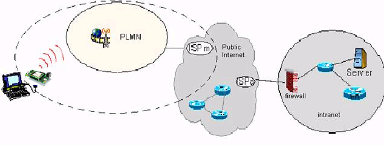
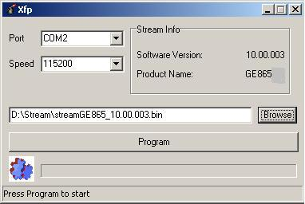
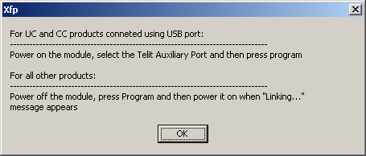
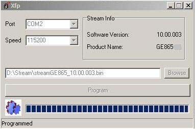
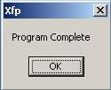

Telit Modules Software User Guide
1vv0300784 rev.6 2011-03-10


Telit GSM/GPRS Family Software User Guide
1vv0300784 rev.6 2010-10-04
This document is related to the following Telit Modules:
PRODUCT
GT863-PY
GT864-QUAD
GT864-PY
GM862-GPS
GC864-QUAD
GC864-DUAL
GC864-QUAD V2
GC864-DUAL V2
GE863-QUAD
GE863-GPS
GE863-SIM
GE863-PRO3
GE864-QUAD
GE864-QUAD V2
GE864-DUAL V2
GE864-QUAD Automotive V2
GE864-QUAD Atex
GE865-QUAD
GL865-DUAL
GL865-QUAD
Tab. 1: Products table
Reproduction forbidden without Telit Communications S.p.A. written authorization - All Rights Reserved
page 2 of 178


Telit GSM/GPRS Family Software User Guide
1vv0300784 rev.6 2010-10-04
Contents
1. Introduction ........................................................................................... 11
1.1.
Scope .............................................................................................................................. 11
1.2.
Document Organization .................................................................................................. 11
1.3.
Text Conventions ............................................................................................................ 12
1.4.
Related Documents ........................................................................................................ 13
1.5.
Document Change Log .................................................................................................... 14
2. Basic Operations .................................................................................... 15
2.1.
AT Interface Style ........................................................................................................... 15
2.2.
Turning ON the Module ................................................................................................... 16
2.3.
Turning OFF the Module ................................................................................................. 16
2.3.1.
Software Shutdown .............................................................................................................. 16
2.4.
First Telit Module Approach ........................................................................................... 17
2.4.1.
Telit Module Identification ................................................................................................... 17
2.4.2.
Band Configuration .............................................................................................................. 17
2.4.3.
Enabling the Extended Error Result codes ........................................................................ 18
2.4.4.
Second Interface Instance ................................................................................................... 18
2.4.5.
Serial Port Speed Configuration ......................................................................................... 20
2.4.6.
AT Command Interface selection ........................................................................................ 21
2.4.7.
SIM Checking ....................................................................................................................... 21
2.4.7.1.
Query SIM presence and status ................................................................................................ 21
2.4.7.2.
SIM PIN ...................................................................................................................................... 22
2.4.7.3.
SIM PUK .................................................................................................................................... 23
2.4.7.4.
Query SIM Status ....................................................................................................................... 24
2.4.7.5.
SIM Detection Mode .................................................................................................................. 25
2.4.7.6. Generic SIM access ....................................................................................................................... 26
2.4.7.7.
Preferred Operator List ............................................................................................................ 27
2.4.8.
Network checking ................................................................................................................ 29
2.4.8.1.
Query Network status ............................................................................................................... 29
2.4.8.2.
Network Operator Identification ............................................................................................... 30
2.4.8.3.
Received Signal Strength & Quality .......................................................................................... 31
2.4.8.4.
Network Status Checking ......................................................................................................... 32
2.4.8.5.
Enhanced Network Selection and AT&T functions .................................................................. 35
2.4.9.
Network Survey ................................................................................................................... 37
2.4.9.1.
Network Survey ......................................................................................................................... 37
2.4.9.2.
BCCH Network Survey .............................................................................................................. 38
2.5.
Establishing a Voice call ................................................................................................ 38
Reproduction forbidden without Telit Communications S.p.A. written authorization - All Rights Reserved
page 3 of 178


Telit GSM/GPRS Family Software User Guide
1vv0300784 rev.6 2010-10-04
2.5.1.
Setting up a Voice Call ......................................................................................................... 38
2.5.1.1.
Setting the Module in Voice Mode ............................................................................................. 38
2.5.1.2.
Setting the Desired Audio Path Active ...................................................................................... 39
2.5.1.3.
Setting the Desired Volume on the Active Audio Path Speaker Output ................................... 41
2.5.1.4.
Checking for Microphone Mute Setting .................................................................................... 41
2.5.2.
Dialing a Phone Number (Voice Call) .................................................................................. 42
2.5.3.
Closing the Voice Call .......................................................................................................... 42
2.5.4.
Codec Information ............................................................................................................... 43
2.5.5.
Audio Codec ......................................................................................................................... 43
2.6.
Establishing a CSD Data Call .......................................................................................... 44
2.6.1.
Setting up Data Call Device ................................................................................................. 44
2.6.1.1.
Setting the Device in Data Mode ............................................................................................... 44
2.6.1.2.
Setting the Desired Modulation and Speed for the Connection ............................................... 44
2.6.2.
Dialing a Phone Number (Data Call) ................................................................................... 45
2.6.3.
Closing the Data Call ........................................................................................................... 47
2.6.3.1.
Exiting the Data Mode and Entering the Command Mode ....................................................... 47
2.6.3.2.
Hanging up the Data Call .......................................................................................................... 47
2.7.
Answering an Incoming Call ........................................................................................... 48
2.7.1.
GSM Single Numbering Scheme ......................................................................................... 48
2.8.
Enabling TTY Function .................................................................................................... 50
2.9.
HW Flow control ............................................................................................................. 53
2.9.1.
RTS detection of DTE ........................................................................................................... 53
2.9.2.
CTS assertion of Module ..................................................................................................... 53
3. Advanced Operations ............................................................................. 54
3.1.
Accessing the Phonebook ............................................................................................... 54
3.1.1.
Selecting Phonebook Memory Storage .............................................................................. 54
3.1.1.1.
Locking or Unlocking ME .......................................................................................................... 56
3.1.2.
Finding Phonebook Entries ................................................................................................. 57
3.1.3.
Reading Phonebook Entries ................................................................................................ 58
3.1.4.
Writing a Phonebook Entry .................................................................................................. 59
3.1.5.
Deleting a Phonebook Entry ................................................................................................ 60
3.1.6.
Dialing a Phonebook Entry .................................................................................................. 61
3.2.
Encryption Algorithm ...................................................................................................... 62
3.2.1.
Set Encryption Algorithm .................................................................................................... 62
3.3.
Network Time Zone ........................................................................................................ 63
3.3.1.
Automatic Data/Time updating ........................................................................................... 63
3.4.
Call Management ............................................................................................................ 64
3.4.1.
Identifying the Call Type ...................................................................................................... 64
3.4.2.
Identifying the Caller ........................................................................................................... 65
Reproduction forbidden without Telit Communications S.p.A. written authorization - All Rights Reserved
page 4 of 178


Telit GSM/GPRS Family Software User Guide
1vv0300784 rev.6 2010-10-04
3.4.3.
Restricting Calling Line Indication ...................................................................................... 66
3.4.3.1.
Querying CLIR Service Status ................................................................................................... 66
3.4.3.2.
Restrict or Allow Caller Line ID Indication ............................................................................... 67
3.4.4.
Call Barring Control ............................................................................................................ 69
3.4.4.1.
Querying Call Barring Service Status ....................................................................................... 69
3.4.4.2.
Barring or Unbarring All Incoming Calls ................................................................................. 70
3.4.4.3.
Barring or Unbarring Incoming Calls in International Roaming ............................................. 72
3.4.4.4.
Barring or Unbarring All Outgoing Calls .................................................................................. 73
3.4.4.5.
Barring or Unbarring All Outgoing International Calls ............................................................ 74
3.4.4.6.
Barring or Unbarring All Outgoing International Calls except to Home Country .................... 76
3.4.4.7.
Unbarring All Calls .................................................................................................................... 78
3.5.
Storing MSISDN into SIM ................................................................................................ 79
3.6.
DTMF Tones .................................................................................................................... 82
3.6.1.
DTMF decoder ...................................................................................................................... 83
3.7.
GSM Power Saving Function ........................................................................................... 85
3.7.1.
Enabling and Disabling the Power Saving Function ........................................................... 86
3.7.2.
Power saving modes ............................................................................................................ 88
3.8.
SMS Management ........................................................................................................... 92
3.8.1.
Setting up Short Message Service ...................................................................................... 92
3.8.1.1.
Selecting SMS format type........................................................................................................ 92
3.8.1.2.
Checking SMS Service Centre Number .................................................................................... 94
3.8.1.3.
Adding SMS Service Centre Number ........................................................................................ 94
3.8.1.4.
Selecting New Messages Indication Behavior .......................................................................... 96
3.8.1.5.
Setting Text Mode Parameters ................................................................................................. 97
3.8.1.6.
Selecting SMS Memory and Checking for Memory Space ....................................................... 99
3.8.2.
Supported Character Sets ................................................................................................. 102
3.8.2.1.
IRA Character Set.................................................................................................................... 103
3.8.2.2.
UCS2 Character Set ................................................................................................................ 104
3.8.3.
Writing a New SMS into Storage ....................................................................................... 106
3.8.4.
Sending a Previously Stored SMS ..................................................................................... 108
3.8.5.
Sending a New SMS without Storing It ............................................................................. 110
3.8.6.
Sending a New SMS by means of the GPRS service ........................................................ 111
3.8.7.
Deleting an SMS ................................................................................................................ 113
3.8.8.
Reading an SMS ................................................................................................................. 115
3.8.9.
Listing a Group of SMSs .................................................................................................... 115
3.8.10.
Cell Broadcast Service .................................................................................................. 117
3.8.11.
Read concatenated SMS ................................................................................................ 118
3.9.
General Purpose Input/Output Pins .............................................................................. 120
3.9.1.
Setting GPIO Pin as OUTPUT ............................................................................................. 123
3.9.2.
Setting GPIO Pin as INPUT ................................................................................................ 124
3.9.3.
Querying GPIO Pin Status .................................................................................................. 125
3.9.4.
GPIO Used for Alternate Function ..................................................................................... 127
Reproduction forbidden without Telit Communications S.p.A. written authorization - All Rights Reserved
page 5 of 178


Telit GSM/GPRS Family Software User Guide
1vv0300784 rev.6 2010-10-04
3.9.4.1.
GPIO4 Pin as RF Transmission Control .................................................................................. 127
3.9.4.2.
GPIO5 Pin as RFTXMON OUTPUT ........................................................................................... 127
3.9.4.3.
GPIO6 Pin as ALARM OUTPUT ................................................................................................ 128
3.9.4.4.
GPIO7 Pin as BUZZER OUTPUT .............................................................................................. 130
3.9.5.
Clock and Alarm Functions ............................................................................................... 131
3.9.5.1.
Regulating the Clock ............................................................................................................... 132
3.9.5.2.
Reading the Current Date and Time ....................................................................................... 132
3.9.5.3.
Regulating the Alarm Time and Operations ........................................................................... 133
3.9.5.4.
Postpone the Alarm Time and Operations ............................................................................. 139
3.9.5.5.
Stopping the Alarm Activity ..................................................................................................... 140
3.9.5.6.
Querying the Alarm Status ...................................................................................................... 140
3.9.5.7.
Alarm Operation Example ....................................................................................................... 141
4. GPRS Operations ................................................................................. 143
4.1.
Introduction .................................................................................................................. 143
5. GPS Operations .................................................................................... 146
5.1.
Introduction .................................................................................................................. 146
5.2.
GPS Serial Ports ........................................................................................................... 146
5.3.
WGS 84 ......................................................................................................................... 148
5.4.
NMEA 0183 Protocol ..................................................................................................... 148
5.4.1.
NMEA Output Messages .................................................................................................... 148
5.4.1.1.
GGA - Global Positioning System Fixed Data ......................................................................... 150
5.4.1.2.
GLL - Geographic Position - Latitude/Longitude ................................................................... 151
5.4.1.3.
GSA - GNSS DOP and Active Satellites ................................................................................... 151
5.4.1.4.
GSV - GNSS Satellites in View ................................................................................................. 152
5.4.1.5.
RMC - Recommended Minimum Specific GNSS Data ............................................................ 153
5.4.1.6.
VTG - Course Over Ground and Ground Speed ....................................................................... 154
5.4.2.
NMEA Input Messages ...................................................................................................... 155
5.4.2.1.
Transport Message ................................................................................................................. 155
5.5.
AT Commands to Control GPS Receiver ....................................................................... 160
5.5.1.
Controlled Mode ................................................................................................................ 160
5.5.2.
NMEA Sentences on MODEM Serial Port #0 .................................................................... 161
5.5.3.
Power Control of GPS Receiver ........................................................................................ 163
5.5.4.
GPS Reset .......................................................................................................................... 165
5.5.5.
GPS Antenna Management ............................................................................................... 166
5.5.5.1.
GPS Antenna Current and Voltage Readout ........................................................................... 166
5.5.6.
Saving GPS Parameters .................................................................................................... 168
5.5.7.
Restoring GPS Parameters ............................................................................................... 168
5.5.8.
Reading Acquired GPS Position ........................................................................................ 168
5.5.9.
Setting the GPS Module in Power Saving Mode ............................................................... 169
5.5.10.
Wake Up GPS from Power Saving Mode ....................................................................... 170
Reproduction forbidden without Telit Communications S.p.A. written authorization - All Rights Reserved
page 6 of 178


Telit GSM/GPRS Family Software User Guide
1vv0300784 rev.6 2010-10-04
6. Service and Firmware Update .............................................................. 172
6.1.
Xfp Tool ......................................................................................................................... 172
6.1.1.
Step-by-Step Upgrade Procedure .................................................................................... 173
6.1.1.1. Upgrade Procedure using the Command Line ........................................................................... 176
7. Acronyms and Abbreviations ............................................................... 178
Reproduction forbidden without Telit Communications S.p.A. written authorization - All Rights Reserved
page 7 of 178


Telit GSM/GPRS Family Software User Guide
1vv0300784 rev.6 2010-10-04
Figures
fig. 1: AT0, AT1, AT2 Parsers ..................................................................................................................... 19
fig. 2: TTY device – module connection ..................................................................................................... 50
fig. 3: RTS/CTS flow control ....................................................................................................................... 53
fig. 4: Control Serial lines .......................................................................................................................... 91
fig. 5: CFUN Mode vs. DTR event ............................................................................................................... 91
fig. 6: GPS serial port configuration: “B” (GM862-GPS) ......................................................................... 147
fig. 7: GPS serial port configuration: “A & B” (GE863-GPS) ................................................................... 147
Tables
Tab. 1: Products table .................................................................................................................................. 2
Tab. 2: Modules and supported AT Interface Styles ................................................................................. 16
Tab. 3: DTMF tones .................................................................................................................................... 82
Tab. 4: CFUN modes .................................................................................................................................. 88
Tab. 5: CFUN modes .................................................................................................................................. 89
Tab. 6: GPIO pins description ................................................................................................................... 122
Reproduction forbidden without Telit Communications S.p.A. written authorization - All Rights Reserved
page 8 of 178


Telit GSM/GPRS Family Software User Guide
1vv0300784 rev.6 2010-10-04
AT Commands list in alphabetical order
The following list shows the AT commands covered by this User Guide. The number reported close to
each command indicates the page of the first AT command occurrence. Refer to [1] to know which
product supports the interested AT command.
+++ ..................................... 48
AT#SNUM .......................... 82
AT+CMGL ........................ 116
AT ....................................... 18
AT#TTY .............................. 52
AT+CMGR .......................... 98
AT#AUTOBND .................. 19
AT#WAKE ........................ 142
AT+CMGS ........................ 106
AT#BND ............................ 18
AT$GPSACP .................... 169
AT+CMGW ....................... 107
AT#CAP ............................. 40
AT$GPSAI ........................ 167
AT+CMSS ........................ 108
AT#CCLK .......................... 65
AT$GPSAT ....................... 167
AT+CMUT .......................... 42
AT#CMGLCONCINDEX .. 119
AT$GPSAV ....................... 167
AT+CNMI ........................... 97
AT#CODEC ........................ 44
AT$GPSD ......................... 162
AT+CNUM ......................... 81
AT#CODECINFO ............... 44
AT$GPSNMUN ................ 163
AT+COPS ........................... 31
AT#CSURV ........................ 38
AT$GPSP ......................... 165
AT+CPBF ........................... 58
AT#CSURVB ..................... 39
AT$GPSPS ....................... 170
AT+CPBR .......................... 59
AT#DTMF .......................... 84
AT$GPSR ......................... 166
AT+CPBS ........................... 55
AT#ENCALG ..................... 63
AT$GPSRST .................... 169
AT+CPBW .......................... 60
AT#ENS ............................. 36
AT$GPSSAV ..................... 169
AT+CPIN ........................... 22
AT#GPIO ......................... 124
AT$GPSWK ...................... 171
AT+CPMS ........................ 101
AT#HFMICG ...................... 51
AT&P0 ................................ 21
AT+CPOL ........................... 28
AT#HSMICG ...................... 52
AT&W0 ............................... 21
AT+CRC ............................. 65
AT#MONI .......................... 34
AT+ CGSMS ..................... 112
AT+CREG .......................... 30
AT#NITZ ............................ 64
AT+CALA.......................... 134
AT+CRSM .......................... 80
AT#QSS ............................. 25
AT+CAPD ......................... 140
AT+CSCA ........................... 95
AT#SELINT ....................... 22
AT+CBST ........................... 45
AT+CSCB ......................... 118
AT#SERVINFO .................. 35
AT+CCLK ......................... 133
AT+CSCS ......................... 103
AT#SHDN .......................... 17
AT+CFUN ........................... 87
AT+CSMP .......................... 99
AT#SHFAGC ..................... 52
AT+CGATT ....................... 113
AT+CSNS .......................... 49
AT#SHFEC ........................ 52
AT+CGMM .......................... 18
AT+CSQ ............................. 32
AT#SHFNR ....................... 52
AT+CGMR .......................... 18
AT+FCLASS ...................... 39
AT#SHFSD ........................ 52
AT+CGSMS ...................... 112
AT+IPR .............................. 21
AT#SHSAGC ..................... 52
AT+CLCK ........................... 57
AT+VTD ............................. 83
AT#SHSEC ........................ 52
AT+CLIP ............................. 66
AT+VTS .............................. 83
AT#SHSNR ....................... 53
AT+CLIR ............................. 68
ATA .................................... 49
AT#SHSSD ........................ 52
AT+CLVL ............................ 42
ATD .................................... 43
AT#SII ................................ 19
AT+CMEE ........................... 19
ATH .................................... 43
AT#SIMDET ...................... 26
AT+CMGD ........................ 114
AT#SMSMODE .................. 97
AT+CMGF ........................... 93
Reproduction forbidden without Telit Communications S.p.A. written authorization - All Rights Reserved
page 9 of 178


Telit GSM/GPRS Family Software User Guide
1vv0300784 rev.6 2010-10-04
DISCLAIMER
The information contained in this document is the proprietary information of Telit
Communications S.p.A. and its affiliates (“TELIT”).
The contents are confidential and any disclosure to persons other than the officers,
employees, agents or subcontractors of the owner or licensee of this document,
without the prior written consent of Telit, is strictly prohibited.
Telit makes every effort to ensure the quality of the information it makes available.
Notwithstanding the foregoing, Telit does not make any warranty as to the information
contained herein, and does not accept any liability for any injury, loss or damage of any
kind incurred by use of or reliance upon the information.
Telit disclaims any and all responsibility for the application of the devices characterized
in this document, and notes that the application of the device must comply with the
safety standards of the applicable country, and where applicable, with the relevant
wiring rules.
Telit reserves the right to make modifications, additions and deletions to this document
due to typographical errors, inaccurate information, or improvements to programs
and/or equipment at any time and without notice.
Such changes will, nevertheless be incorporated into new editions of this document.
Copyright: Transmittal, reproduction, dissemination and/or editing of this document as
well as utilization of its contents and communication thereof to others without express
authorization are prohibited. Offenders will be held liable for payment of damages. All
rights are reserved.
Copyright © Telit Communications S.p.A. 2011.
Reproduction forbidden without Telit Communications S.p.A. written authorization - All Rights Reserved
page 10 of 178


Telit GSM/GPRS Family Software User Guide
1vv0300784 rev.6 2010-10-04
1.
Introduction
1.1.
Scope
The purpose of this document is to describe some standard and proprietary AT
commands supported by Telit modules. The most important module functions are
taken into consideration and for each one of them a proper AT command is described.
Some useful services and features of the GSM Network supported by the Telit modules
are also described and examples of AT command sequences are provided.
NOTE:
The AT command sequences described in this document are not mandatory, and this
information should be used as an introduction in the AT command use.
All detailed information about available AT commands and Telit modules features can
be found in the documents [1] and [2].
1.2.
Document Organization
This User Guide contains the following chapters:
“Chapter 1: Introduction”: Provides a scope for this User Guide, text conventions,
and related documents.
“Chapter 2: Basic Operations”: Describes basic AT command sequences to perform
actions like, for example, turning the module on and off and establishing calls.
“Chapter 3: Advanced Operations”: Describes AT command sequences that allow you
to perform more complex actions like, for example, accessing the phonebook and
managing calls and SMSs.
“Chapter 4: GPRS Operations”: Provides and introduction to using the GPRS
functions of the module.
“Chapter 5: GPS Operations”: Provides a detailed description of GPS operations for
modules supporting GPS functions.
“Chapter 6: Service and Firmware Update”: Provides a step-by-step instruction for
service and firmware upgrade.
“Chapter 7: Acronyms and Abbreviations”: Provides a definition for all the acronyms
and abbreviations used in this document.
Reproduction forbidden without Telit Communications S.p.A. written authorization - All Rights Reserved
page 11 of 178


Telit GSM/GPRS Family Software User Guide
1vv0300784 rev.6 2010-10-04
1.3.
Text Conventions
Danger – This information MUST be followed or catastrophic equipment failure or
bodily injury may occur.
Caution or Warning – Alerts the user to important points about integrating the
module, if these points are not followed, the module and end user equipment may
fail or malfunction.
Tip or Information – Provides advice and suggestions that may be useful when
integrating the module.
All dates are in ISO 8601 format, i.e. YYYY-MM-DD.
FORMAT CONTENT
Courier New, Bold
Command input
Courier New
Command output
Reproduction forbidden without Telit Communications S.p.A. written authorization - All Rights Reserved
page 12 of 178

Telit GSM/GPRS Family Software User Guide
1vv0300784 rev.6 2010-10-04
1.4.
Related Documents
[1]
AT Commands Reference Guide, Telit document: 80000ST10025a
[2]
Refer to the specific “Telit Product Description” document
[3]
Refer to the specific “Telit Hardware User Guide” document
[4]
Easy GPRS User Guide, Telit document: 80000ST10028
[5]
ETSI GSM 07.07
[6]
EVK2 User Guide, Telit document: 1vv0300704
[7]
ETSI GSM 03.38
[8]
NMEA-0183 Standard For Interfacing Marine Electronic Devices
[9]
Device Requirements AT&T, Document Number 13340
[10]
WGS 84 IMPLEMENTATION MANUAL, EUROCONTROL and IfEN
[11]
NMEA Reference Manual, SiRF Technology, Inc.
[12]
ITU-T Recommandation E.164
[13]
ETSI GSM 11.11
[14]
ITU-T Recommendation V.24
[15]
UC864/CC864 Windows 2000, XP and Vista Driver,
Telit document: 1vv0200903.
[16]
ETSI GSM 11.14
Reproduction forbidden without Telit Communications S.p.A. written authorization - All Rights Reserved
page 13 of 178


Telit GSM/GPRS Family Software User Guide
1vv0300784 rev.6 2010-10-04
1.5. Document Change Log
Revision Date
Changes
s
ISSUE #0
2008-08-01
First release
ISSUE #1
2009-01-15
Updated P/N list
Added GC864PY and GE864-QUAD-Automotive to the list of
modules concerned by the present document
Added comment on setting the working bands
Updated delay time for wake-up from sleep mode
Update Diagram 3.5.2
Deleted § 6.1.2 Tfi Tool
ISSUE #2
2009-09-29
Added: AT Commands list, AT+CGSMS, AT+CAPD
Updated: GE family table, Tab. 2, reference [1], Tab. 4
Changed +ALARM into +CALA on § 3.9.5.7
ISSUE#3
2010-01-26
Added Ge864-QUAD Atex, GE864QUAD Antenna, GE863 Pro3
128/64, GE864-QUAD V2 and GE864-QUAD AUTOMOTIVE V2
ISSUE#4
2010-06-28
Added § 2.9 RTS detection.
Updated § 3.7.1, § 3.7.2, § 1.4, § 6.1.1 and Tab. 4.
Updated Tab. 1, Tab. 2, Tab. 6
ISSUE#5
2010-10-04
Added GE865-DUAL to applicability table
ISSUE#6
2011-03-10
Added the following commands: AT#DTMF, AT#CSURV,
AT#CSURVB, AT#QSS, AT#SII, AT#CODECINFO,
AT#CODEC, AT#ENCALG, AT+CSNS, AT#SIMDET, AT#NITZ,
AT+CSIM, AT#CMGLCONCINDEX
Reproduction forbidden without Telit Communications S.p.A. written authorization - All Rights Reserved
page 14 of 178


Telit GSM/GPRS Family Software User Guide
1vv0300784 rev.6 2010-10-04
2.
Basic Operations
For AT command syntax, refer to [1].
2.1.
AT Interface Style
For information about AT Interface Backward Compatibility and #SELINT Factory
Setting for each type of Telit module covered by this guide refer to document [1]. For
reader convenience the Tab. 2 summarizes the Module Families in relation with the
supported AT Interface Style: 0, 1 and 2. The switching among the supported AT
Interface Styles is performed with the #SELINT AT command.
AT Interface Style supported
Families & Modules
Factory Setting
GM Family ( Modem)
GM862-QUAD
0 1 2
GM862-QUAD-PY 0
1 2
GM862-GPS 0
1
2
GC Family ( Compact )
GC864-QUAD 0
1
2
GC684-QUAD /w SIM holder
0
1
2
GC864-PY 0
1
2
GC864-DUAL -
-
2
GC864-QUAD V2
0
1
2
GC864-QUAD V2 with SIM holder
0
1
2
GC864-DUAL V2
-
-
2
GE Family ( Embedded )
GE863-QUAD 0
1
2
GE863-GPS 0
1
2
GE863-PY 0
1 2
GE863- SIM
0
1
2
GE863- PRO3 -
-
2
GE863- PRO3 with Linux
-
-
2
GE864-QUAD 0
1
2
GE864-QUAD V2
0
1
2
GE864-DUAL V2
0
1
2
GE864-QUAD Automotive V2
-
-
2
GE864-PY 0
1
2
GE864-QUAD Automotive
-
-
2
Reproduction forbidden without Telit Communications S.p.A. written authorization - All Rights Reserved
page 15 of 178


Telit GSM/GPRS Family Software User Guide
1vv0300784 rev.6 2010-10-04
AT Interface Style supported
Families & Modules
Factory Setting
GE864-QUAD ATEX
-
-
2
GE865-QUAD -
-
2
GT Family ( Terminal )
GT863-PY 0
1 2
GT864-QUAD 0
1
2
GT864-PY 0
1
2
Tab. 2: Modules and supported AT Interface Styles
NOTE:
The AT commands described in this guide refer to the #SELINT 2 AT Interface Style.
2.2.
Turning ON the Module
To get more information about procedure and timing refer to [3].
2.3.
Turning OFF the Module
To get more information about procedure and timing refer to [3].
2.3.1.
Software Shutdown
Issue the following command:
AT#SHDN
OK
During shutdown the module executes the following actions:
Detachment from the network
Module Power OFF
To get more information about procedure and timing refer to [3].
Reproduction forbidden without Telit Communications S.p.A. written authorization - All Rights Reserved
page 16 of 178


Telit GSM/GPRS Family Software User Guide
1vv0300784 rev.6 2010-10-04
2.4.
First Telit Module Approach
After a proper Power ON sequence the Telit module is ready to receive AT commands
on its Serial Port. Some functions have to be checked in order to be sure that the
module is ready to send and receive calls and SMS.
2.4.1.
Telit Module Identification
Use the following AT command to verify if the connection between DTE and Telit
module (DCE) is working. The current serial port speed setting is Autobauding (Factory
Setting):
AT
OK
Use the following AT commands to verify the Software version and Telit module
identification:
AT+CGMR: Returns the Software version information
AT+CGMM: Returns the Telit Module identification
Examples
Checking the software version
AT+CGMR
10.00.004
OK
Checking the module identification
AT+CGMM
GM862-QUAD
OK
2.4.2.
Band Configuration
Use the following AT command to select the current band range:
AT#BND=[<band>];
The range of parameter <band> depends on the SELINT configuration, see [1] for
details.
Examples
AT#BND=[0]
Selected band: GSM 900MHz + DCS 1800MHz.
Reproduction forbidden without Telit Communications S.p.A. written authorization - All Rights Reserved
page 17 of 178


Telit GSM/GPRS Family Software User Guide
1vv0300784 rev.6 2010-10-04
Use the following AT command to enable/disable the automatic band selection at
power-on.:
AT#AUTOBND=[<value>];
The range of parameter <value> depends on the SELINT configuration, see [1] for
details.
The module is a quad band device, but in any case it is necessary to set the correct
working bands, see [1] for details.
2.4.3.
Enabling the Extended Error Result codes
To enable the error report in numerical format for +Cxxx commands, issue the
following command:
AT+CMEE=1
OK
To enable the error report in verbose format for +Cxxx commands, issue the following
command:
AT+CMEE=2
OK
2.4.4.
Second Interface Instance
Use the following AT command to activate one of the three AT instances available and
assign it to the ASC1 serial port, see fig. 1.
AT#SII = <inst>
For parameter description, refer to [1].
Examples
AT#SII?
#SII: 0
Trace service is connected to ASC1, see fig. 1
OK
AT#SII=1
ASC1 is disconnected from Trace service
and connected to AT1 Parser.
ASC0 is still connected to AT0 Parser.
Reproduction forbidden without Telit Communications S.p.A. written authorization - All Rights Reserved
page 18 of 178


Telit GSM/GPRS Family Software User Guide
1vv0300784 rev.6 2010-10-04
MODULE
SW ENGINE
AT
0 Parser
AT1 Parser
AT2 Parser
TRACE
instance # 1
instance # 2
instance # 3
Access Point
ASC0
ASC1
COM1
At module power on:
- The ASC0 serial port is connected to AT0 Parser,
HyperTe rminal
DTE
- The ASC1 serial port is connected to the TRACE.
Session connected
to AT0 P
arser
fig. 1: AT0, AT1, AT2 Parsers
Reproduction forbidden without Telit Communications S.p.A. written authorization - All Rights Reserved
page 19 of 178


Telit GSM/GPRS Family Software User Guide
1vv0300784 rev.6 2010-10-04
2.4.5.
Serial Port Speed Configuration
Use the following AT command to specify the Serial Port speed of the Telit module
(DCE):
AT+IPR=<rate>
For a detailed description of parameters and possible responses, refer to [1].
Examples
Checking the current serial port speed setting (Factory Setting = autobauding):
AT+IPR?
+IPR: 0
OK
Checking the serial port speed range:
AT+IPR=?
+IPR:
(0,300,1200,2400,4800,9600,19200,38400,57600,115200),(0,300,1200
,2400,4800,9600,19200,38400,57600,115200)
OK
Setting up the serial port speed of the module (DCE) to 38400 bps:
AT+IPR=38400
OK
AT&W0
store the setting on profile 0
OK
AT&P0
at Power ON use profile 0
OK
Checking the current serial port speed:
NOTE:
Before entering the following AT command set up the DTE serial port to 38400 bps.
AT+IPR?
+IPR: 38400
OK
Reproduction forbidden without Telit Communications S.p.A. written authorization - All Rights Reserved
page 20 of 178


Telit GSM/GPRS Family Software User Guide
1vv0300784 rev.6 2010-10-04
2.4.6.
AT Command Interface selection
Use the following AT command to check the current AT Interface Style:
AT#SELINT?
For details on the possible responses, refer to [1].
Examples
After powering ON the module, checking the current AT Command Interface:
AT#SELINT?
#SELINT: 0
OK
Checking the AT Command Interfaces Set supported:
AT#SELINT=?
#SELINT: (0-2)
OK
Selecting an AT Command Interface Set:
AT#SELINT=2
OK
Select a wrong AT Command Interface Set just to see the response:
AT#SELINT=3
ERROR
Checking which AT Command Interface is active:
AT#SELINT?
#SELINT: 2
OK
2.4.7.
SIM Checking
2.4.7.1.
Query SIM presence and status
Issue the following command:
AT+CPIN?
Responses:
+CPIN: XXXX (Refer to [1] for the details.)
OK
ERROR
See table below:
Reproduction forbidden without Telit Communications S.p.A. written authorization - All Rights Reserved
page 21 of 178


Telit GSM/GPRS Family Software User Guide
1vv0300784 rev.6 2010-10-04
Error results if extended error result codes is enabled, see +CMEE command
Numeric Format
or Verbose Format
Details
+CME ERROR: XX
understandable message
Refer to [1]
Examples
The SIM is not inserted into Telit Module. Extended error result code is not enabled.
Checking if PIN code is needed, just to see the response command:
AT+CPIN?
ERROR
The SIM is not inserted into Telit Module. Verbose extended error result code is
enabled. Checking if PIN code is needed, just to see the response command:
AT+CPIN?
+CME ERROR: SIM not inserted
The SIM is not inserted into Telit Module. Numerical extended error result code is
enabled. Checking if PIN code is needed, just to see the response command:
AT+CPIN?
+CME ERROR: 10
Inserting the SIM into Telit Module and checking if PIN code is needed:
AT+CPIN?
+CPIN: SIM PIN
OK
2.4.7.2.
SIM PIN
Issue the following command:
AT+CPIN=<pin>
For parameter description, refer to [1].
Responses:
OK
ERROR
See table below:
Error results if extended error result codes is enabled, see +CMEE command
Numeric Format
or Verbose Format
Details
+CME ERROR: XX
understandable message
Refer to [1]
Reproduction forbidden without Telit Communications S.p.A. written authorization - All Rights Reserved
page 22 of 178


Telit GSM/GPRS Family Software User Guide
1vv0300784 rev.6 2010-10-04
Examples
A wrong PIN code is entered. Extended error result is not enabled.
AT+CPIN=1235
ERROR
A right PIN code is entered:
AT+CPIN=1234
OK
A wrong PIN code is entered. Verbose extended error result code is enabled:
1. Enabling Verbose extended error result code:
AT+CMEE=2
OK
2. Entering a wrong PIN code:
AT+CPIN=1235
+CME ERROR: incorrect password.
NOTE:
After 3 failed attempts SIM PIN is no longer requested and the SIM is locked. Use SIM
PUK to enter a new SIM PIN and unlock the SIM.
2.4.7.3.
SIM PUK
Issue the following command:
AT+CPIN=<pin>[,<newpin>]
For parameter description, refer to [1].
Responses:
OK
ERROR
See table below:
Error results if extended error result codes is enabled, see +CMEE command
Numeric Format
or Verbose Format
Details
+CME ERROR: XX
understandable message
Refer to [1]
Reproduction forbidden without Telit Communications S.p.A. written authorization - All Rights Reserved
page 23 of 178


Telit GSM/GPRS Family Software User Guide
1vv0300784 rev.6 2010-10-04
TIP:
After 10 failed attempts to enter SIM PUK code, the SIM Card is locked and no longer
available.
2.4.7.4.
Query SIM Status
Use the following AT command to enable/disable the Query SIM Status unsolicited
indication.
AT#QSS = <mode>
For parameter description, refer to [1].
Example 1
AT#QSS=1
valid for SELINT=0,1,2
OK
#QSS: 0
unsolicited indication: the SIM is extracted.
#QSS: 1
unsolicited indication: the SIM is inserted.
Example 2
AT#QSS=2
valid only for SELINT=2
OK
AT+IPR=19200
select the Serial Port speed = DTE speed
OK
AT&W0
store the setting on profile 0
OK
AT&P0
at Power ON use profile 0
OK
Power OFF/ON the Module
#QSS:1
unsolicited indication: SIM inserted
Reproduction forbidden without Telit Communications S.p.A. written authorization - All Rights Reserved
page 24 of 178


Telit GSM/GPRS Family Software User Guide
1vv0300784 rev.6 2010-10-04
AT+CPIN?
+CPIN: SIM PIN
SIM is locked
OK
AT+CPIN=<PIN>
enter
PIN
OK
#QSS: 2
unsolicited indication: SIM is unlocked
The interval time between the two unsolicited indications #QSS: 2 and #QSS: 3 depends
from the number of SMS stored on the module and the Phonebook dimension.
#QSS: 3
unsolicited indication: SMS and Phonebook accessible
2.4.7.5.
SIM Detection Mode
Use the following AT command to manage the SIMIN Pin used to detect the SIM.
AT#SIMDET=<mode>
OK
Example
AT#SIMDET?
#SIMDET: 2,1
AT#QSS=1
SIM is extracted
#QSS: 0
unsolicited indication: SIM is extracted
SIM is inserted
#QSS: 1
unsolicited indication: SIM is inserted
AT#SIMDET=0
simulate SIM not inserted, but it is still physically inserted
OK
#QSS: 0
unsolicited indication: SIM is NOT physically extracted
Reproduction forbidden without Telit Communications S.p.A. written authorization - All Rights Reserved
page 25 of 178


Telit GSM/GPRS Family Software User Guide
1vv0300784 rev.6 2010-10-04
Now the SIM is extracted and inserted, but no unsolicited indication appears on DTE
extract the SIM
AT#SIMDET=1
simulate SIM inserted, but it is still physically extracted
OK
#QSS: 1
unsolicited indication: SIM is physically extracted
Now the SIM is inserted and extracted, but no unsolicited indication appears on DTE
2.4.7.6.
Generic SIM access
Use the following command to read/write SIM files. To interpret the command flow and
decode the meaning of the strings showed by the following example refer to [13], [16].
AT+CSIM=1 Lock SIM interface
OK
AT+CSIM=14,A0A40000026F30
select EF 6F30
+CSIM: 4,”9F0F”
OK
AT+CSIM=10,A0C000000F
get response
+CSIM: 34,”000000696F30040011F555010200009000”
OK
AT+CSIM=10,A0B0000069
read binary
+CSIM:
214,"32F23002F60182F45032F01032F80242F41902F81062F21002F21012F60372F22072
F09972F81202F46142F22062F02062F86022F60132F11092F31412F47042F01022F83082
F63032F4
01FFFFFFFFFFFFFFFFFFFFFFFFFFFFFFFFFFFFFFFFFFFFFFFFFFFFFFFFFFFF9000"
OK
AT+CSIM=0 Unlock SIM interface
OK
Reproduction forbidden without Telit Communications S.p.A. written authorization - All Rights Reserved
page 26 of 178


Telit GSM/GPRS Family Software User Guide
1vv0300784 rev.6 2010-10-04
2.4.7.7.
Preferred Operator List
Use the following AT command to manage the Preferred Operator List stored on SIM.
AT+CPOL=[<index>][,<format>[,<oper>]]
For parameter description, refer to [1].
Responses:
+CPOL: ……… (Refer to [1] for the details.)
OK
ERROR
See table below:
Error results if extended error result codes is enabled, see +CMEE command
Numeric Format
or Verbose Format
Details
+CME ERROR: XX
understandable message
Refer to [1]
Examples
Checking the supported parameters:
AT+CPOL=?
+CPOL: (1-20),(2)
OK
NOTE:
The used SIM supports 20 positions. The supported format (2) is numeric.
Reading the entire list:
AT+CPOL?
+CPOL: 1,2,"20801"
+CPOL: 2,2,"20810"
+CPOL: 3,2,"23205"
+CPOL: 4,2,"22802"
+CPOL: 5,2,"29341"
+CPOL: 6,2,"26207"
+CPOL: 7,2,"21403"
Reproduction forbidden without Telit Communications S.p.A. written authorization - All Rights Reserved
page 27 of 178


Telit GSM/GPRS Family Software User Guide
1vv0300784 rev.6 2010-10-04
+CPOL: 8,2,"21910"
+CPOL: 9,2,"21601"
+CPOL: 10,2,"23410"
+CPOL: 11,2,"20201"
+CPOL: 12,2,"20408"
+CPOL: 13,2,"26003"
+CPOL: 14,2,"20610"
+CPOL: 15,2,"23002"
+CPOL: 16,2,"26803"
+CPOL: 17,2,"27202"
+CPOL: 18,2,"24001"
+CPOL: 19,2,"23802"
+CPOL: 20,2,"24201"
OK
NOTE:
The meaning of the string “XXXYY” is the following:
- XXX = Mobile Country Code
- YY = Mobile Network Code
Trying to delete the first entry using a non-existent <format> value just to see the
response when the Extended Error Result code is enabled:
AT+CPOL=1,3
+CME ERROR: operation not supported
Deleting the first entry using a right <format> value:
AT+CPOL=1,2
OK
Checking if the first entry is deleted:
AT+CPOL?
+CPOL: 2,2,"20810"
+CPOL: 3,2,"23205"
Reproduction forbidden without Telit Communications S.p.A. written authorization - All Rights Reserved
page 28 of 178


Telit GSM/GPRS Family Software User Guide
1vv0300784 rev.6 2010-10-04
.
.
+CPOL: 19,2,"23802"
+CPOL: 20,2,"24201"
OK
NOTE:
The entry on first position is deleted.
Writing a new entry on first position:
AT+CPOL=1,2,20801
OK
Checking if the first entry is written on first position:
AT+CPOL?
+CPOL: 1,2,"20801"
+CPOL: 2,2,"20810"
.
.
+CPOL: 19,2,"23802"
+CPOL: 20,2,"24201"
OK
NOTE:
The new entry is written on first position.
2.4.8.
Network checking
2.4.8.1.
Query Network status
Issue the following command:
AT+CREG?
Responses:
+CREG: X,Y (Refer to [1] for the details.)
OK
ERROR
See table below:
Reproduction forbidden without Telit Communications S.p.A. written authorization - All Rights Reserved
page 29 of 178


Telit GSM/GPRS Family Software User Guide
1vv0300784 rev.6 2010-10-04
Error results if extended error result codes is enabled, see +CMEE command
Numeric Format
or Verbose Format
Details
+CME ERROR: XX
understandable message
Refer to [1]
Examples:
Checking if Telit Module is registered:
AT+CREG?
+CREG: 0,1
OK
The antenna is not connected to the Telit Module, repeating the previous AT command:
AT+CREG?
+CREG: 0,3
OK
Telit Module is registered. Collecting Local Area Code and Cell Id:
AT+CREG=2
OK
AT+CREG?
+CREG: 2,1,55FA,12EB
OK
A wrong parameter is entered just to see the result format when verbose extended
error result is enabled:
AT+CREG=9
+CME ERROR: operation not supported
2.4.8.2.
Network Operator Identification
Once the mobile has registered on some Network, it is possible to query the mobile for
Network identifications codes and names with the following command:
AT+COPS=?
Responses:
+COPS: (……) (Refer to [1] for the details.)
OK
ERROR
See table below:
Error results if extended error result codes is enabled, see +CMEE command
Numeric Format
or Verbose Format
Details
+CME ERROR: XX
understandable message
Refer to [1]
Reproduction forbidden without Telit Communications S.p.A. written authorization - All Rights Reserved
page 30 of 178


Telit GSM/GPRS Family Software User Guide
1vv0300784 rev.6 2010-10-04
Examples
Telit Module is registered. Collecting Networks Operators Identifications:
AT+COPS=?
+COPS: (2,"I WIND",,"22288"),(3,"vodafone
IT",,"22210"),(1,"SI.MOBIL",,"29340"),,(0-4),(0,2)
OK
The antenna is not connected to the Telit Module. Verbose extended error result is
enabled. Repeating the previous AT command:
AT+COPS=?
+CME ERROR: no network service
2.4.8.3.
Received Signal Strength & Quality
Once the mobile has registered on a Network, it may be useful to know the received
signal strength & quality to give the User an indication about the radio link reliability.
Use the following AT command:
AT+CSQ
Responses:
+CSQ: XX,YY (Refer to [1] for the details.)
OK
ERROR
See table below:
Error results if extended error result codes is enabled, see +CMEE command
Numeric Format
or Verbose Format
Details
+CME ERROR: XX
understandable message
Refer to [1]
Examples
The antenna is not connected to the Telit Module or not network coverage at all.
AT+CSQ
+CSQ: 99,99
OK
The antenna is connected to the Telit Module. Repeating the previous AT command:
AT+CSQ
+CSQ: 17,0
OK
Reproduction forbidden without Telit Communications S.p.A. written authorization - All Rights Reserved
page 31 of 178


Telit GSM/GPRS Family Software User Guide
1vv0300784 rev.6 2010-10-04
NOTE:
<rssi> = Received Signal Strength Ind. = 17, <ber> = Bit Error Rate = 0.
A wrong parameter is entered just to see the result format when verbose extended
error result is enabled:
AT+CSQ?
+CME ERROR: operation not supported
NOTE:
When Received Signal Strength Indication is less than 6 the radio link quality is poor,
the call could be cut off.
NOTE:
The quality is measured on the traffic channel, hence it is available only during a
conversation, in Idle the reported value must not be considered.
In conversation the quality decreases with the increase of the <ber> number.
NOTE:
The <ber> value refers strictly to the GSM radio channel and is a very technical
parameter; it can be used to monitor the voice call quality since the voice quality is
inversely proportional to the <ber> number.
NOTE:
The reported signal quality only refers to the GSM radio channel link and not to the
whole path from the caller to the receiver. It may happen that the quality on the GSM
radio link is very good and hence the reported <ber> is 0 (good quality) but the quality of
the remaining path to the other party is very bad and hence the final data connection
quality is very poor. For this reason the signal quality indicator <ber> should not be
taken into account to monitor data calls quality.
2.4.8.4.
Network Status Checking
Once the Telit Module is registered on a Network, it could be useful to know the
received signal strength and the Network on which the Telit Module is registered. This
information can be gathered by means of the following standard AT commands: +CREG,
+COPS and +CSQ. These commands are not fast in the response due to Network
response time, especially the +COPS command; if the User objective is to keep the
Reproduction forbidden without Telit Communications S.p.A. written authorization - All Rights Reserved
page 32 of 178


Telit GSM/GPRS Family Software User Guide
1vv0300784 rev.6 2010-10-04
Software Application as general as possible, he/she can use the standard AT
commands above mentioned and described on the previous paragraphs.
Telit Modules provide the User with proprietary AT commands to gather all the
information needed in a faster and simpler way. The proprietary AT commands are:
#MONI, #SERVINFO.
Selecting the Serving Cell
Select the Serving Cell with the following set command:
AT#MONI=0
Responses:
OK
ERROR
Collecting the Serving Cell Information
Collect the Serving Cell Information with the following execution command:
AT#MONI
Response:
#MONI: …………… (Refer to [1] for the details.)
OK
Examples
The antenna is not connected to the Telit Module. Trying to collect Cells Information
just to see the format response:
AT#MONI
ERROR
OK
The antenna is connected to the Telit Module. Collecting network information only
about the serving cell.
1. Selecting Serving Cell:
AT#MONI=0
OK
2. Collecting information:
AT#MONI
#MONI: I WIND BSIC:70 RxQual:0 LAC:55FA Id:12EB ARFCN:979 PWR:-
75dbm TA:0
OK
Reproduction forbidden without Telit Communications S.p.A. written authorization - All Rights Reserved
page 33 of 178


Telit GSM/GPRS Family Software User Guide
1vv0300784 rev.6 2010-10-04
NOTE:
The module is registered on the network "I WIND", the signal strength is -75dBm. For
more information, refer to [1].
The antenna is connected to the Telit Module. Collecting network information about the
serving cell and neighboring cells.
1. Selecting all available cells:
AT#MONI=7
OK
2. Collecting information:
AT#MONI
#MONI: Cell
BSIC LAC CellId ARFCN Power
C1 C2 TA RxQual PLMN
#MONI: S 70
55FA 12EB 979 -75
dbm 29 29 0 0
I
WIND
#MONI: N1 75
55FA 1297 983 -86
dbm 18 18
#MONI: N2 70
55FA 12EA 985 -87
dbm 17 17
#MONI: N3 73
55FA 1D23 754 -100
dbm 2 16
#MONI: N4 72
55FA 12EC 977 -101
dbm 3 3
#MONI: N5 72
55FA 1D0D
751
-107 dbm -5 -5
#MONI: N6 FF
FFFF 0000
1007 -107 dbm -1 -1
OK
NOTE:
The module is registered on the network "I WIND", the signal strength is -75dBm. For
more information, refer to [1].
Collecting the Serving Cell Information
Collect the Serving Cell Information with the following execution command:
AT#SERVINFO
Response:
o
#SERVINFO: …………… (Refer to [1] for the details.)
OK
Examples
The Telit Module is registered. Collecting network information only about the serving
cell:
Reproduction forbidden without Telit Communications S.p.A. written authorization - All Rights Reserved
page 34 of 178


Telit GSM/GPRS Family Software User Guide
1vv0300784 rev.6 2010-10-04
AT#SERVINFO
#SERVINFO: 979,-75,"I WIND","22288",70,55FA,00,1,,"II",01,6
OK
NOTE:
The module is registered on the network "I WIND", the signal strength is -75dBm. For
more information, refer to [1].
NOTE:
This command should be used only to gather information about network name and
signal strength. To check if mobile is registered or is looking for a suitable network to
register on, use +CREG command. As a matter of fact, if the network signal is too weak
and mobile looses the registration, until a new network is found the #MONI command
reports the last measured valid values and not the real ones. The TA (timing advance
parameter) is valid only during a call.
TIP:
Check network registration with +CREG command. When mobile is registered, query
the mobile for network operator name and signal strength with #MONI command.
2.4.8.5.
Enhanced Network Selection and AT&T functions
Use the following set command to enable/disable the Enhanced Network Selection and
the AT&T functions. The Telit module features enabled or disabled by this command
are conditioned by the SIM card type used, as pointed out by the following notes.
AT#ENS=[<mode>]
For parameter description, refer to [1].
Responses:
OK
ERROR
Examples
Scenario 1: module with any SIM card.
AT#ENS=0
OK
Reproduction forbidden without Telit Communications S.p.A. written authorization - All Rights Reserved
page 35 of 178


Telit GSM/GPRS Family Software User Guide
1vv0300784 rev.6 2010-10-04
NOTE: After entering the command, power OFF/ON the module to make the selected
operation active. The module follows the Standard European operation described by the
3GPP specification R98, (factory configuration).
Scenario 2: module with no AT&T SIM cards.
AT#ENS=1
OK
NOTE: After entering the command, power OFF/ON the module to make the selected
operation active. The module follows the Standard European operation described by the
3GPP specification R98 or R4 (in accordance with the used product) and supports the
following features:
use of EONS features (refer to [9], § 15)
use of the ENS features for Network selection (refer to [9], §13)
support of special requirements for USSD strings (refer to [9], <CDR-GSM-255>
special support of strings ATDxxxxxPyyyyyy (refer to [9] <CDR-CON-3074>,
<CDR-CON-3342>)
AT#AUTOBND=1 as default, if previous value ≠ 2
AT#BND supports only values 0 and 3
support of AT command PACSP to display the PLMNModeBit (refer to [9])
AT#STIA=2,10 as default
use of the max telephone number written on SIM instead of a default value
equal to 20
tone on USSD reception (refer to [9])
AT#PLMNMODE=1 as default
different coding and encoding for MCC and MNC for SAT functions (refer to [9])
special handling of store field into the MWI messages (refer to [9], §16)
Scenario 3: module with an AT&T SIM card.
NOTE:
The following setting is recommended for AT&T SIM card.
AT#ENS=1
OK
NOTE:
After entering the command, power OFF/ON the module to make the selected
operation active. The module follows the Standard European operation described by the
Reproduction forbidden without Telit Communications S.p.A. written authorization - All Rights Reserved
page 36 of 178


Telit GSM/GPRS Family Software User Guide
1vv0300784 rev.6 2010-10-04
3GPP specification R98 or R4 (in accordance with the used product) and supports the
features indicated in scenario 2, plus the following:
- Use of the Acting Home PLMN feature (refer to [9], § 12)
- The module writes in the SIM card the Location Info. Using the AT&T coding
NOTE:
When AT#ENS=1, it is recommended to use the following setting:
AT#AUTOBND=2
AT#NITZ=7,X (X if the user wants the URC)
AT#SMSMODE=1
2.4.9.
Network Survey
Network Survey AT Command family holds a large number of commands. Hereafter
are showed two examples.
2.4.9.1.
Network Survey
Use the following AT command to perform a quick survey though channels belonging to
the current band.
AT#CSURV [=<s>,<e>]
For parameter description, refer to [1].
Examples
AT#BND?
#BND: 0
OK
AT#CSURV=4,8
Network survey started ...
arfcn: 7 bsic: 18 rxLev: -78 ber: 0.00 mcc: 222 mnc: 01 lac: 54717 cellId: 21007
cellStatus: CELL_SUITABLE numArfcn: 3 arfcn: 7 13 27
arfcn: 4 bsic: 16 rxLev: -85 ber: 0.00 mcc: 222 mnc: 01 lac: 54717 cellId: 21094
cellStatus: CELL_SUITABLE numArfcn: 2 arfcn: 4 1021
arfcn: 8 rxLev: -92
arfcn: 6 rxLev: -93
arfcn: 5 rxLev: -98
Reproduction forbidden without Telit Communications S.p.A. written authorization - All Rights Reserved
page 37 of 178


Telit GSM/GPRS Family Software User Guide
1vv0300784 rev.6 2010-10-04
Network survey ended
OK
2.4.9.2.
BCCH Network Survey
Use the following AT command to perform a quick survey though channels belonging to
the current band. The survey stops as soon as <n> BCCH carriers are found
AT#CSURVB = [<n>]
For parameter description, refer to [1].
Examples
AT#CSURVB=2
Network survey started ...
arfcn: 104 bsic: 63 rxLev: -68 ber: 0.00 mcc: 222 mnc: 88 lac: 22010 cellId: 4737
cellStatus: CELL_FORBIDDEN numArfcn: 3 arfcn: 114 989 995
arfcn: 761 bsic: 57 rxLev: -72 ber: 0.00 mcc: 222 mnc: 88 lac: 22010 cellId: 7437
cellStatus: CELL_FORBIDDEN numArfcn: 4 arfcn: 776 785 794 803
Network survey ended
2.5.
Establishing a Voice call 1
Before setting up a Voice Call, it is recommended to check if the Telit Module is
registered on a network (see § 2.4.7.4) and if the signal strength is enough to carry on
the radio link.
2.5.1.
Setting up a Voice Call
This section describes how to set up a voice call.
2.5.1.1.
Setting the Module in Voice Mode
Use the following AT command to set up the module for a Voice Call:
AT+FCLASS=8
OK
1 Audio connection is not supported by GT863-PY and GT864-PY
Reproduction forbidden without Telit Communications S.p.A. written authorization - All Rights Reserved
page 38 of 178


Telit GSM/GPRS Family Software User Guide
1vv0300784 rev.6 2010-10-04
NOTE:
+FCLASS=8 command may be omitted if the ";" modifier is added at the end of the ATD
command, after the number to be dialed, see §2.5.2.
2.5.1.2.
Setting the Desired Audio Path Active
The present section is applicable to the Telit Modules supporting the connection of
audio devices, refer to [2], [3].
Telit Modules have two different audio paths:
internal microphone/ear (MT)
external microphone/ear (HF)
Usually the internal path is used for a handset function, while the external is used for
hands-free function. There are two ways to switch between these two paths:
SOFTWARE and HARDWARE, see the following AT command examples:
AT#CAP=<n>
OK
For parameter description, refer to [1].
Examples
Using SOFTWARE way to select internal audio path (MT):
AT#CAP=2
OK
Using SOFTWARE way to select external audio path (HF):
AT#CAP=1
OK
Using HARDWARE way to select audio path:
AT#CAP=0
OK
Selecting the audio path by means of the pin AXE [3]:
set the hardware pin AXE = HIGH to select internal audio path (MT).
set the hardware pin AXE = LOW to select external audio path (HF).
Reproduction forbidden without Telit Communications S.p.A. written authorization - All Rights Reserved
page 39 of 178


Telit GSM/GPRS Family Software User Guide
1vv0300784 rev.6 2010-10-04
TIP:
When HARDWARE control is not used AXE pin can be left unconnected.
TIP:
The audio paths can be switched also during a call in both ways.
Reproduction forbidden without Telit Communications S.p.A. written authorization - All Rights Reserved
page 40 of 178


Telit GSM/GPRS Family Software User Guide
1vv0300784 rev.6 2010-10-04
2.5.1.3.
Setting the Desired Volume on the Active Audio Path Speaker Output
Use the following AT command to set up the volume level:
AT+CLVL=<vol>
OK
For parameter description, refer to [1].
NOTE:
The volume setting refers to the ACTIVE path ear line and is stored each time. When
changing audio path the volume setting will be reset to the previously stored value for
that audio path.
2.5.1.4.
Checking for Microphone Mute Setting
The microphone of the active path can be muted with AT+CMUT=1 command; to be
sure that it is not muted use the following read command:
AT+CMUT?
Response:
+CMUT: X (Refer to [1] for the details.)
OK
NOTE:
The mute setting does not work the same way as the volume setting. The mute setting
configuration is valid for both audio paths.
Reproduction forbidden without Telit Communications S.p.A. written authorization - All Rights Reserved
page 41 of 178


Telit GSM/GPRS Family Software User Guide
1vv0300784 rev.6 2010-10-04
2.5.2.
Dialing a Phone Number (Voice Call)
AT command used to dial up a phone number.
ATD <number>[;]
For parameter and response description, refer to [1].
Examples
Calling the national number 040-4X92XYX. The module is set in voice mode
(AT+FCLASS=8 has been executed).
ATD 0404X92XYX
OK
Calling the national number 040-4X92XYX in international format +39-040-4X92XYX. The
module is set in voice mode (AT+FCLASS=8 has been executed).
ATD +390404X92XYX
OK
Calling the national number 040-4X92XYX in international format +39-040-4X92XYX. The
module is not set in voice mode (AT+FCLASS=8 has not been executed). In this case to
perform the Voice Call the User must use the “;” character at the end of the command.
ATD +390404X92XYX;
OK
2.5.3.
Closing the Voice Call
Use the following AT command to close the current Voice Call:
ATH
OK
TIP:
During the voice call the module is in command mode, so the escape sequence (+++)
must not be issued before sending commands.
Reproduction forbidden without Telit Communications S.p.A. written authorization - All Rights Reserved
page 42 of 178


Telit GSM/GPRS Family Software User Guide
1vv0300784 rev.6 2010-10-04
2.5.4.
Codec Information
Use the following AT command to get codec information about a call.
AT#CODECINFO = <format>,<mode>
OK
For parameter description, refer to [1].
Example
AT#CODECINFO=1,1 enable codec information
OK
ATD<phone number>;
#CODECINFO: "HAMR","FR","EFR","HR","FAMR","HAMR"
OK
NO CARRIER
remote hang up
#CODECINFO: "None","FR","EFR","HR","FAMR","HAMR"
2.5.5.
Audio Codec
Use the following AT command to select a codec during a call.
AT#CODEC = <codec>
OK
For parameter description, refer to [1].
Example
AT#CODEC?
#CODEC: 0
get the current codec setting
OK
AT#CODECINFO=1,1 enable codec information
OK
ATD<phone number>;
establish the call
#CODECINFO: "HAMR","FR","EFR","HR","FAMR","HAMR"
OK
NO CARRIER
remote hang up
Reproduction forbidden without Telit Communications S.p.A. written authorization - All Rights Reserved
page 43 of 178


Telit GSM/GPRS Family Software User Guide
1vv0300784 rev.6 2010-10-04
#CODECINFO: "None","FR","EFR","HR","FAMR","HAMR"
AT#CODEC=1
select FR mode
OK
ATD<phone number>;
establish the call
#CODECINFO: "FR","FR"
OK
NO CARRIER
remote hang up
#CODECINFO: "None","FR"
2.6.
Establishing a CSD Data Call
Before establishing a CSD Data Call (not GPRS), it is recommended to check if the Telit
module is registered on a Network and if the signal is strong enough to support the
radio link (see § 2.4.7.4).
2.6.1.
Setting up Data Call Device
This section describes how to set up the data call device.
2.6.1.1.
Setting the Device in Data Mode
Use the following AT command to set up the module for a Data Call:
AT+FCLASS=0
OK
TIP:
The +FCLASS setting is stored in memory, so there is no need to repeat this command
if +FCLASS setting is not required to change.
2.6.1.2.
Setting the Desired Modulation and Speed for the Connection
The Data Connection can be established using different speeds, bearer services,
connection element. The connection mode can be selected with the following set
command:
AT+CBST[=<speed>[,<name>[,<ce>]]]
OK
Reproduction forbidden without Telit Communications S.p.A. written authorization - All Rights Reserved
page 44 of 178


Telit GSM/GPRS Family Software User Guide
1vv0300784 rev.6 2010-10-04
For parameter description, refer to [1].
Examples
Reading current values:
AT+CBST?
+CBST: 0,0,1
OK
Setting new speed:
AT+CBST=1,0,1
OK
Checking if new speed value is set:
AT+CBST?
+CBST: 1,0,1
OK
TIP:
It is recommended to use the Non Transparent connection to avoid the reception of
characters not concerning the transmitted message.
2.6.2.
Dialing a Phone Number (Data Call)
Use the following command to dial a phone number:
ATD <number>
For parameter and response description, refer to [1].
Examples
Calling the national number 040-4X92XYX. The module is set in data mode
(AT+FCLASS=0 has been executed).
ATD 0404X92XYX
CONNECT 9600
Calling the national number 040-4X92XYX in international format +39-40-4X92XYX. The
module is set in data mode (AT+FCLASS=0 has been executed).
ATD +39404X92XYX
CONNECT 9600
Reproduction forbidden without Telit Communications S.p.A. written authorization - All Rights Reserved
page 45 of 178


Telit GSM/GPRS Family Software User Guide
1vv0300784 rev.6 2010-10-04
TIP:
The response to the ATD command is returned after the modem handshaking, this
takes about 30 seconds, so allow this time before doing anything.
TIP:
When the module is doing the handshake to establish the connection, entering any
character closes the handshake and aborts the call.
Reproduction forbidden without Telit Communications S.p.A. written authorization - All Rights Reserved
page 46 of 178


Telit GSM/GPRS Family Software User Guide
1vv0300784 rev.6 2010-10-04
2.6.3.
Closing the Data Call
This section describes how to close a data call.
2.6.3.1.
Exiting the Data Mode and Entering the Command Mode
To exit the module Data Mode, do the following:
1. Enter the following Escape Sequence: +++
2. Wait for the escape sequence pause time (see S12 parameter, refer to [1]).
3. Wait for the response OK.
NOTE:
After the Escape Sequence and during the call the only command accepted by the
module is the ATH. All the other commands are not supported during a call.
TIP:
In order to enter the Command Mode no characters must be sent between two
consecutive “+” characters (escape sequence pause time S12) forming the Escape
Sequence.
2.6.3.2.
Hanging up the Data Call
Use the following AT command to close the current data connection:
ATH
NO CARRIER
TIP:
During the data call the module is in data mode (on line), so the escape sequence (+++)
must be issued before sending AT commands to the module.
Reproduction forbidden without Telit Communications S.p.A. written authorization - All Rights Reserved
page 47 of 178


Telit GSM/GPRS Family Software User Guide
1vv0300784 rev.6 2010-10-04
2.7.
Answering an Incoming Call2
When an Incoming Call is detected, the module reports an Unsolicited Code. For details,
refer to [1].
To answer the call, use the following AT command:
ATA
For response details, refer to [1].
TIP:
The call is answered with the appropriate type (VOICE or DATA) regardless of the
+FCLASS setting active. To distinguish between Data and Voice see the command
response or the extended format incoming call indication.
2.7.1.
GSM Single Numbering Scheme
Most operators use a primary phone number associated to the voice service and a
secondary phone number for data and fax. If the operator employs a GSM Single
Numbering Scheme, the voice and data number is the same. To select the bearer to be
used when a mobile terminated Single Numbering Scheme call is established, use the
following command.
AT+CSNS=<mode>
OK
Example 1
AT+CSNS=0
voice (factory default)
OK
RING
RING
ATA
voice channel is ON
2 In GT863-PY and GT864-PY modules the audio hardware in not supported.
Reproduction forbidden without Telit Communications S.p.A. written authorization - All Rights Reserved
page 48 of 178


Telit GSM/GPRS Family Software User Guide
1vv0300784 rev.6 2010-10-04
Example 2
AT+CSNS=2 data
OK
RING
RING
ATA
…….
Reproduction forbidden without Telit Communications S.p.A. written authorization - All Rights Reserved
page 49 of 178


Telit GSM/GPRS Family Software User Guide
1vv0300784 rev.6 2010-10-04
2.8.
Enabling TTY Function
The characters entered through the TTY device, connected to the Telit module (see fig.
2), are coded using the following two tones: 1400 Hz and 1800 Hz. These tones are not
supported by the GSM speech coder, consequently they must be transformed to be
compatible with the speech coder. This activity is performed by the CTM modem that in
the Telit module solution is internal to the module itself. The internal CTM modem
transforms the two unsupported tones into the following four tones: 400Hz, 600Hz,
800Hz, 1000Hz that can be managed by the speech coder. The TTY device can be
connected to the Telit module using one of the two audio paths provided by the module
itself. This feature enables the transmission of the TTY data and voice jointly on the
existing speech channel of the module.
Generic solution
Telit module
TTY device
CTM
GSM
GSM
GSM
CTM
TTY
1400/1800
modem
engine
network
engine
modem
device
fig. 2: TTY device – module connection
Examples
Connect the TTY device (1400/1800) to the selected analog audio line of the module. In
accordance with the selected physical audio connection, configure the audio path as
indicated below.
Selecting the Hands Free audio path (“HF lines”, refer to § 2.5.1.2; Audio 2, refer to [6]):
1.
Using SOFTWARE way to select external audio path (HF):
AT#CAP=1
OK
2.
Setting the volume of the active audio path:
AT+CLVL=5
OK
3.
Setting the Hands Free microphone input gain:
AT#HFMICG=4
OK
4.
Disabling the side tone on Hands Free audio output:
Reproduction forbidden without Telit Communications S.p.A. written authorization - All Rights Reserved
page 50 of 178


Telit GSM/GPRS Family Software User Guide
1vv0300784 rev.6 2010-10-04
AT#SHFSD=0
OK
5.
Disabling echo canceller function on Hands Free audio output:
AT#SHFEC=0
OK
6.
Disabling automatic gain control for Hands Free mode:
AT#SHFAGC=0
OK
7.
Disabling noise reduction for Hands Free mode:
AT#SHFNR=0
OK
8.
Enable the transmission of data on the existing speech channels:
AT#TTY=1
OK
After this configuration, the next Voice Call will be able to jointly support voice and TTY
data.
Using the Hand Set audio path (“MT lines”, refer to § 2.5.1.2; Audio 1, refer to [6]):
1.
Using SOFTWARE way to select internal audio path (HS):
AT#CAP=2
OK
2.
Setting the volume of the active audio path:
AT+CLVL=5
OK
3.
Setting the Hand Set microphone input gain:
AT#HSMICG=4
OK
4.
Disabling the side tone on Hand Set audio output:
AT#SHSSD=0
OK
5.
Disabling echo canceller function on Hand Set audio output:
AT#SHSEC=0
OK
6.
Disabling automatic gain control for Hand Set mode:
AT#SHSAGC=0
OK
Reproduction forbidden without Telit Communications S.p.A. written authorization - All Rights Reserved
page 51 of 178


Telit GSM/GPRS Family Software User Guide
1vv0300784 rev.6 2010-10-04
7.
Disabling noise reduction for Hand Set mode:
AT#SHSNR=0
OK
8.
Enabling the transmission of data on the existing speech channels:
AT#TTY=1
OK
After this configuration, the next Voice Call will be able to jointly support voice and TTY
data.
Reproduction forbidden without Telit Communications S.p.A. written authorization - All Rights Reserved
page 52 of 178


Telit GSM/GPRS Family Software User Guide
1vv0300784 rev.6 2010-10-04
2.9.
HW Flow control
DTE
RTS
RTS
Module
(User Application)
CTS
CTS
fig. 3: RTS/CTS flow control
2.9.1.
RTS detection of DTE
RTS of DTE is checked by the module every GSM TDMA frame (4.61 ms). As soon as RTS
of DTE is detected as NOT asserted the module immediately stops the transmitting of
bytes toward DTE equipment.
Consequently, the maximum number of characters that Telit module can send to the
DTE when RTS of DTE is NOT asserted depends on the used baud rate.
Example:
at 115200 8N1 the maximum number of characters (bytes) is 54
115200 8N1 => 115200 bit/s = 11520 char/s = 11.52 char/ms = 53.1 char/frame
at 57600 8N1 the maximum number of characters (bytes) is 27
at 9600 8N1 is 5
2.9.2.
CTS assertion of Module
CTS is asserted by the module when the data in its receiver buffer is grater than 75%
(0x1000 bytes), the DTE transmission is stopped. CTS is NOT asserted when data in the
receiver buffer of the module is lower than 25%, the DTE transmission starts again.
Reproduction forbidden without Telit Communications S.p.A. written authorization - All Rights Reserved
page 53 of 178


Telit GSM/GPRS Family Software User Guide
1vv0300784 rev.6 2010-10-04
3.
Advanced Operations
3.1.
Accessing the Phonebook
The User can access the phonebook storage of the SIM card inserted on Telit module.
By means of dedicated AT commands the User stores and recalls phone numbers and
their associated names.
The Telit module supports the following SIM phonebook storages:
"SM" - SIM phonebook
This is the PB used to store and recall numbers during the normal operation of the
module.
"FD" - SIM fixed dialing-phonebook (only phase 2/2+ SIM)
This PB has several restrictions; to set it you need the PIN2 code and after having
activated the FD only the calls to the numbers stored in the FD or their children are
allowed, all the other calls are forbidden.
"LD" - SIM last-dialing-list (+CPBW and +CPBF are not applicable for this storage)
This is the list of the last dialed numbers, it is updated automatically at each call
originated and insertion or search on it is not possible, the only operations allowed
are recall, read and delete.
"MC" - SIM missed-calls-list (+CPBW and +CPBF are not applicable for this
storage)
This is the list of the missed calls calling numbers, it is updated automatically at
each call missed and insertion or search on it is not possible, the only operations
allowed are recall, read and delete.
"RC" - SIM received-calls-list (+CPBW and +CPBF are not applicable for this
storage)
This is the list of the received calls calling numbers, it is updated automatically at
each call received and insertion or search on it is not possible, the only operations
allowed are recall, read and delete.
In order to access the storage the User has to choose one. This must be the first Phone
Book operation always. Once storage is selected, it is no longer needed to select it
again until the desired storage remains the same and the module is turned off.
3.1.1.
Selecting Phonebook Memory Storage
Use the following AT command to select the phonebook memory storage:
AT+CPBS=<storage>
For parameter description, refer to [1].
Reproduction forbidden without Telit Communications S.p.A. written authorization - All Rights Reserved
page 54 of 178


Telit GSM/GPRS Family Software User Guide
1vv0300784 rev.6 2010-10-04
Responses:
OK
ERROR
See the table below:
Error results if extended error result codes is enabled, see +CMEE command
Numeric Format
or Verbose Format
Details
+CME ERROR: XX
understandable message
Refer to [1]
Examples
Reading the supported range of phonebook storages:
AT+CPBS=?
+CPBS: ("SM","FD","LD","MC","RC")
OK
Reading the actual phonebook storage:
AT+CPBS?
+CPBS: "SM",10,250
OK
Selecting “FD” phonebook storage:
AT+CPBS="FD"
ERROR
AT+CMEE=2
OK
AT+CPBS="FD"
+CME ERROR: SIM PIN2 required
NOTE:
When the FD storage is selected, the PIN2 must be inserted or the FD facility must be
enabled. To enable the facility use +CLCK command (see par. 3.1.1.1)
NOTE:
If PIN2 is used, after 3 failed attempts the SIM is blocked. To unblock the SIM use PUK2,
refer to § 2.4.7.
Reproduction forbidden without Telit Communications S.p.A. written authorization - All Rights Reserved
page 55 of 178


Telit GSM/GPRS Family Software User Guide
1vv0300784 rev.6 2010-10-04
Selecting “MC” phonebook storage:
AT+CPBS="MC"
OK
AT+CPBS?
+CPBS: "MC",0,20
OK
NOTE:
After powering up and PIN authentication, the module reads the data records stored on
the SIM for a backup. During this activity the SIM access is inhibited (SIM is busy after
the issue of the PIN or after powering up if PIN request is disabled) for a time varying
from few seconds to about one minute, depending on the percentage of written records
in the SIM phonebook. If Phonebook commands are issued during this time interval the
module returns an error message. If this happens, retry the operations later.
3.1.1.1.
Locking or Unlocking ME
Use the following AT command to lock or unlock an ME3 or a Network facility:
AT+CLCK=<fac>,<mode>[,<passwd>[,<class>]]
For parameter description, refer to [1].
Responses:
OK
ERROR
See table below:
Error results if extended error result codes is enabled, see +CMEE command
Numeric Format
or Verbose Format
Details
+CME ERROR: XX
understandable message
Refer to [1]
Examples
Reading the supported facilities:
AT+CLCK=?
+CLCK: ("SC","FD","AO","OI","OX","AI","IR","AB","AG","AC","PN","
PU","PP","PC","PS","PF")
OK
3 ME = module
Reproduction forbidden without Telit Communications S.p.A. written authorization - All Rights Reserved
page 56 of 178


Telit GSM/GPRS Family Software User Guide
1vv0300784 rev.6 2010-10-04
Querying the status of the facility “SC”:
AT+CLCK="SC",2
+CLCK: 1
OK
Querying the status of a wrong facility just to see the format response. Before doing
that verify the Extended error result code.
AT+CMEE?
+CMEE: 2
OK
AT+CLCK="S1",2
+CME ERROR: operation not supported
3.1.2.
Finding Phonebook Entries
Use the following AT command to find a phonebook entry.
AT+CPBF=<findtext>
For parameter description, refer to [1].
Responses:
+CPBF: ……… (Refer to [1] for the details.)
OK
ERROR
See table below:
Error results if extended error result codes is enabled, see +CMEE command
Numeric Format
or Verbose Format
Details
+CME ERROR: XX
understandable message
Refer to [1]
NOTE:
The search for <name> string is not case sensitive and the string may or may not be
included in double brackets.
Examples
Reading the actual phonebook storage and selecting “SM” storage:
AT+CPBS?
+CPBS: "MC",0,20
OK
Reproduction forbidden without Telit Communications S.p.A. written authorization - All Rights Reserved
page 57 of 178


Telit GSM/GPRS Family Software User Guide
1vv0300784 rev.6 2010-10-04
AT+CPBS="SM"
OK
AT+CPBS?
+CPBS: "SM",10,250
OK
Looking for entries having name starting with: "FA" on the selected storage:
AT+CPBF="FA"
+CPBF: 7,"+39404192369",145,"Fabio"
+CPBF: 9,"0404X92XYX",129,"Fabrizio"
OK
Looking for an entry not present on the selected storage. Before doing that verify if the
Extended Error Result Code is enabled.
AT+CMEE?
+CMEE: 2
OK
AT+CPBF="FAUSTO"
+CME ERROR: not found
3.1.3.
Reading Phonebook Entries
Use the following AT command to read a phonebook entry:
AT+CPBR=<index1>[,<index2>]
For parameter description, refer to [1].
Responses:
+CPBR: ……… (Refer to [1] for the details.)
OK
ERROR
See table below:
Error results if extended error result codes is enabled, see +CMEE command
Numeric Format
or Verbose Format
Details
+CME ERROR: XX
understandable message
Refer to [1]
Examples
Selecting “SM” storage:
AT+CPBS="SM"
OK
Reproduction forbidden without Telit Communications S.p.A. written authorization - All Rights Reserved
page 58 of 178


Telit GSM/GPRS Family Software User Guide
1vv0300784 rev.6 2010-10-04
Looking for the entry at the position index = 7:
AT+CPBR=7
+CPBR: 7,"+39404192369",145,"Fabio"
OK
Looking for the entries at the positions from 7 up to 9 and for example the position at
index 8 is empty:
AT+CPBR=7,9
+CPBR: 7,"+39404192369",145,"Fabio"
+CPBR: 9,"0404X92XYX",129,"Fabrizio"
OK
3.1.4.
Writing a Phonebook Entry
First, the User must select the desired storage as active, then use the following AT
command to write a phonebook entry:
AT+CPBW=[<index>][,<number>[,<type>[,<text>]]]
For parameters description, refer to [1].
Responses:
+CPBW: ……… (Refer to [1] for details.)
OK
ERROR
See table below:
Error results if extended error result codes is enabled, see +CMEE command
Numeric Format
or Verbose Format
Details
+CME ERROR: XX
understandable message
Refer to [1]
Examples
Selecting the "SM" phonebook:
AT+CPBS="SM"
OK
Writing a new record on the "SM" phonebook:
AT+CPBW=,"0404192123",129,"NewRecord"
OK
Checking where the new record has been written:
Reproduction forbidden without Telit Communications S.p.A. written authorization - All Rights Reserved
page 59 of 178


Telit GSM/GPRS Family Software User Guide
1vv0300784 rev.6 2010-10-04
AT+CPBF="NEW"
+CPBF: 8,"0404192123",129,"NewRecord"
OK
3.1.5.
Deleting a Phonebook Entry
First, the User must select the desired storage as active, and then use the following AT
command to delete a phonebook entry:
AT+CPBW=<index>
For parameter description, refer to [1].
Responses:
+CPBW: ……… (Refer to [1] for details.)
OK
ERROR
See table below:
Error results if extended error result codes is enabled, see +CMEE command
Numeric Format
or Verbose Format
Details
+CME ERROR: XX
understandable message
Refer to [1]
Examples
Selecting the "SM" phonebook:
AT+CPBS="SM"
OK
Deleting a record on the "SM" phonebook:
AT+CPBW= 7
OK
Deleting an non-existent record on the "SM" phonebook, just to see the format
response:
AT+CPBF=99999999999
+CME ERROR: not found
TIP:
The delete operation simply overwrites the record number <index> with an empty
record.
Reproduction forbidden without Telit Communications S.p.A. written authorization - All Rights Reserved
page 60 of 178


Telit GSM/GPRS Family Software User Guide
1vv0300784 rev.6 2010-10-04
If the record to be deleted was already empty, no error messages will be shown, but it
will be only filled again with empty values.
3.1.6.
Dialing a Phonebook Entry
To dial a number previously stored in the phonebook, first the User must get the
desired phone number index position using the +CPBF command. Once the <index>
number is known, the User must set up the module for the needed type of call.
ATD> <n>[;]
For parameter description, refer to [1].
Wait for the response according to the call type issued.
Examples
Establishing a Voice call on the internal audio path MT to "Fabio" whose number is
stored on the SIM phonebook:
1.
Select the “SM” phone book as active storage.
AT+CPBS="SM"
OK
2.
Find the index number where "Fabio" is recorded.
AT+CPBF="Fabio"
+CPBF: 7,"+390404X9YYYY",145,"Fabio"
OK
NOTE: The first field is the index position: 7.
3.
Set up Voice Call.
AT+FCLASS=8
OK
4.
Use SOFTWARE way to select internal audio path (MT).
AT#CAP=2
OK
5.
Set the volume.
AT+CLVL=8
OK
6.
Check the mute setting.
AT+CMUT?
+CMUT: 0
Reproduction forbidden without Telit Communications S.p.A. written authorization - All Rights Reserved
page 61 of 178


Telit GSM/GPRS Family Software User Guide
1vv0300784 rev.6 2010-10-04
7.
Establish the voice call using the index, see the previous command:
AT+CPBF="Fabio".
ATD> 7
OK
3.2.
Encryption Algorithm
3.2.1.
Set Encryption Algorithm
Use the following AT command to enables or disables the GSM
and/or GPRS encryption algorithms supported by the module.
AT#ENCALG=[<encGSM>][,<encGPRS>]
OK
For parameter description, refer to [1].
Examples
AT#ENCALG=?
get the supported range of value
#ENCALG: (0,1,4,5,255),(0-3,255)
OK
AT#ENCALG?
get the current setting
#ENCALG: 5,3,1,0
OK
Selected: 5 = A5/1 or A5/3; 3 = GEA1 or GEA2
Last used: 1 = A5/1;
0 = no GPRS algorithm
Reproduction forbidden without Telit Communications S.p.A. written authorization - All Rights Reserved
page 62 of 178


Telit GSM/GPRS Family Software User Guide
1vv0300784 rev.6 2010-10-04
AT#ENCALG=0,3
no GSM algorithm
OK
AT#ENCALG?
Setting is not changed
#ENCALG: 5,3,1,0
OK
turn OFF/ON the module
AT#ENCALG?
Setting is changed!
#ENCALG: 0,3,0,0
OK
3.3.
Network Time Zone
3.3.1.
Automatic Data/Time updating
Use the following AT command to enables or disables the data/time updating. Not all
the Operators support this feature.
AT#NITZ=<val>,<mode>
Example
AT#NITZ?
#NITZ: 7,0
OK
AT#NITZ=154,1
enable full data/time updating
OK
AT&W0
OK
AT&P0
OK
4 Also enable the automatic Full Network Name updating if it is supported by the Network.
Reproduction forbidden without Telit Communications S.p.A. written authorization - All Rights Reserved
page 63 of 178


Telit GSM/GPRS Family Software User Guide
1vv0300784 rev.6 2010-10-04
Power OFF/ON the module.
After GSM registration or GPRS attach, depending on the Network Provider
configuration, on the DTE appears the following unsolicited indication.
#NITZ: 10/11/30,14:36:37+04,0
date/time and time zone + daylight saving time
Try the following commands just to make a comparison among the commands
responses formats.
AT+CCLK?
+CCLK: "10/11/30, 14:36:42+04"
date/time and time zone
OK
AT#CCLK? >
#CCLK: "10/11/30, 14:36:52+04,0"
date/time and time zone + daylight saving time
OK
3.4.
Call Management
3.4.1.
Identifying the Call Type
The Telit module can identify the call type before answering. To accomplish this
feature, the module provides different ring indications (Unsolicited Codes) depending
on the call type. It is up to the User to enable the extended format reporting of incoming
calls using the following AT command.
AT+CRC=[<mode>]
OK
For parameter description, refer to [1].
Examples
Disabling extended format reporting, then the module receives a call.
1.
Check the range value.
AT+CRC=?
+CRC: (0,1)
OK
Reproduction forbidden without Telit Communications S.p.A. written authorization - All Rights Reserved
page 64 of 178


Telit GSM/GPRS Family Software User Guide
1vv0300784 rev.6 2010-10-04
2.
Disable extended format reporting.
AT+CRC?
+CRC: 0
OK
The module detects a call; ring indications are displayed on TE:
RING
RING
.
.
.
Enabling extended format reporting, and then the module receives a call.
1.
Enable extended format reporting.
AT+CRC=1
OK
2.
Check if extended format reporting is enabled.
AT+CRC?
+CRC: 1
OK
The module detects a call; ring indications in extended format are displayed on TE:
+CRING: VOICE
+CRING: VOICE
.
.
.
3.4.2.
Identifying the Caller
The Telit module can identify the caller number and give indication about it before the
call is answered. The Calling Line Indication is shown on TE after each RING or +CRING
indication. The following AT command is used to enable/disable the Calling Line
Indication.
AT+CLIP=[<n>]
OK
For parameter description, refer to [1].
Examples
Reproduction forbidden without Telit Communications S.p.A. written authorization - All Rights Reserved
page 65 of 178


Telit GSM/GPRS Family Software User Guide
1vv0300784 rev.6 2010-10-04
Enabling extended format reporting and caller number identification, then receiving a
call.
1.
Enable extended format reporting.
AT+CRC=1
OK
2.
Check if extended format reporting is enabled.
AT+CRC?
+CRC: 1
OK
3.
Check the values range.
AT+CLIP?
+CLIP: 0,1
OK
4.
Enable caller number identification.
AT+CLIP=1
OK
AT+CLIP?
+CLIP: 1,1
OK
NOTE: 1: CLI presentation enabled, 1: CLIP provisioned. Refer to [1].
The module detects a call, ring indications and Calling Line Identification of the calling
party are displayed on TE:
+CRING: VOICE
+CLIP: "+390404X92XYX",145,"",128,"",0
+CRING: VOICE
+CLIP: "+390404X92XYX",145,"",128,"",0
3.4.3.
Restricting Calling Line Indication
The Telit module can send the Calling Line Indication (CLI) to the other party through
the Network when an outgoing call is established. This indication can be restricted
(CLIR) in various ways.
3.4.3.1.
Querying CLIR Service Status
AT command used to query the CLIR Service status.
Reproduction forbidden without Telit Communications S.p.A. written authorization - All Rights Reserved
page 66 of 178


Telit GSM/GPRS Family Software User Guide
1vv0300784 rev.6 2010-10-04
AT+CLIR?
+CLIR: <n>,<m> (Refer to [1] for the details.)
OK
Examples
Checking the current CLIR settings:
AT+CLIR?
+CLIR: 0,4
OK
NOTE: 0: CLIR facility according to CLIR service network status, 4: CLI temporary mode
presentation allowed. Refer to [1].
NOTE:
The <m> parameter reports the status of the service at network level.
If the CLIR service is not provisioned, then it is not possible to use this service and
changing the first parameter <n> will not change the CLI presentation to the other party
behavior of the network.
3.4.3.2.
Restrict or Allow Caller Line ID Indication
Use the following AT command to enable or disable the presentation of the CLI to the
called party.
AT+CLIR=<n>
OK
For parameter description, refer to [1].
Examples
Disabling the CLI presentation to the other party permanently.
1.
Read the supported values.
AT+CLIR=?
+CLIR: (0-2)
OK
2.
Read the actual module and network parameters.
AT+CLIR?
+CLIR: 0,4
OK
3.
Set to 1 module parameter, CLI not sent.
Reproduction forbidden without Telit Communications S.p.A. written authorization - All Rights Reserved
page 67 of 178


Telit GSM/GPRS Family Software User Guide
1vv0300784 rev.6 2010-10-04
AT+CLIR=1
OK
4.
Read the actual module and network parameters.
AT+CLIR?
+CLIR: 1,4
OK
Reproduction forbidden without Telit Communications S.p.A. written authorization - All Rights Reserved
page 68 of 178


Telit GSM/GPRS Family Software User Guide
1vv0300784 rev.6 2010-10-04
3.4.4.
Call Barring Control
The Call Barring service enables the User to control the calls. The User can block all
outgoing calls, or all outgoing international calls, or all outgoing international calls
except those for its Country, or all incoming calls, or all incoming calls while roaming.
User can activate or cancel Call Barring using the right AT commands hereafter
described. Moreover, the User needs to enter a special access code (Call Barring
Access Code) to modify Call Barring options. The Call Barring Code is provided by
Network Operator for every subscriber. Hereafter the Call Barring Code is indicated as
“network password provided by Network Operator”.
For the entire Call Barring service list and related AT commands refer to [1].
NOTE:
The Call Barring service is handled by the network, hence all the relative AT commands
issue a network request and it may take several seconds to have the response from the
network.
Furthermore, all the Call Barring service AT commands must be issued when the
mobile is Registered on some Network, otherwise an error code is returned.
3.4.4.1.
Querying Call Barring Service Status
Use the following AT command to interrogate the status of a selected network facility.
AT+CLCK=<fac>,2
For parameter description, refer to [1].
Responses:
+CLCK: ……… (Refer to [1] for the details.)
OK
ERROR
See table below:
Error results if extended error result codes is enabled, see +CMEE command
Numeric Format
or Verbose Format
Details
+CME ERROR: XX
understandable message
Refer to [1]
Reproduction forbidden without Telit Communications S.p.A. written authorization - All Rights Reserved
page 69 of 178


Telit GSM/GPRS Family Software User Guide
1vv0300784 rev.6 2010-10-04
Examples
Checking “IR” network facility status (Bar Incoming Calls status when Roaming outside
the home country).
AT+CLCK=IR,2
+CLCK: 0,1
+CLCK: 0,2
+CLCK: 0,4
OK
NOTE: “IR” network facility is unlocked (0): 1 = voice, 2 = data, 4 = fax.
Checking “OI” network facility status (Bar Outgoing (originated) International Calls).
AT+CLCK=OI,2
+CLCK: 0,1
+CLCK: 0,2
+CLCK: 0,4
OK
NOTE: “OI” network facility is unlocked (0): 1 = voice, 2 = data, 4 = fax.
Checking the status of a non-existent network facility just to see the format response
when Extended Error Result Codes is enabled in verbose format.
AT+CMEE=2
OK
AT+CLCK=IX,2
+CME ERROR: operation not supported
The module is not registered. Trying to check “OI” network facility status just to see the
format response when Extended Error Result Codes is enabled in numeric format.
AT+CMEE=1
OK
AT+CLCK=OI,2
+CME ERROR: 100
NOTE: For +CME ERROR code refer to [1].
3.4.4.2.
Barring or Unbarring All Incoming Calls
Use the following AT command to change the status of the AI network facility (All
Incoming Calls):
AT+CLCK=AI,<mode>,<passwd>
For parameter description, refer to [1].
Reproduction forbidden without Telit Communications S.p.A. written authorization - All Rights Reserved
page 70 of 178


Telit GSM/GPRS Family Software User Guide
1vv0300784 rev.6 2010-10-04
Responses:
OK
ERROR
See table below:
Error results if extended error result codes is enabled, see +CMEE command
Numeric Format
or Verbose Format
Details
+CME ERROR: XX
understandable message
Refer to [1]
Examples
Locking and unlocking “AI” network facility. The network password provided by
Network Operator is 2121.
Checking AI network facility status:
AT+CLCK=AI,2
+CLCK: 0,1
+CLCK: 0,2
+CLCK: 0,4
OK
NOTE: “AI” network facility is unlocked (0): 1 = voice, 2 = data, 4 = fax.
Locking “AI” network facility:
AT+CLCK=AI,1,2121
OK
Checking AI facilities status:
AT+CLCK=AI,2
+CLCK: 1,8
+CLCK: 1,4
+CLCK: 1,2
OK
NOTE: ”AI” network facility is locked (1): 8 = short message service, 4 = fax, 2 = data.
Unlocking AI facilities:
AT+CLCK=AI,0,2121
OK
Checking AI facilities status:
AT+CLCK=AI,2
+CLCK: 0,1
+CLCK: 0,2
Reproduction forbidden without Telit Communications S.p.A. written authorization - All Rights Reserved
page 71 of 178


Telit GSM/GPRS Family Software User Guide
1vv0300784 rev.6 2010-10-04
+CLCK: 0,4
OK
NOTE: “AI” network facility is unlocked (0): 1 = voice, 2 = data, 4 = fax.
3.4.4.3.
Barring or Unbarring Incoming Calls in International Roaming
Use the following AT command to change the status of the “IR” network facility
(Incoming Calls when Roaming outside the home country).
AT+CLCK=IR,<mode>,<passwd>
For parameter description, refer to [1].
Responses:
OK
ER Error results if extended error result codes is enabled, see +CMEE command
R Numeric Format
or Verbose Format
Details
+C O
ME ERROR: XX
understandable message
Refer to [1]
R
See table below:
Examples
Locking and unlocking “IR” network facility. The network password provided by
Network Operator is 2121.
Checking “IR” network facilities status:
AT+CLCK=IR,2
+CLCK: 0,1
+CLCK: 0,2
+CLCK: 0,4
OK
NOTE: “IR” network facility is unlocked (0): 1 = voice, 2 = data, 4 = fax.
Locking “IR” network facility:
AT+CLCK=IR,1,2121
OK
Reproduction forbidden without Telit Communications S.p.A. written authorization - All Rights Reserved
page 72 of 178


Telit GSM/GPRS Family Software User Guide
1vv0300784 rev.6 2010-10-04
Checking “IR” facilities status:
AT+CLCK=IR,2
+CLCK: 1,1
+CLCK: 1,8
+CLCK: 1,4
+CLCK: 1,2
OK
NOTE: “IR” network facility is locked (1): 8 = short message service, 4 = fax, 2 = data.
Unlocking “IR” network facility:
AT+CLCK=IR,0,2121
OK
Reading IR facilities status:
AT+CLCK=IR,2
+CLCK: 0,1
+CLCK: 0,2
+CLCK: 0,4
OK
NOTE: “IR” network facility is unlocked (0): 1 = voice, 2 = data, 4 = fax.
3.4.4.4.
Barring or Unbarring All Outgoing Calls
Use the following AT command to change the status of the “AO” network facility (All
Outgoing Calls).
AT+CLCK=AO,<mode>,<passwd>
For parameter description, refer to [1].
Responses:
OK
ERROR
See table below:
Error results if extended error result codes is enabled, see +CMEE command
Numeric Format
or Verbose Format
Details
+CME ERROR: XX
understandable message
Refer to [1]
Examples
Locking and unlocking “AO” network facility. The network password provided by
Network Operator is 2121.
Reproduction forbidden without Telit Communications S.p.A. written authorization - All Rights Reserved
page 73 of 178


Telit GSM/GPRS Family Software User Guide
1vv0300784 rev.6 2010-10-04
Checking “AO” network facility status:
AT+CLCK=AO,2
+CLCK: 0,1
+CLCK: 0,2
+CLCK: 0,4
OK
NOTE: “AO” network facility is unlocked (0): 1 = voice, 2 = data, 4 = fax.
Locking “AO” network facility:
AT+CLCK=AO,1,2121
OK
Checking “AO” network facility status:
AT+CLCK=AO,2
+CLCK: 1,8
+CLCK: 1,4
+CLCK: 1,2
OK
NOTE: “AO” network facility is locked (1): 8 = short message service, 4 = fax, 2 = data.
Unlocking “AO” network facility:
AT+CLCK=AO,0,2121
OK
Checking “AO” network facility status:
AT+CLCK=AO,2
+CLCK: 0,1
+CLCK: 0,2
+CLCK: 0,4
OK
NOTE: “AO” network facility is unlocked (0): 1 = voice, 2 = data, 4 = fax.
3.4.4.5.
Barring or Unbarring All Outgoing International Calls
Use the following AT command to change the status of the “OI” network facility
(Outgoing International Calls).
AT+CLCK=OI,<mode>,<passwd>
For parameter description, refer to [1].
Responses:
OK
Reproduction forbidden without Telit Communications S.p.A. written authorization - All Rights Reserved
page 74 of 178


Telit GSM/GPRS Family Software User Guide
1vv0300784 rev.6 2010-10-04
ERROR
See table below:
Error results if extended error result codes is enabled, see +CMEE command
Numeric Format
or Verbose Format
Details
+CME ERROR: XX
understandable message
Refer to [1]
Examples
Locking and unlocking “OI” network facility. The network password provided by
Network Operator is 2121.
Checking “OI” network facility status:
AT+CLCK=OI,2
+CLCK: 0,1
+CLCK: 0,2
+CLCK: 0,4
OK
NOTE: “OI” network facility is unlocked (0): 1 = voice, 2 = data, 4 = fax.
Locking “OI” network facility:
AT+CLCK=OI,1,2121
OK
Checking “OI” network facility status:
AT+CLCK=OI,2
+CLCK: 1,1
+CLCK: 1,8
+CLCK: 1,4
+CLCK: 1,2
OK
NOTE: “OI” network facility is locked (1): 1 = voice, 8 = short message service, 4 = fax, 2
= data.
Unlocking “OI” network facility:
AT+CLCK=OI,0,2121
OK
Checking “OI” network facility status:
AT+CLCK=OI,2
+CLCK: 0,1
+CLCK: 0,2
Reproduction forbidden without Telit Communications S.p.A. written authorization - All Rights Reserved
page 75 of 178


Telit GSM/GPRS Family Software User Guide
1vv0300784 rev.6 2010-10-04
+CLCK: 0,4
OK
NOTE: “OI” network facility is unlocked (0): 1 = voice, 2 = data, 4 = fax.
3.4.4.6.
Barring or Unbarring All Outgoing International Calls except to Home Country
Use the following AT command to change the status of the “OX” network facility
(Outgoing International Calls except to Home Country).
AT+CLCK=OX,<mode>,<passwd>
For parameter description refer to [1].
Responses:
OK
ERROR
See table below:
Error results if extended error result codes is enabled, see +CMEE command
Numeric Format
or Verbose Format
Details
+CME ERROR: XX
understandable message
Refer to [1]
Examples
Locking and unlocking “OX” network facility. The network password provided by
Network Operator is 2121.
Checking “OX” network facility status:
AT+CLCK=OX,2
+CLCK: 0,1
+CLCK: 0,2
+CLCK: 0,4
OK
NOTE: “OX” network facility is unlocked (0): 1 = voice, 2 = data, 4 = fax.
Locking “OX” network facility:
AT+CLCK=OX,1,2121
ERROR
Enabling Extended Error Result Codes in verbose format:
AT+CMEE=2
OK
Reproduction forbidden without Telit Communications S.p.A. written authorization - All Rights Reserved
page 76 of 178


Telit GSM/GPRS Family Software User Guide
1vv0300784 rev.6 2010-10-04
Trying again to lock “OX” network facility:
AT+CLCK=OX,1,2121
+CME ERROR: unknown
NOTE: Setting not supported by the network.
Checking “OX” network facility status:
AT+CLCK=OX,2
+CLCK: 0,1
+CLCK: 0,2
+CLCK: 0,4
OK
NOTE: “OX” network facility is unlocked (0): 1 = voice, 2 = data, 4 = fax.
Reproduction forbidden without Telit Communications S.p.A. written authorization - All Rights Reserved
page 77 of 178


Telit GSM/GPRS Family Software User Guide
1vv0300784 rev.6 2010-10-04
3.4.4.7.
Unbarring All Calls
Use the following AT command to unlock “AB” network facility (All Barring services).
AT+CLCK=AB,0,<passwd>
For parameter description, refer to [1].
Responses:
OK
ERROR
See table below:
Error results if extended error result codes is enabled, see +CMEE command
Numeric Format
or Verbose Format
Details
+CME ERROR: XX
understandable message
Refer to [1]
Examples
Unlocking “AB” network facility. The network password provided by Network Operator
is 2121.
AT+CLCK=AB,0,2121
OK
Checking “IR” network facility status:
AT+CLCK=IR,2
+CLCK: 0,1
+CLCK: 0,2
+CLCK: 0,4
OK
NOTE: “IR” network facility is unlocked (0): 1 = voice, 2 = data, 4 = fax.
Checking “OI” network facility status:
AT+CLCK=OI,2
+CLCK: 0,1
+CLCK: 0,2
+CLCK: 0,4
OK
NOTE: “OI” network facility is unlocked (0): 1 = voice, 2 = data, 4 = fax.
Checking “AI” network facility status:
AT+CLCK=AI,2
+CLCK: 0,1
Reproduction forbidden without Telit Communications S.p.A. written authorization - All Rights Reserved
page 78 of 178


Telit GSM/GPRS Family Software User Guide
1vv0300784 rev.6 2010-10-04
+CLCK: 0,2
+CLCK: 0,4
OK
NOTE: “AI” network facility is unlocked (0): 1 = voice, 2 = data, 4 = fax.
3.5.
Storing MSISDN into SIM
MSISDN is a number used to identify a mobile phone number internationally. MSISDN
is defined by the Recommendation [12] which defines the numbering plan: a number
uniquely identifies a public network termination point and typically consists of three
fields, CC (country code), NDC (national destination code), and SN (subscriber number),
up to 15 digits in total.
Use the following AT command to store the MSISDN on the assigned field (EF_MSISDN)
of the SIM card. The User needs to follow the hereafter procedure which involves the
structure knowledge of the field used by the SIM card to storage the MSISDN number.
AT+CRSM=<command>[,<file id>[,<P1>,<P2>,<P3>[,<data>]]]
For parameter details refer to [1].
Responses:
+CRSM: ……… (Refer to [1] for the details.)
OK
ERROR
Examples
Getting the correct length of the field EF_MSISDN:
AT+CRSM=192,28480
+CRSM: 144,0,000000826F40040011F0FF0502011A
OK
NOTE: The field length is indicated, in HEX format, by the 15th byte of the returned
string: 0x1A = 26.
Getting the EF_MSISDN field. It should be empty (FFFF..):
AT+CRSM=178,28480,1,4,26
+CRSM:
144,0,FFFFFFFFFFFFFFFFFFFFFFFFFFFFFFFFFFFFFFFFFFFFFFFFFFFF
OK
The structure of the EF_MSISDN field is the following (refer to [13] for the details):
<alpha id><length of BCD><TON and NPI><Dialing Number><Capability><Extension1>
alpha id (12byte but can vary from SIM to SIM): FFFFFFFFFFFFFFFFFFFFFFFF
Reproduction forbidden without Telit Communications S.p.A. written authorization - All Rights Reserved
page 79 of 178


Telit GSM/GPRS Family Software User Guide
1vv0300784 rev.6 2010-10-04
length of BCD (1 byte): FF
TON and NPI (1 byte): FF
DIALING NUMBER (10 byte): FFFFFFFFFFFFFFFFFFFF
Capability (1 byte): FF
Extension1 (1 byte): FF
To store the MSISDN number into the EF_MSISDN field, start from the end of the string
because the <alpha id> length can change and move towards the left:
1. Disregard the last 2 bytes, they remain as they are.
2. The next 10 bytes are reserved for the phone number:
National Format: 3491234567FFFFFFFFFF
International Format:
393491234567FFFFFFFF
Odd numbers have to be terminated with an “F”, for example: 349123456F.
3. Swap the phone number digits as indicated below:
National Format: 3491234567FFFFFFFFFF ► 4319325476FFFFFFFFFF
International Format: 393491234567FFFFFFFF ► 934319325476FFFFFFFF
Odd numbers: 349123456FFFFFFFFFFF ► 43193254F6FFFFFFFFFF
4. 1 byte (TON and NPI) can be 81 to indicate the National Format or 91 to indicate
the International Format.
5. 1 byte (length of BCD) is the length of the MSISDN including the TON and NPI
byte.
If the phone number is +39349123456, use the following AT command and string format
to store it:
AT+CRSM=220,28480,1,4,26,FFFFFFFFFFFFFFFFFFFFFFFF07919343193254F
6FFFFFFFFFFFF
+CRSM: 144,0
OK
Reading the just stored MSISDN phone number:
AT+CNUM
+CNUM: "","+39349123456",145
OK
Reproduction forbidden without Telit Communications S.p.A. written authorization - All Rights Reserved
page 80 of 178


Telit GSM/GPRS Family Software User Guide
1vv0300784 rev.6 2010-10-04
AT#SNUM is an AT command more “user friendly”, but it is not supported by all
products, see the following example:
AT#ENS=1
enable international phone number format
OK
write phone number and a memo string
AT#SNUM=1,"+393491234567","MY NUMBER"
OK
read
AT+CNUM
+CNUM: "MY NUMBER","+393491234567",145
OK
Reproduction forbidden without Telit Communications S.p.A. written authorization - All Rights Reserved
page 81 of 178


Telit GSM/GPRS Family Software User Guide
1vv0300784 rev.6 2010-10-04
3.6.
DTMF Tones
There are telephone systems which can be controlled by DTMF tones. To use these
devices it is needed to have a phone that can send DTMF tones. When a key on the
phone is pressed during a phone call this character is sent using DTMF. The following
characters can be sent using DTMF: 0,1,2,3,4,5,6,7,8,9,A,B,C,D,* and #. The DTMF
keypad is laid out in a 4×4 matrix, with each row representing a low frequency, and
each column representing a high frequency (see Tab. 3). Pressing a single key such as
'1' will send a sinusoidal tone of the two frequencies 697 Hz and 1209 Hz.
1209Hz
1336Hz
1477Hz
1633Hz
697Hz
1 2 3 A
770Hz
4 5 6 B
852Hz
7 8 9 C
941Hz *
0
#
D
Tab. 3: DTMF tones
Generally speaking, it is possible to send DTMF tones using fixed line phone or cell-
phone. Telit modules provide the User with the following AT command to send DTMF
tones during a phone connection.
AT+VTS=<dtmfstring>[,duration]
For parameter details refer to [1].
Responses:
OK
ERROR
Examples
Checking the value range supported:
AT+VTS=?
(0-9,#,*,A-D),(0-255)
OK
Checking the tone duration of the single character:
AT+VTD?
1
OK
Dialing the number in voice mode:
Reproduction forbidden without Telit Communications S.p.A. written authorization - All Rights Reserved
page 82 of 178


Telit GSM/GPRS Family Software User Guide
1vv0300784 rev.6 2010-10-04
ATD0404192400;
OK
Sending the following sequence of the tones:
AT+VTS=123456789
OK
Cutting off the voice call:
ATH
OK
3.6.1.
DTMF decoder
Use the following AT command to perform the decoding of the DTMF tones coming
from the network.
AT#DTMF=1
Examples
Let’s suppose to have two modules: the remote one sends DTMF tones, the local one
decodes the received DTMF tones.
Local Module
Remote Module
AT#CPUMODE=1
.
OK
.
AT#DTMF=1
.
OK
.
AT#DTMF?
.
#DTMF: 1
.
OK
.
RING
ATD<module number>;
RING
OK
ATA
AT+VTS=123
#DTMFEV: 1
OK
#DTMFEV: 2
#DTMFEV: 3
On the local module it is mandatory to enter the command AT#CPUMODE=1.
#DTMFEV: X unsolicited messages give info related to the received DTMF tones.
Reproduction forbidden without Telit Communications S.p.A. written authorization - All Rights Reserved
page 83 of 178


Telit GSM/GPRS Family Software User Guide
1vv0300784 rev.6 2010-10-04
Let’s suppose to have a local module and a remote fixed phone sending DTMF tones,
the local module decodes the received DTMF tones.
Local Module
Remote Fixed Phone
AT#CPUMODE=1
.
OK
.
AT#DTMF=1
.
OK
.
AT#DTMF?
.
#DTMF: 1
.
OK
.
RING
Establish a call phone
RING
.
ATA
Push button: 1 2 3
.
#DTMFEV: 1
.
#DTMFEV: 2
#DTMFEV: 3
On the local module it is mandatory to enter the command AT#CPUMODE=1.
#DTMFEV: X unsolicited messages give info related to the pushed phone button (DTMF
tones).
NOTE:
AT#DTMF command working in HR mode gives unpredictable results.
Reproduction forbidden without Telit Communications S.p.A. written authorization - All Rights Reserved
page 84 of 178


Telit GSM/GPRS Family Software User Guide
1vv0300784 rev.6 2010-10-04
3.7.
GSM Power Saving Function
The Telit module is provided with a function that reduces the power consumption
during the period when it is in IDLE5 state, allowing a longer activity with a given battery
capacity. Tab. 4 and Tab. 5 summarize the performances of the various +CFUN
commands.
To introduce the matter, let’s suppose to enter the command AT+CFUN=5. This
command monitors the DTR line, see fig. 5, indicating if the User Application is ready to
operate:
when the DTR line is OFF (high, 3V on UART), the User Application is not ready
to operate and the module can save energy by shutting down its serial port;
when the User Application becomes ready to operate again the DTR line is ON
(low, 0V on UART), the module detects this control line condition and powers up
the serial port.
The DTR serial control line is used in CFUN=5 and in CFUN=7 mode, see fig. 5.
Another example: let’s suppose to enter the command AT+CFUN=0 or AT+CFUN=9.
This command forces immediately the module in power saving mode, moreover it
forces the module to monitor the RTS line indicating if the User Application is ready to
send commands on the serial port. In this mode the module can detected also other
events; see Tab. 4 and Tab. 5:
RTS line ON (low, 0V on UART, default state) causes the module (DCE, see fig.
4 ) to assume the data channel transmit mode; the User Application is not going
to send any AT commands. The module, accordingly with its transmitting needs,
can save energy by shutting down its serial port;
when the User Application needs to send data to the module the RTS line is OFF
(high, 3V on UART). This condition causes the module (DCE) to assume the data
channel non-transmit mode, powers up the serial port and enters CFUN=1
mode (Normal Operative Mode).
5 The module in IDLE state is waiting for a call.
Reproduction forbidden without Telit Communications S.p.A. written authorization - All Rights Reserved
page 85 of 178


Telit GSM/GPRS Family Software User Guide
1vv0300784 rev.6 2010-10-04
NOTE:
The power saving function does not affect the network activity of the module: during the
power saving mode the module remains registered on the network and reachable for
incoming calls or SMS. If a call comes in during the power saving mode, the module
will wake up and proceed normally with the unsolicited incoming call code.
TIP:
When the module is in sleep mode, the paging time is in the interval 0.5 ÷ 2.1 sec (It
depends by DRX time set by network). When the module wakes up from the sleep mode,
it takes a maximum of 150 ms before checking the DTR line coming from the User
Application. So if a command is received during the sleep interval, the module needs at
least (0.5÷2.1)s+150 ms to be ready. Hence use a delay of at least 2250 ms between the
port opening (DTR=ON) and command sending.
RTS=OFF and DTR=ON events both force the module to exit the power saving mode.
According to the V.24 standard: when the module is not ready to receive commands it
will tie up the CTS line (refer to fig. 5), when it is ready to receive commands it will tie
down the CTS line; hence the User Application can monitor the CTS line to check if the
module is ready for commands.
3.7.1.
Enabling and Disabling the Power Saving Function
Use the following AT command to enable or disable power saving function:
AT+CFUN=[<fun>[,<rst>]]
For parameter description refer to [1].
Responses:
OK
ERROR
Examples
Checking the supported values for <fun> and <rst>:
AT+CFUN=?
+CFUN: (0,1,2,4,5,7,9),(0)
OK
NOTE: fun: 0, 1, 2, 4, 5, 7, 9; rst: 0.
Checking the current setting of <fun>:
Reproduction forbidden without Telit Communications S.p.A. written authorization - All Rights Reserved
page 86 of 178


Telit GSM/GPRS Family Software User Guide
1vv0300784 rev.6 2010-10-04
AT+CFUN?
+CFUN: 1
OK
NOTE: fun = 1, module with full functionality and Power Saving disabled (Factory default)
TIPS:
When the module is powered ON the power saving function is disabled (factory setting) in
order to guarantee the AT command exchange with the module even if the DTR line is not
supported; for this reason the power saving setting command should be issued after every
power up.
The protocol implementation of the Module requires a delay between the consecutive
activation of CFUN=1 and CFUN=4 (or vice versa) commands. It is suggested to use a delay of
10 sec.
Reproduction forbidden without Telit Communications S.p.A. written authorization - All Rights Reserved
page 87 of 178


Telit GSM/GPRS Family Software User Guide
1vv0300784 rev.6 2010-10-04
3.7.2.
Power saving modes
The following table describes the module functionality in the various CFUN modes. See also the following flow
diagram and fig. 5.
Module is in CFUN MODE when the event (first column) happens
Event
<CFUN>=0
<CFUN>=2
<CFUN>=4
<CFUN>=5
RTS= OFF(high) ▬► RTS=ON(low)6
quit7
no effect
no effect
no effect, RTS is only used for flow control
DTR=OFF (high) module enters in power saving
DTR=OFF(high) or DTR=ON(low)
no effect
no effect
no effect
DTR=ON (low) module exits from power saving
Unsolicited Result Code
quit
no effect
no effect
temporary (only during event)
Incoming voice/data call
quit
not possible, GSM radio OFF
not possible, GSM radio OFF
temporary (only during event)
Any AT command
not possible, UART disabled
no effect
no effect
not possible, UART disabled, fig. 5
Incoming SMS(AT+CNMI is set to 0,0
no effect
not possible, GSM radio OFF
not possible, GSM radio OFF
no effect
Incoming SMS(AT+CNMI is set to 1,1
quit
not possible, GSM radio OFF
not possible, GSM radio OFF
temporary (only while sending SMS)
GPRS data transfer
no effect
not possible, GSM radio OFF
not possible, GSM radio OFF
temporary (only during event)
RTC alarm
quit
no effect
no effect
temporary (only during event)
AT+CFUN=1
not possible, UART disabled
quit1
quit1
not possible, UART disabled
Tab. 4: CFUN modes
6 The serial control lines levels are intended in CMOS levels
7 Quit = module goes back to normal mode CFUN=1
Reproduction forbidden without Telit Communications S.p.A. written authorization - All Rights Reserved
page 88 of 178

Telit GSM/GPRS Family Software User Guide
1vv0300784 rev.6 2010-10-04
Event
<CFUN>=78
<CFUN>=99
RTS= OFF(high) ▬► RTS=ON(low)
no effect, RTS is only used for flow control
quit10
no effect. System enters in power saving
DTR=OFF(high) or DTR=ON(low)
no effect
even if DTR=ON (low)
Unsolicited Result Code
temporary (only during event)
quit
Incoming voice/data call
temporary (only during event)
quit
UART is not disabled, fig. 5. CTS line is set
when system enter in power saving, and it
is reset when system exit from power
Any AT command
saving.
not possible, UART disabled
If Application uses HW flow control the
incoming data are blocked when system is
in power saving to avoid losing data
Incoming SMS(AT+CNMI is set to 0,0
no effect
no effect
Incoming SMS(AT+CNMI is set to 1,1
temporary (only while sending SMS)
quit
GPRS data transfer
temporary (only during event)
quit
RTC alarm
temporary (only during event)
quit
AT+CFUN=1
Possible, UART is not disabled
not possible, UART disabled
Tab. 5: CFUN modes
8 From SW version: 07.03.XX1 / 07.02.XX6 and 10.00.XX2
9 From SW version: 07.03.XX2 / 07.02.XX7 and 10.00.XX3
10 Quit = module goes back to normal mode CFUN=1
Reproduction forbidden without Telit Communications S.p.A. written authorization - All Rights Reserved
page 89 of 178


Telit GSM/GPRS Family Software User Guide
1vv0300784 rev.6 2010-10-04
The following flow diagram describes the module functions in the various CFUN modes:
Power ON/OFF Button
AT+CFUN=4
Normal
Power ON/OFF Button
or
Operative
Power ON/OFF Button
AT+CFUN=0
Mode
or
or
AT#SHDN
AT+CFUN=1
or
AT+CFUN=0
AT+CFUN=5
or
DTR OFF if
DTR ON if
AT+CFUN=7
AT+CFUN=5
AT+CFUN=5
or
AT+CFUN=9
RTS toggle or
any incoming event
Power
Saving
Mode
RF
Charger connection
Transceiver
(For module provided with
OFF
disabled
charger battery.)
Condition
Mode
Charger disconnection
(For module provided with
charger battery.)
ALARM trigger from RTC
TIME OUT 90s
ALARM
or
AT#WAKE
RTC
AT#SHDN
Mode
Reproduction forbidden without Telit Communications S.p.A. written authorization - All Rights Reserved
page 90 of 178


Telit GSM/GPRS Family Software User Guide
1vv0300784 rev.6 2010-10-04
DTE
RTS
RTS
DCE
(User Application)
Module
CTS
CTS
DTR
DTR
fig. 4: Control Serial lines
Module mode
other event
Normal
(e.g. network paging)
Operative mode
Power Saving
mode
CFUN=5
DTR=OFF
DTR event
DTR=ON
From DTE
CTS=OFF
CTS=ON
CFUN=7
DTR event
DTR=ON
DTR event
From DTE
CTS=OFF
CTS=ON
fig. 5: CFUN Mode vs. DTR event
Reproduction forbidden without Telit Communications S.p.A. written authorization - All Rights Reserved
page 91 of 178


Telit GSM/GPRS Family Software User Guide
1vv0300784 rev.6 2010-10-04
3.8.
SMS Management
The Telit modules support the Short Message Service to store, delete, write, send and
receive an SMS, which is a short text message up to 160 characters long.
3.8.1.
Setting up Short Message Service
Before using an SMS, the Short Message Service needs to be configured.
3.8.1.1.
Selecting SMS format type
The Telit module supports two SMS formats:
PDU mode
Text mode
The PDU is the format used by the module to send a message on the air. The PDU
mode enables the User to edit the message in that format. If the User is familiar with
PDU encoding then he/she can operate with PDU by selecting that mode and use the
appropriate commands. The present document uses the TEXT mode to explain how to
operate with SMS. Follow the AT command used to select the mode.
AT+CMGF=<mode>
For parameter details refer to [1].
Responses:
OK
ERROR
See table below:
Error result
Format
Details
+CMS ERROR: XX
Refer to [1]
Reproduction forbidden without Telit Communications S.p.A. written authorization - All Rights Reserved
page 92 of 178


Telit GSM/GPRS Family Software User Guide
1vv0300784 rev.6 2010-10-04
Examples
Checking the supported range of values:
AT+CMGF=?
+CMGF: (0,1)
OK
Setting up Text Mode for the SMS:
AT+CMGF=1
OK
TIP:
This setting is stored and remains active until the module is turned off.
Checking the actual Extended Error Result Code to evaluate the format error
responses of the next commands.
AT+CMEE?
+CMEE: 2
OK
Selecting a wrong Mode just to see the format error response:
AT+CMGF=5
+CMS ERROR: 303
Enabling Extended Error Result Code in numerical format:
AT+CMEE=1
OK
Selecting again a wrong Mode just to see the format response:
AT+CMGF=5
+CMS ERROR: 303
Disabling Extended Error Result Code:
AT+CMEE=0
OK
Checking if Extended Error Result Code is disabled:
AT+CMEE?
+CMEE: 0
Selecting again a wrong Mode just to see the format response:
Reproduction forbidden without Telit Communications S.p.A. written authorization - All Rights Reserved
page 93 of 178


Telit GSM/GPRS Family Software User Guide
1vv0300784 rev.6 2010-10-04
AT+CMGF=5
+CMS ERROR: 303
3.8.1.2.
Checking SMS Service Centre Number
An SMS is sent by the Telit module to a Service Centre (SMSC) where the message is
dispatched towards its final destination or is kept until the delivery is possible. To
ensure the correct operation of this service the number of the SMS Service Centre
needs to be configured on the module in accordance with the Network Operator used.
To know the SMSC number stored on the module, use the following AT command.
AT+CSCA?
Responses:
+CSCA: ……… (Refer to [1] for the details.)
OK
ERROR
+CMS ERROR: XX (Refer to [1] for the details.)
Example
Checking the stored SMSC number:
AT+CSCA?
+CSCA: "+393205858500",145
OK
NOTE: SMSC number, international numbering scheme.
3.8.1.3.
Adding SMS Service Centre Number
Use the following AT command only if required to store a new SMSC number. The old
number is overwritten.
AT+CSCA=<number>,<type>
For parameter details refer to [1].
Responses:
OK
ERROR
+CMS ERROR: XX (Refer to [1] for the details.)
Reproduction forbidden without Telit Communications S.p.A. written authorization - All Rights Reserved
page 94 of 178


Telit GSM/GPRS Family Software User Guide
1vv0300784 rev.6 2010-10-04
Examples
Setting up the desired SMSC number in international format:
AT+CSCA=+393205858500,145
OK
TIP:
This setting remains stored in the SIM card until it is changed or deleted, so this
operation may be done only once if the SIM Card is not changed. The setting is
maintained even after power down.
Editing CSCA command with no SMSC number just to see the result:
AT+CSCA=,145
OK
Checking the stored SMSC number:
AT+CSCA?
+CSCA: "+",145
OK
Editing CSCA command with no SMSC number just to see the result:
AT+CSCA=,129
OK
Checking the stored SMSC number:
AT+CSCA?
+CSCA: "",129
OK
Enabling Extended result code in verbose format:
AT+CMEE=2
OK
Editing AT+CSCA with no parameters just to see the error result format:
AT+CSCA=
ERROR
Reproduction forbidden without Telit Communications S.p.A. written authorization - All Rights Reserved
page 95 of 178


Telit GSM/GPRS Family Software User Guide
1vv0300784 rev.6 2010-10-04
3.8.1.4.
Selecting New Messages Indication Behavior
When the module receives a new SMS, an Unsolicited Indication is generated. This
indication may be sent to the DTE, buffered if the DTE is busy (for example, during a
data call), or discarded. To set the desired behavior, use the following command:
AT+CNMI=<mode>,<mt>,<bm>,<ds>,<bfr>
For parameter details refer to [1].
Responses:
OK
ERROR
+CMS ERROR: XX (Refer to [1] for the details.)
Examples
To see an Unsolicited Indication on DTE send an SMS to the module itself. Follow the
AT command sequence.
1. Select Text Mode.
AT+CMGF=1
OK
2. Disable improved SMS commands operation mode.
AT#SMSMODE=0
OK
3. Select memory storage to be used for SMS reading.
AT+CPMS="ME"
+CPMS: 1,1,13,50,13,50
OK
4. Select the behavior of the device on how the receiving of new messages from
the network is indicated to the DTE.
AT+CNMI=1,1,0,0,0
OK
5. Send the message to the module itself.
AT+CMGS="+39329X569YYY"
> SEND THE SMS #1 TO IT ITSELF (close the message with Ctrl Z)
+CMGS: 76
OK
Reproduction forbidden without Telit Communications S.p.A. written authorization - All Rights Reserved
page 96 of 178


Telit GSM/GPRS Family Software User Guide
1vv0300784 rev.6 2010-10-04
The SMS #1 is received by the module itself, the following unsolicited indication is
shown on DTE:
+CMTI: "ME",1
6. Use unsolicited indication parameter to read for the first time the SMS #1.
AT+CMGR=1
+CMGR: "REC UNREAD","+39329X569YYY","WIND
SIM","08/04/18,13:58:04+08"
SEND THE SMS #1 TO MODULE ITSELF
OK
7. Read again the SMS # 1 to see the "REC READ" indication.
AT+CMGR=1
+CMGR: "REC READ","+39329X569YYY","WIND
SIM","08/04/18,13:58:04+08"
SEND THE SMS #1 TO MODULE ITSELF
OK
8. Issue the following command:
AT+CPMS?
+CPMS: "ME",1,1,"SM",13,50,"SM",13,50
OK
9. Send the second message to the module itself:
AT+CMGS="+39329X569YYY"
> SEND THE SMS #2 TO THE MODULE ITSELF (close the message with Ctrl Z)
+CMGS: 77
OK
The SMS #2 is received by the module itself, the following unsolicited indication is
shown on DTE:
+CMTI: "ME",1
10. Use unsolicited indication parameter to read the just received SMS.
AT+CMGR=1
+CMGR: "REC UNREAD","+39329X569YYY","WIND
SIM","08/04/18,14:47:23+08"
SEND THE SMS #2 TO MODULE ITSELF
OK
3.8.1.5.
Setting Text Mode Parameters
When the module is set to operate in Text mode, the SMS parameters that usually
reside on the header of the PDU must be set apart with the +CSMP command.
Reproduction forbidden without Telit Communications S.p.A. written authorization - All Rights Reserved
page 97 of 178


Telit GSM/GPRS Family Software User Guide
1vv0300784 rev.6 2010-10-04
AT+CSMP=<fo>,<vp>,<pid>,<dcs>
For parameter details refer to [1].
Responses:
OK
ERROR
+CMS ERROR: XX (Refer to [1] for the details.)
Examples
Setting the SMS parameters to the following values:
<fo> first octet defines the following fields:
0 0 0 10 0 01
Module is
Always
Replay
Validity
Always 0
SMS-
not
0
Path not
period
SUBMIT
requesting
requested
field
a status
present
report
in
relative
format
Binary number, 17 in decimal format.
<vp> validity period (in relative format) = 24 hours is coded into 167 decimal
format.
<pid> protocol ID implicit (SMS sent to a module) corresponding to a value 0.
<dcs> data coding scheme, default value 0.
AT+CSMP= 17,167,0,0
OK
Setting the SMS parameters to the following values:
<fo> first octet defines the following fields:
0 0 1 11 0 01
Module is
Always
Replay
Validity
Always 0
SMS-
not
0
Path
period
SUBMIT
requesting
requested
field
a status
present
Reproduction forbidden without Telit Communications S.p.A. written authorization - All Rights Reserved
page 98 of 178


Telit GSM/GPRS Family Software User Guide
1vv0300784 rev.6 2010-10-04
report in
absolute
format
Binary number, 57 in decimal format.
<vp> validity period in absolute format represents the expiration date of the
message, for example:
29/06/02 at 02:20 in the time zone of Italy (+1) is formatted as follows:
“29/06/02,02:20:00+1”
<pid> protocol ID implicit (SMS sent to a module) corresponding to a value 0.
<dcs> data coding scheme:
o Default Alphabet
o Class 0 (immediate display SMS)
Data coding scheme is coded in the following binary format 11110000, corresponding
to 240 in decimal format.
AT+CSMP= 57, 29/06/02,02:20:00+1,0,240
OK
TIP:
The default value for dcs = 0 represents the default SMS sent by a module. If it is not
needed any particular data coding scheme use dcs = 0.
NOTE:
Not all the dcs combinations described in the GSM 3.38 are supported jointly by the
Network and by the Telit module. Some features may be not implemented on the
Network or on the Telit module; this no matching is resulting in a +CMS ERROR: 303
(operation not supported) result code. If this happens use a different dcs.
3.8.1.6.
Selecting SMS Memory and Checking for Memory Space
Telit Modules provide two types of SMS storage:
"ME" - mobile equipment memory
"SM" - SIM Card memory
An SMS (sent and received) is usually stored in the “SM” storage. The "ME" storage is a
read only memory, where the received messages of Class 0 are stored regardless of
Reproduction forbidden without Telit Communications S.p.A. written authorization - All Rights Reserved
page 99 of 178


Telit GSM/GPRS Family Software User Guide
1vv0300784 rev.6 2010-10-04
the selected storage which could be "SM". For this reason the "ME" storage needs to
be selected to read the Class 0 messages.
The module provides the User with different types of storage: read-delete, write-send,
and reception-saving SMS operations:
AT+CPMS=<memr>,<memw>,<mems>
For parameter details refer to [1].
Responses:
+CPMS: ……… (Refer to [1] for the details.)
OK
ERROR
+CMS ERROR: XX (Refer to [1] for the details.)
Reproduction forbidden without Telit Communications S.p.A. written authorization - All Rights Reserved
page 100 of 178


Telit GSM/GPRS Family Software User Guide
1vv0300784 rev.6 2010-10-04
Examples
Checking the SMS commands operation mode:
AT#SMSMODE?
#SMSMODE: 0
OK
Checking the supported values for parameters <memr>,<memw>,<mems>:
AT+CPMS=?
+CPMS: ("ME","SM"), ("SM"), ("SM")
OK
AT+CPMS?
+CPMS: "SM",1,50,"SM",1,50,"SM",1,50
OK
AT+CPMS="ME"
+CPMS: 1,1,1,50,1,50
OK
AT+CPMS?
+CPMS: "ME",1,1,"SM",1,50,"SM",1,50
OK
Enabling improved SMS commands operation mode:
AT#SMSMODE=1
OK
Checking the supported values for parameters <memr>,<memw>,<mems>:
AT+CPMS=?
+CPMS: ("SM"),("SM"),("SM")
OK
Reproduction forbidden without Telit Communications S.p.A. written authorization - All Rights Reserved
page 101 of 178


Telit GSM/GPRS Family Software User Guide
1vv0300784 rev.6 2010-10-04
3.8.2.
Supported Character Sets
Use the following AT command to select the character set:
AT+CSCS=<chset>
For parameter details refer to [1].
Responses:
+CSCS: ……… (Refer to [1] for the details.)
OK
ERROR
See table below:
Error results if extended error result codes is enabled, see +CMEE command
Numeric Format
or Verbose Format
Details
+CME ERROR: XX
understandable message
Refer to [1]
The supported character sets are the following:
"GSM" (default alphabet, [7])
“IRA” - ITU-T.50
”8859-1” - ISO 8859 Latin 1
”PCCP437” - PC character set Code Page 437.
“UCS2” - 16-bit universal multiple-octet coded character set (ISO/IEC10646)
Examples
Checking the supported character sets:
AT+CSCS=?
+CSCS: ("GSM","IRA","8859-1","PCCP437","UCS2")
OK
Checking the current character set:
AT+CSCS?
+CSCS: "IRA"
OK
Selecting a non-existent character set, just to see the response format:
AT+CSCS="GSA"
ERROR
Reproduction forbidden without Telit Communications S.p.A. written authorization - All Rights Reserved
page 102 of 178


Telit GSM/GPRS Family Software User Guide
1vv0300784 rev.6 2010-10-04
Enabling the error report in verbose format:
AT+CMEE=2
OK
Selecting a non-existent character set, just to see the response format:
AT+CSCS="GSA"
+CME ERROR: operation not supported
3.8.2.1.
IRA Character Set
The IRA character set is used in Text mode. IRA set defines each character as a 7-bit
value: from 0x00 to 0x7F. The table below reports all the supported characters and
their hexadecimal code.
Most Significant Nibble
0x
1x
2x
3x
4x
5x
6x
7x
x0
SP1
0 @ P p
x1 ! 1 A Q a q
x2 " 2 B R b r
x3 # 3 C S c s
x4 $ 4 D T d t
x5 % 5 E U e u
x6 & 6 F V f v
x7 ' 7 G
W
g w
x8 ( 8 H X h x
x9 ) 9 I Y i y
xA LF2
* : J Z j z
Least Significant Nibble
xB + ; K k
xC , < L l
xD CR3
- =
M m
xE . > N n
xF / ? O £ o
1 - SP stands for space character
2 - LF stands for Line Feed character
3 - CR stands for Carriage Return character
The following examples show how to use the IRA table.
Reproduction forbidden without Telit Communications S.p.A. written authorization - All Rights Reserved
page 103 of 178


Telit GSM/GPRS Family Software User Guide
1vv0300784 rev.6 2010-10-04
Examples
Using the table, get the IRA code of the character '&':
The most significant Nibble is 2, the least significant Nibble is 6, so the IRA code for the
'&' character is the hexadecimal value: 0x26.
Using the table, translate IRA code 0x6B into the corresponding character:
The most significant Nibble is 6, the least significant Nibble is B, the cell at the crossing
of column 6 and row B holds the character: “k”.
3.8.2.2.
UCS2 Character Set
The UCS2 Character Set is used in Text mode.
Examples
Send an SMS to the module itself and do not store it before sending. Use the “UCS2”
character set.
1. Select Text Mode.
AT+CMGF=1
OK
2. Disable improved SMS commands operation mode.
AT#SMSMODE=0
OK
3. Select the UCS2 character set.
AT+CSCS="UCS2"
OK
4. Set SMS parameters:
AT+CSMP=17,168,0,26
OK
5. Select the module behavior on how the new received message from the
Network is indicated to the DCE.
AT+CNMI=1,1,0,0,0
OK
6. Send the message to the module itself. The “UCS2” character set is used.
number phone: 329 05 69 628, convert it in “UCS2” format: 3=0033, 2=0032, 9=0039,
0=0030, 5=0035, 6=0036, 9=0039, 6=0036, 2=0032, 8=0038
text: CIAO, convert it in “UCS2” format: C=0043, I=0049, A=0041, O=004F
Reproduction forbidden without Telit Communications S.p.A. written authorization - All Rights Reserved
page 104 of 178


Telit GSM/GPRS Family Software User Guide
1vv0300784 rev.6 2010-10-04
AT+CMGS=0033003200390030003500360039003600320038
> 004300490041004F
+CMGS: 81
OK
The SMS is received by the module itself, the following Unsolicited Indication is shown
on DTE:
+CMTI: "SM",3
NOTE:
The SMS was successfully sent to the SMSC and its Network reference number is 81.
Do not confuse message reference with message index position: the first one indicates
the Network reference for identifying the sent message, the second one - reported by
the Unsolicited Indication - indicates that the message is received by the module and it
is stored on the position 3 of the “SM” storage.
7. Select the “SMS” storage as indicated by the Unsolicited Indication.
AT+CPMS="SM"
+CPMS: 3,50,3,50,3,50
OK
8. Read the message at the storage position indicated by the Unsolicited Indication.
AT+CMGR=3
+CMGR: "REC
UNREAD","002B003300390033003200390030003500360039003600320038","
0057
0049004E0044002000530049004D","08/05/13,12:22:08+08"
004300490041004F
OK
Reproduction forbidden without Telit Communications S.p.A. written authorization - All Rights Reserved
page 105 of 178


Telit GSM/GPRS Family Software User Guide
1vv0300784 rev.6 2010-10-04
3.8.3.
Writing a New SMS into Storage
A new SMS can be written in the selected storage <memw> (only "SM”) and then can be
sent to the desired destination. Use the following AT command to write a new SMS:
AT+CMGW="<da>"
For parameter details refer to [1].
Responses:
+CMGW: ……… (Refer to [1] for the details.)
OK
ERROR
+CME ERROR: XX (Refer to [1] for the details.)
Examples
Writing a new SMS in the storage and sending it to the module itself. Follow the AT
command sequence.
1. Select Text Mode.
AT+CMGF=1
OK
2. Disable the improved SMS commands operation mode.
AT#SMSMODE=0
OK
3. Select memory type storage to be used for SMS reading.
AT+CPMS="ME"
+CPMS: 0,50,0,50,0,50
OK
4. Select the operation of the module on how the receiving of new messages from
the network is indicated to the DTE.
AT+CNMI=1,1,0,0,0
OK
5. Store an SMS message to be sent to the module itself.
AT+CMGW="+39329X569YYY"
> SEND THE STORED SMS #1 TO THE MODULE ITSELF (close the message with
Ctrl Z or ESC to abort)
+CMGW: 1
OK
Reproduction forbidden without Telit Communications S.p.A. written authorization - All Rights Reserved
page 106 of 178


Telit GSM/GPRS Family Software User Guide
1vv0300784 rev.6 2010-10-04
6. Send the stored SMS #1.
AT+CMSS=1
+CMSS: 78
OK
The SMS #1 is received by the module itself, the following unsolicited indication is
shown on DTE:
+CMTI: "ME",1
7. Check the current type storage memory for SMS reading.
AT+CPMS?
+CPMS: "SM",1,50,"SM",1,50,"SM",1,50
OK
8. Use index 1 to read SMS #1 from “SM” storage memory.
AT+CMGR=1
+CMGR: "STO SENT","+39329X569YYY","WIND SIM"
SEND THE STORED SMS # 1 TO MODULE ITSELF
OK
9. Select storage memory “ME”.
AT+CPMS="ME"
+CPMS: 1,1,1,50,1,50
OK
10. Use index 1 to read received SMS #1 from “MR” storage memory.
AT+CMGR=1
+CMGR: "REC UNREAD","+39329X569YYY","WIND
SIM","08/04/21,09:56:38+08"
SEND THE STORED SMS # 1 TO THE MODULE ITSELF
OK
11. Use index 1 to read again received SMS #1 from “MR” storage memory.
AT+CMGR=1
+CMGR: "REC READ","+39329X569YYY","WIND
SIM","08/04/21,09:56:38+08"
SEND THE STORED SMS # 1 TO THE MODULE ITSELF
OK
Examine the following AT command sequence.
1. Set up PDU Mode.
AT+CMGF=0
OK
2. Store the SMS message to be sent to module itself.
Reproduction forbidden without Telit Communications S.p.A. written authorization - All Rights Reserved
page 107 of 178


Telit GSM/GPRS Family Software User Guide
1vv0300784 rev.6 2010-10-04
AT+CMGW="+39329X569YYY"
+CMS ERROR: 304
NOTE: The command does not work when the device is in PDU Mode.
3. Set up Text Mode.
AT+CMGF=1
OK
4. Store the SMS message to be sent to module itself.
AT+CMGW="+39329X569YYY"
> EDIT NEW SMS ...(ESC to abort the command.)
OK
NOTE: OK, the command is aborted.
3.8.4.
Sending a Previously Stored SMS
An SMS written in the selected storage (only "SM") can be sent to the desired
destination using the following AT command. To send the stored SMS, its storage
location index is needed.
AT+CMSS=<index>
For parameter details refer to [1].
Responses:
+CMSS: ……… (Refer to [1] for the details.)
OK
ERROR
+CMS ERROR: XXX (Refer to [1] for the details.)
Examples
Sending a previously stored SMS to the module itself:
1. Select Text Mode.
AT+CMGF=1
OK
2. Select memory storage to be used for SMS reading.
AT+CPMS="SM"
+CPMS: 1,50,1,50,1,50
OK
Reproduction forbidden without Telit Communications S.p.A. written authorization - All Rights Reserved
page 108 of 178


Telit GSM/GPRS Family Software User Guide
1vv0300784 rev.6 2010-10-04
3. Read the previously stored SMS on “SM” storage memory.
AT+CMGR=1
+CMGR: "STO SENT","+39329X569YYY","WIND SIM"
SEND THE STORED SMS # 1 TO MODULE ITSELF
OK
4. Select the behavior of the module on how the receiving of the new messages
from the network is indicated to the DTE.
AT+CNMI=1,1,0,0,0
OK
5. Send the stored SMS # 1 message to module itself.
AT+CMSS=1
+CMSS: 79
OK
The SMS #1 is received by the module itself, the following Unsolicited Indication is
shown on DTE:
+CMTI: "ME",1
6. Edit a wrong storage index just to see the error result format.
AT+CMSS=2
+CMS ERROR: 321
Reproduction forbidden without Telit Communications S.p.A. written authorization - All Rights Reserved
page 109 of 178


Telit GSM/GPRS Family Software User Guide
1vv0300784 rev.6 2010-10-04
3.8.5.
Sending a New SMS without Storing It
A new SMS can be sent directly to the desired destination without storing it.
AT+CMGS="<da>"
For parameter details refer to [1].
Responses:
+CMGS: ……… (Refer to [1] for the details.)
OK
ERROR
+CMS ERROR: XXX (Refer to [1] for the details.)
Examples
Sending an SMS message to the module itself and not storing it before transition.
1. Select Text Mode.
AT+CMGF=1
OK
2. Disable improved SMS commands operation mode.
AT#SMSMODE=0
OK
3. Select memory storage to be used for SMS reading.
AT+CPMS="ME"
+CPMS: 1,1,13,50,13,50
OK
4. Select the operation of the module on how the receiving of new messages from
the network is indicated to the DTE.
AT+CNMI=1,1,0,0,0
OK
5. Send the message to the module itself.
AT+CMGS="+39329X569YYY"
> SEND THE SMS #1 TO IT ITSELF (close the message with Ctrl Z)
+CMGS: 76
OK
The SMS #1 is received by the module itself, the following unsolicited indication is
showed on DTE:
+CMTI: "ME",1
Reproduction forbidden without Telit Communications S.p.A. written authorization - All Rights Reserved
page 110 of 178


Telit GSM/GPRS Family Software User Guide
1vv0300784 rev.6 2010-10-04
NOTE:
The SMS was successfully sent to the SMSC and its Network reference number is 76.
Do not confuse message reference with message index position: the first one indicates
the Network reference for identifying the sent message, the second one - reported by
the Unsolicited Indication - indicates that the message is received by the module and it
is stored on the position 1 of the “ME” storage.
6. Use Unsolicited Indication parameter to read for the first time the SMS #1.
AT+CMGR=1
+CMGR: "REC UNREAD","+39329X569YYY","WIND
SIM","08/04/18,13:58:04+08"
SEND THE SMS #1 TO THE MODULE ITSELF
OK
3.8.6.
Sending a New SMS by means of the GPRS service
An SMS can be sent by means of the GPRS service.
AT+CGSMS=2
For parameter details refer to [1].
Responses:
OK
ERROR
Examples
Sending an SMS message to the module itself, not storing it before transition and use
the GPRS service11
1. Select suitable AT command interface style
AT#SELINT=2
OK
2. Select the GPRS service
AT+CGSMS=2
OK
3. Check if module is attached to GPRS service
11 Not all Networks support the service.
Reproduction forbidden without Telit Communications S.p.A. written authorization - All Rights Reserved
page 111 of 178


Telit GSM/GPRS Family Software User Guide
1vv0300784 rev.6 2010-10-04
AT+CGATT?
+CGATT: 1
OK
4. Select Text Mode.
AT+CMGF=1
OK
5. Select the operation of the module on how the receiving of new messages from
the network is indicated to the DTE.
AT+CNMI=1,1,0,0,0
OK
6. Send the message to the module itself.
AT+CMGS="+38641801924"
> SEND THE SMS BY MEANS OF THE GPRS SERVICE TO ITSELF (close the
message with Ctrl Z)
+CMGS: 14
OK
The SMS is received by the module itself, the following unsolicited indication is showed
on DTE:
+CMTI: "SM",11
7.
AT+CPMS="SM"
+CPMS: 11,50,11,50,11,50
OK
8. Use Unsolicited Indication parameter to read for the first time the SMS.
AT+CMGR=11
+CMGR: "REC UNREAD","+38641801924","","09/08/03,14:14:04+08"
SEND THE SMS BY MEANS OF THE GPRS SERVICE TO ITSELF
OK
Reproduction forbidden without Telit Communications S.p.A. written authorization - All Rights Reserved
page 112 of 178


Telit GSM/GPRS Family Software User Guide
1vv0300784 rev.6 2010-10-04
3.8.7.
Deleting an SMS
Use the following AT command to delete an SMS stored on selected memory storage.
AT+CMGD=<index>
For parameter details refer to [1].
Responses:
OK
ERROR
+CMS ERROR: …… (Refer to [1] for the details.)
Examples
Deleting an SMS stored in ME memory:
1. Select memory storage.
AT+CPMS="ME"
+CPMS: 1,1,13,50,13,50
OK
2. Check the SMS.
AT+CMGD=?
+CMGD: (1),(0-4)
OK
3. Delete SMS in memory position 1.
AT+CMGD=1
OK
4. Check if the SMS is deleted.
AT+CMGD=?
+CMGD: (),(0-4)
OK
Deleting an SMS stored in SM memory:
1. Select memory storage.
AT+CPMS="SM"
+CPMS: 13,50,13,50,13,50
OK
2. Check the SMS.
Reproduction forbidden without Telit Communications S.p.A. written authorization - All Rights Reserved
page 113 of 178


Telit GSM/GPRS Family Software User Guide
1vv0300784 rev.6 2010-10-04
AT+CMGD=?
+CMGD: (1,2,3,4,5,6,7,8,9,10,11,12,13),(0-4)
OK
3. Delete SMS in memory position 1.
AT+CMGD=1
OK
4. Check if the SMS is deleted:
AT+CMGD=?
+CMGD: (2,3,4,5,6,7,8,9,10,11,12,13),(0-4)
OK
5. Delete all SMSs. Disregard the first parameter of the AT+CMGD.
AT+CMGD=1,4
OK
AT+CMGD=?
+CMGD: (),(0-4)
OK
6. Try to delete an SMS already deleted just to see the error result.
AT+CMEE?
+CMEE: 2
OK
AT+CMGD=1
+CMS ERROR: 321
7. Try to delete an SMS already deleted just to see the error result.
AT+CMEE=0
OK
AT+CMGD=1
+CMS ERROR: 321
8. Enter the AT command with wrong syntax just to see the error result.
AT+CMGD
ERROR
Reproduction forbidden without Telit Communications S.p.A. written authorization - All Rights Reserved
page 114 of 178


Telit GSM/GPRS Family Software User Guide
1vv0300784 rev.6 2010-10-04
3.8.8.
Reading an SMS
A new SMS is read with the following command:
AT+CMGR=<index>
For parameter details refer to [1].
Responses:
+CMGR: ……… (Refer to [1] for the details.)
OK
ERROR
+CMS ERROR: XXX (Refer to [1] for the details.)
Examples
Reading the selected SMS in the current memory storage:
AT+CPMS?
+CPMS: "SM",1,50,"SM",1,50,"SM",1,50
OK
Reading for the first time the SMS #1 in storage memory “SM”, position 1:
AT+CMGR=1
+CMGR: "STO SENT","+39329X569YYY","WIND SIM"
SEND THE STORED SMS # 1 TO MODULE ITSELT
OK
3.8.9.
Listing a Group of SMSs
SMSs can be grouped into 5 different groups depending on their status:
REC UNREAD: received messages still not read
REC READ: received messages already read
STO UNSENT: written messages not yet sent
STO SENT: written messages already sent
ALL: all types of messages
Use the following AT command to query the SMS status:
AT+CMGL=<stat>
Reproduction forbidden without Telit Communications S.p.A. written authorization - All Rights Reserved
page 115 of 178


Telit GSM/GPRS Family Software User Guide
1vv0300784 rev.6 2010-10-04
For parameter details refer to [1].
Responses:
+CMGR: ……… (Refer to [1] for the details.)
OK
ERROR
+CMS ERROR: XXX (Refer to [1] for the details.)
Examples
Follow this AT command sequence:
1. Check if Text Mode is active.
AT+CMGF?
+CMGF: 1
OK
NOTE: Text Mode is active
2. Check the supported SMS status.
AT+CMGL=?
+CMGL: ("REC UNREAD","REC READ","STO UNSENT","STO SENT","ALL")
OK
3. Select memory storage “ME”.
AT+CPMS="ME"
+CPMS: 1,1,1,50,1,50
OK
4. List SMSs stored in the selected memory storage.
AT+CMGL="ALL"
+CMGL: 1,"REC READ","+39329X569YYY","WIND
SIM","08/04/21,09:56:38+08"
SEND THE STORED SMS # 1 TO THE MODULE ITSELF
OK
AT+CMGL="REC UNREAD"
OK
AT+CMGL=4
+CMS ERROR: 302
5. Select memory storage “SM”.
AT+CPMS="SM"
+CPMS: 1,50,1,50,1,50
OK
6. List SMSs stored in the selected memory storage.
Reproduction forbidden without Telit Communications S.p.A. written authorization - All Rights Reserved
page 116 of 178


Telit GSM/GPRS Family Software User Guide
1vv0300784 rev.6 2010-10-04
AT+CMGL="ALL"
+CMGL: 1,"STO SENT","+39329X569YYY","WIND SIM",
SEND THE STORED SMS # 1 TO THE MODULE ITSELF
OK
AT+CMGL="REC READ"
OK
3.8.10.
Cell Broadcast Service
GSM standard specifies two different types of SMS: SMS Point to Point (SMS/PP) and
the SMS Cell Broadcast (SMS/CB). The first type can send a text message long up to
160 characters from a module to the another (as stated on the previous paragraphs),
the second type allows the Network to send, at the same time, a message to all
modules contained in the defined area including one or more radio cells. The
availability and the implementation of the Cell Broadcast Service are strictly connected
with the Network Operator of the subscriber.
Use the following AT command to enable the Cell Broadcast Service:
AT+CSCB=[<mode>[,<mids>[,<dcss>]]]
For parameter details refer to [1].
Responses:
OK
+CMS ERROR: XXX (Refer to [1] for the details.)
Examples
1. Select Text Mode.
AT+CMGF=1
OK
2. Select the District service, see note Error! Bookmark not defined..
AT+CSCB=0,50,0
OK
3. Select the operation of the module on how the receiving of new broadcast
messages from the network is indicated to the DTE.
AT+CNMI=2,0,2,0,0
OK
After a while the “District” broadcast message is displayed on the DTE.
+CBM: 24,50,1,1,1
TRIESTE
Reproduction forbidden without Telit Communications S.p.A. written authorization - All Rights Reserved
page 117 of 178


Telit GSM/GPRS Family Software User Guide
1vv0300784 rev.6 2010-10-04
+CBM: 4120,50,2,1,1
TRIESTE
+CBM: 8216,50,1,1,1
TRIESTE
+CBM: 12312,50,2,1,1
TRIESTE
The following list of Services can be provided by the Network Operator, it is not mandatory:
<mids> Service
name
000
Index
010
Flashes
020
Hospitals
022
Doctors
024
Pharmacy
030
Long Distant Road Reports
032
Local Road Reports
034
Taxis
040
Weather
050
District
052
Network Information
054
Operator Services
056
Directory Inquiries (national)
057
Directory Inquiries (international)
058
Customer Care (national)
059
Customer Care (international)
3.8.11.
Read concatenated SMS
Use the following AT command to read concatenated SMS:
AT#CMGLCONCINDEX
Example
AT+CPMS?
check the number of SMS
+CPMS: "SM",7,30,"SM",7,30,"SM",7,30
OK 7
SMS
are
stored
AT#CMGLCONCINDEX
check the SMS concatenated presence
OK no
concatenated
SMS
are
stored
Reproduction forbidden without Telit Communications S.p.A. written authorization - All Rights Reserved
page 118 of 178


Telit GSM/GPRS Family Software User Guide
1vv0300784 rev.6 2010-10-04
AT+CMGF=1 set up Text Mode
OK
AT+CSMP=17,167,0,242
set header parameters
OK
AT+CMGW=< phone number >
store a concatenated SMS
> 123456789012345678901234567890123456789012345678901234567890123456789012345678
9012345678901234567890123456789012345678901234567890123456789012345..PRIMO212345
67890123456789012345678901234567890123456789012345678901234567890123456789012345
678901234567890123456789012345678901234567890123456789012345SECONDO2123456789012
34567890123456789012345678901234567890123456789012345678901234567890123456789012
34567890123456789012345678901234567890123456789012345..TERZO21234567890123456789
01234567890123456789012345678901234567890123456789012345678901234567890123456789
0123456789012345678901234567890123456789012345.QUARTO212345678901234567890123456
78901234567890123456789012345678901234567890123456789012345678901234567890123456
789012345678901234567890123456789012345.QUINTO2123456789012345678901234567890123
45678901234567890123456789012345678901234567890123456789012345678901234567890123
45678901234567890123456789012345..SESTO21234567890123456789012345678901234567890
12345678901234567890123456789012345678901234567890123456789012345678901234567890
123456789012345678901234.SETTIMO212345678901234567890123456789012345678901234567
89012345678901234567890123456789012345678901234567890123456789012345678901234567
890123456789012345.OTTAVO2123456789012345678901234567890123456789012345678901234
56789012345678901234567890123456789012345678901234567890123456789012345678901234
56789012345...NONO21234567890123456789012345678901234567890123456789012345678901
234567890123456789012345678901234567890
+CMGW: 17
OK
AT+CPMS?
check the number of SMS
+CPMS: "SM",17,30,"SM",17,30,"SM",17,30
OK
AT#CMGLCONCINDEX
check the concatenated SMS presence
#CMGLCONCINDEX: 10,8,9,10,11,12,13,14,15,16,17
OK
10 concatenated SMS are stored
AT+CMGR=8 read concatenated SMS with index=8
+CMGR: "STO UNSENT","<phone number",""
06080400490A0131D98C56B3DD7039584C36A3D56C375C0E1693CD6835DB0D9783C564335ACD76C3
E56031D98C56B3DD7039584C36A3D56C375C0E1693CD6835DB0D9783C564335ACD76C3E56031D98C
56B3DD7039584C36A3D56C375C0E1693CD6835DB0D9783C564335ACD76C3E56031D98C56B3DD7039
584C36A3D56C375C0E1693CD6835970B2A4D369F
OK
Reproduction forbidden without Telit Communications S.p.A. written authorization - All Rights Reserved
page 119 of 178


Telit GSM/GPRS Family Software User Guide
1vv0300784 rev.6 2010-10-04
3.9.
General Purpose Input/Output Pins
Telit Modules are provided with various General Purpose Input/Output pins, which can
be configured by means of AT commands as Inputs, Outputs and some of them as
"Alternate Functions". For a detailed Input/Output pins description from the circuitry
point of view refer to [3] in accordance with used Telit Module.
User Applications by means of the GPIO AT commands can control external User
equipments connected to Telit Module pins. Few or no circuitries are needed to
perform the required hardware interface.
Before using the GPIO pins, the User must configure them to select their direction or
“Alternate Function”. Tab. 6 shows the Telit modules and their GPIO pins.
Reproduction forbidden without Telit Communications S.p.A. written authorization - All Rights Reserved
page 120 of 178

Telit GSM/GPRS Family Software User Guide
1vv0300784 rev.6 2010-10-04
GPIO < PIN > description
At startup the following
At startup the user settings
Alternate Functions
GPIOs are configured as
of the following GPIOs are
GPI
GPO
input. User settings are not
maintained even after a
Families & Products
GPIO <
Only
Only
RF TX
RF TX
ALARM
BUZZER
pin >
saved and will be lost on
Shutdown to permit
Input
Output
Contr.
Mon.
Output
Output
range
Power Off. At start up
“Alternate Functions” to be
pins
pins
See
See
See
See
repeat pins initialization
always properly set.
3.9.4.1
3.9.4.2
3.9.4.3
3.9.4.4
commands.
GM Family ( Modem)
GM862-QUAD
1 - 13
1
2
3; 8 - 13
4,5,6,7
4
N/A
6
7
GM862-QUAD-PY
1 - 13
1
2
3; 8 - 13
4,5,6,7
4
N/A
6
7
GM862-GPS
1 - 13
1
2
3; 8 - 13
4,5,6,7
4
N/A
6
7
GC Family ( Compact )
GC864-QUAD
1 - 22
N/A
N/A
1 – 3; 8 - 22
4,5,6,7
4
5
6
7
GC864-PY
1 - 22
N/A
N/A
1 – 3; 8 - 22
4,5,6,7
4
5
6
7
GC864-DUAL
1 - 22
N/A
N/A
1 – 3; 8 - 22
4,5,6,7
4
5
6
7
GC864-QUAD-V2
1 - 10
N/A
N/A
1 - 3; 8 - 10
4,5,6,7
4
5
6
7
GC864-DUAL-V2
1 - 10
N/A
N/A
1 - 3; 8 - 10
4,5,6,7
4
5
6
7
GE Family ( Embedded )
GE863-QUAD
1 - 18
N/A
N/A
1 – 5; 8 - 18
4,5,6,7
4
5
6
7
GE863-GPS
1 - 18
N/A
N/A
1 – 5; 8 - 18
4,5,6,7
4
5
6
7
GE863-PY
1 - 18
N/A
N/A
1 – 5; 8 - 18
4,5,6,7
4
5
6
7
GE863-SIM
1 - 18
N/A
N/A
1 – 5; 8 - 18
4,5,6,7
4
5
6
7
GE863-PRO3
1 - 9
N/A
N/A
1 – 5; 8 - 9
4,5,6,7
4
5
6
7
GE863-PRO3 with Linux
1 - 9
N/A
N/A
1 – 5; 8 - 9
4,5,6,7
4
5
6
7
GE864-QUAD
1 - 22
N/A
N/A
1 - 3; 8 - 22
4,5,6,7
4
5
6
7
Reproduction forbidden without Telit Communications S.p.A. written authorization - All Rights Reserved
page 121 of 178


Telit GSM/GPRS Family Software User Guide
1vv0300784 rev.6 2010-10-04
GPIO < PIN > description
At startup the following
At startup the user settings
Alternate Functions
GPIOs are configured as
of the following GPIOs are
GPI
GPO
input. User settings are not
maintained even after a
Families & Products
GPIO <
Only
Only
RF TX
RF TX
ALARM
BUZZER
pin >
saved and will be lost on
Shutdown to permit
Input
Output
Contr.
Mon.
Output
Output
range
Power Off. At start up
“Alternate Functions” to be
pins
pins
See
See
See
See
repeat pins initialization
always properly set.
3.9.4.1
3.9.4.2
3.9.4.3
3.9.4.4
commands.
GE864-PY
1 - 22
N/A
N/A
1 - 3; 8 - 22
4,5,6,7
4
5
6
7
GE864-QUAD-Automotive
1 - 9
N/A
N/A
1 - 3; 8 - 9
4,5,6,7
4
5
6
7
GE864-QUAD-V2
1 - 9
N/A
N/A
1 - 3; 8 – 9
4,5,6,7
4
5
6
7
GE864-QUAD-Automo. –V2
1 - 9
N/A
N/A
1 - 3; 8 - 9
4,5,6,7
4
5
6
7
GE864-QUAD-ATEX
1 - 10
N/A
N/A
1 - 3; 8 - 10
4,5,6,7
4
5
6
7
GE864-DUAL-V2
1 - 10
N/A
N/A
1 - 3; 8 - 10
4,5,6,7
4
5
6
7
GE865-QUAD
1 - 10
N/A
N/A
1 - 3; 8 - 10
4,5,6,7
4
5
6
7
GT Family ( Terminal )
GT863-PY
4 - 7
N/A
N/A
-
4,5,6,7
N/A
5
6
7
GT864-QUAD
4 - 7
N/A
N/A
-
4,5,6,7
N/A
5
6
7
GT864-PY
4 - 7
N/A
N/A
-
4,5,6,7
N/A
5
6
7
Tab. 6: GPIO pins description
Reproduction forbidden without Telit Communications S.p.A. written authorization - All Rights Reserved
page 122 of 178


Telit GSM/GPRS Family Software User Guide
1vv0300784 rev.6 2010-10-04
3.9.1.
Setting GPIO Pin as OUTPUT
Use the following AT command to set a GPIO as output with Low or High status value.
AT#GPIO=<pin>,<value>,1
For parameter details refer to [1].
Responses:
OK
ERROR
Examples
Setting GPIO8 pin as Output with Low status:
AT#GPIO=8,0,1
OK
NOTE: GPIO8 pin was successfully put in output direction and its status has been set to
Low.
Setting GPIO8 pin as Output with High status:
AT#GPIO=8,1,1
OK
NOTE: GPIO8 pin was successfully put in output direction and its status has been set to
High.
NOTE:
In general the #GPIO setting is not saved and will be lost on Power Off. At start-up,
repeat pin setting commands. For more details, in accordance with used module, refer
to [3].
Reproduction forbidden without Telit Communications S.p.A. written authorization - All Rights Reserved
page 123 of 178


Telit GSM/GPRS Family Software User Guide
1vv0300784 rev.6 2010-10-04
3.9.2.
Setting GPIO Pin as INPUT
Use the following AT command to set a GPIO as input. A dummy value must be
specified for pin status value.
AT#GPIO=<pin>,<dummy_value>,0
For parameter details refer to [1].
Responses:
OK
ERROR
Examples
Setting GPIO9 pin as Input:
AT#GPIO=9,0,0
OK
NOTE: GPIO9 pin was successfully put in Input direction.
NOTE:
In general the #GPIO setting is not saved and will be lost on Power Off. At start-up,
repeat pin setting commands. For more details, in accordance with used module, refer
to [3].
Reproduction forbidden without Telit Communications S.p.A. written authorization - All Rights Reserved
page 124 of 178


Telit GSM/GPRS Family Software User Guide
1vv0300784 rev.6 2010-10-04
3.9.3.
Querying GPIO Pin Status
AT command used to query the pin status:
AT#GPIO=<pin>,2
For parameter details refer to [1].
Responses:
#GPIO: ……… (Refer to [1] for the details.)
OK
ERROR
+CMS ERROR: XX (Refer to [1] for the details.)
Examples
Examine the following AT command sequence.
1. Set GPIO8 pin as Output with Low status.
AT#GPIO=8,0,1
OK
2. Set GPIO9 pin as Input.
AT#GPIO=9,0,0
OK
3. To continue the example, physically connect GPIO8 with GPIO9.
4. Check the GPIO9 status.
AT#GPIO=9,2
#GPIO: 0,0
NOTE: GPIO9 pin is set in Input direction and its status is Low, as commanded by GPIO8.
5. Set GPIO8 pin as Output with High status.
AT#GPIO=8,1,1
OK
6. Check the GPIO9 status.
AT#GPIO=9,2
#GPIO: 0,1
NOTE: GPIO9 pin is set in Input direction and its status is High, as commanded by
GPIO8.
7. Check the GPIO8 status.
AT#GPIO=8,2
#GPIO: 1,1
Reproduction forbidden without Telit Communications S.p.A. written authorization - All Rights Reserved
page 125 of 178


Telit GSM/GPRS Family Software User Guide
1vv0300784 rev.6 2010-10-04
NOTE: GPIO8 pin is set in Output direction and its status is High.
NOTE:
If GPIO pin direction is set to Alternate Function mode, the reported status has no valid
meaning.
Checking the supported range of pin, mode and direction. (Used for GM862-QUAD
module.)
AT#GPIO=?
#GPIO: (1-13),(0-2),(0-2)
OK
NOTE: <pin> = (1-13), <mode> = (0-2), <dir> = (0-2).
TIP:
The query report is function of the pin direction:
input: the query report indicates the current input status;
output: the query report indicates the previously set pin status.
In any case, the User can know at the moment query if the pin is high or low and the pin
direction.
Reproduction forbidden without Telit Communications S.p.A. written authorization - All Rights Reserved
page 126 of 178


Telit GSM/GPRS Family Software User Guide
1vv0300784 rev.6 2010-10-04
3.9.4.
GPIO Used for Alternate Function
For a detailed documentation about the Alternate Functions and GPIO circuitry aspects
refer to [3]. The following paragraphs of the current section describe the GPIO
dedicated to support the “Alternate Function” configuration and the AT commands used
to perform the setting.
3.9.4.1.
GPIO4 Pin as RF Transmission Control
The GPIO4 pin is provided with circuitry to manage the “RF Transmission Control”. The
User Application by means of the GPIO4 can control the transmitter of the module. Use
the following AT command to set the GPIO4 in “RF Transmission Control” Alternate
Function.
AT#GPIO=4,<dummy_value>,2
For parameter details refer to [1].
Responses:
OK
ERROR
TIP:
The Alternate Function sets the GPIO4 pin in INPUT direction.
NOTE:
The GPIO4 pin direction, in “Alternate Function” setting, is saved also after module
power off. In accordance with the Telit module in use, refer to [3] for details on circuitry
pin issues.
3.9.4.2.
GPIO5 Pin as RFTXMON OUTPUT
The GPIO5 pin is provided with circuitry to be connected to the “RFTXMON OUTPUT”.
The User Application by means of the GPIO5 can monitor the transmitter module status.
Use the following AT command to set the GPIO5 in “RFTXMON OUTPUT” Alternate
Function.
AT#GPIO=5,<dummy_value>,2
For parameter details refer to [1].
Reproduction forbidden without Telit Communications S.p.A. written authorization - All Rights Reserved
page 127 of 178


Telit GSM/GPRS Family Software User Guide
1vv0300784 rev.6 2010-10-04
Responses:
OK
ERROR
Example
Setting GPIO5 pin as RFTXMON OUTPUT:
AT#GPIO=5,0,2
OK
NOTE: GPIO5 pin is successfully set in RFTXMON OUTPUT Alternate Function.
TIP:
The Alternate Function sets the GPIO5 pin in OUTPUT direction.
NOTE:
The GPIO5 pin direction, in “Alternate Function” setting, is also saved after module
power off.
3.9.4.3.
GPIO6 Pin as ALARM OUTPUT
The GPIO6 pin is provided with circuitry to be used as “ALARM OUTPUT”. The pin
reports the ALARM state following the ALARM settings previously performed by means
of the +CALA command. The User Application by means of the GPIO6 can monitor the
ALARM status. Use the following AT command to set the GPIO6 pin in “ALARM
OUTPUT” Alternate Function.
AT#GPIO=6,<dummy_value>,2
For parameter details refer to [1].
Responses:
OK
ERROR
Example
Setting GPIO6 pin as ALARM OUTPUT:
AT#GPIO=6,0,2
OK
NOTE: GPIO6 pin is successfully set in ALARM OUTPUT Alternate Function.
Reproduction forbidden without Telit Communications S.p.A. written authorization - All Rights Reserved
page 128 of 178


Telit GSM/GPRS Family Software User Guide
1vv0300784 rev.6 2010-10-04
TIP:
Alternate Function sets the GPIO6 pin in OUTPUT direction. Because the GPIO6 pin
value is controlled by the module software, use +CALA AT command to setup a needed
ALARM setting.
NOTE:
The GPIO6 direction, in “Alternate Function” setting, is also saved after module power
off.
Reproduction forbidden without Telit Communications S.p.A. written authorization - All Rights Reserved
page 129 of 178


Telit GSM/GPRS Family Software User Guide
1vv0300784 rev.6 2010-10-04
3.9.4.4.
GPIO7 Pin as BUZZER OUTPUT
The GPIO7 pin is provided with circuitry to be used as “BUZZER OUTPUT”. Use #SRP AT
command to set up a needed BUZZER setting and the following AT command to set the
GPIO7 pin in “BUZZER OUTPUT” Alternate Function.
AT#GPIO=7,<dummy_value>,2
For parameter details refer to [1].
Responses:
OK
ERROR
Example
Setting GPIO7 pin as BUZZER OUTPUT:
AT#GPIO=7,0,2
OK
NOTE: GPIO7 pin is successfully set in BUZZER OUTPUT Alternate Function.
TIP:
Alternate Function sets the GPIO7 pin in OUTPUT direction. GPIO7 pin value is
controlled by the module software, use #SRP AT command to setup a needed BUZZER
setting.
NOTE:
The GPIO7 direction, in “Alternate Function” setting, is also saved after module power
off.
Reproduction forbidden without Telit Communications S.p.A. written authorization - All Rights Reserved
page 130 of 178


Telit GSM/GPRS Family Software User Guide
1vv0300784 rev.6 2010-10-04
3.9.5.
Clock and Alarm Functions
Telit Modules are provided with Real Time Clock and Alarm features which implement
the following functions:
Setting up the right time
Checking the actual time
Setting up an alarm time
Use +CALA AT command to perform the alarm setting. To avoid losing the time setting
there must not be any interruption of the power supply of the Telit Module. In general,
update the Telit Module clock before using the Alarm feature.
On alarm trigger the Telit Module can do the following:
Automatically Wake-up fully operative from shutdown
Automatically Wake-up in the dedicated "Alarm Status" from shutdown. The
module does not look for or try to register on any network, it performs only the
previously programmed “alarm actions” and it can receive AT commands to
become fully operative or shut down immediately.
If already ON at alarm trigger time, it simply performs the “alarm actions”
Once woken up, the Telit Module performs the chosen action that can be the following:
Issue an Unsolicited Code "+CALA: <user_text>" on the serial port until a 90s
timeout expires or a special Wake-up command is received.
Play an Alarm tone until a 90s timeout expires or a special Wake-up command
is received.
Rise the pin GPIO6 until a 90s timeout expires or a special Wake-up command is
received.
Any combination of the above actions.
Example actions the Telit Module can perform using these features:
Wake up itself and its controlling hardware, by means of the GPIO6 pin, at the
desired time: a timely survey can be programmed without the need to power on
any hardware; the objective to minimize power consumption is reached.
Activate some User devices on a time trigger event by means of the GPIO6 pin.
Alert the User Application that the “alarm time” is expired by means of the
previously programmed Unsolicited Code "+CALA:<user_text>".
Alert the User playing the alarm tone.
Reproduction forbidden without Telit Communications S.p.A. written authorization - All Rights Reserved
page 131 of 178


Telit GSM/GPRS Family Software User Guide
1vv0300784 rev.6 2010-10-04
3.9.5.1.
Regulating the Clock
Use the following AT command to update the module clock.
AT+CCLK="<time>"
For parameter details refer to [1].
Responses:
OK
ERROR
NOTE:
If the parameter is omitted, the behavior of Set command is the same as Read
command.
Example
Setting up the clock to 7 November 2002 at 12h 24m 30s for the time zone +01h central
Europe:
AT+CCLK="02/11/07,12:24:30+04"
OK
NOTE: The time is successfully set.
TIP:
The string time has to be encapsulated in double brackets.
NOTE:
The updated time start immediately after the time setting command.
3.9.5.2.
Reading the Current Date and Time
Use the following AT command to display the module clock.
AT+CCLK?
+CCLK: ……… (Refer to [1] for the details.)
OK
Examples
Reproduction forbidden without Telit Communications S.p.A. written authorization - All Rights Reserved
page 132 of 178


Telit GSM/GPRS Family Software User Guide
1vv0300784 rev.6 2010-10-04
Reading the current time:
AT+CCLK?
+CCLK="02/11/07,12:26:47"
OK
NOTE: current date/time is: 7 November 2002 12h 26m 47s
Entering the current time: year/month/day,hour:minute:seconds±time zone:
AT+CCLK="08/05/16,09:20:30+00"
OK
Reading the time:
AT+CCLK?
+CCLK: "08/05/16,09:20:52"
OK
NOTE:
The three last characters of <time> are not returned by +CCLK? because the module
does not support time zone information, refer to [1].
3.9.5.3.
Regulating the Alarm Time and Operations
Use the following AT command to set up the Alarm configuration:
AT+CALA="<time>",0,<type>,"<text>"
For parameter details refer to [1].
Responses:
OK
ERROR
Examples
Follow this command sequence to set up an Alarm configuration.
1. Read the current time.
AT+CCLK?
+CCLK: "08/05/16,09:20:52"
OK
2. Set up an Alarm configuration.
AT+CALA="08/05/16,09:35:30+00",0,2,"ALARM, ALARM, ALARM"
OK
Reproduction forbidden without Telit Communications S.p.A. written authorization - All Rights Reserved
page 133 of 178


Telit GSM/GPRS Family Software User Guide
1vv0300784 rev.6 2010-10-04
3. Read the current time.
AT+CCLK?
+CCLK: "08/05/16,09:33:15"
OK
4. Read the current time.
AT+CCLK?
+CCLK: "08/05/16,09:34:04"
OK
5. Read the current time, on the next step the Alarm time is reached.
AT+CCLK?
+CCLK: "08/05/16,09:34:49"
OK
The Alarm time is reached, the module displays on the DCE the previously configured
Unsolicited Code:
+CALA: ALARM, ALARM, ALARM
+CALA: ALARM, ALARM, ALARM
+CALA: ALARM, ALARM, ALARM
+CALA: ALARM, ALARM, ALARM
+CALA: ALARM, ALARM, ALARM
.
.
.
.
Follow this command sequence to set up and delete Alarm configuration.
1. Read the current time.
AT+CCLK?
+CCLK: "08/07/18,10:17:21"
OK
2. set up an Alarm configuration
AT+CALA="08/07/18,10:22:00+00",0,2,"NEW ALARM"
OK
3. read the current time
AT+CCLK?
+CCLK: "08/07/18,10:19:04"
OK
4. read the current time
Reproduction forbidden without Telit Communications S.p.A. written authorization - All Rights Reserved
page 134 of 178


Telit GSM/GPRS Family Software User Guide
1vv0300784 rev.6 2010-10-04
AT+CCLK?
+CCLK: "08/07/18,10:19:48"
OK
NOTE: the Alarm time is not reached
5. delete the Alarm configuration
AT+CALD=0
OK
6. read the current time
AT+CCLK?
+CCLK: "08/07/18,10:22:37"
OK
NOTE: the Alarm time is over, the unsolicited +CALA: NEW ALARM message is not
appeared on the DCE in accordance with AT+CALD=0 command.
Follow this command sequence to set up and delete an Alarm configuration.
1. read the current time
AT+CCLK?
+CCLK: "08/07/18,10:42:31"
OK
2. set up an Alarm configuration
AT+CALA="08/07/18,10:48:00+00",0,2,"NEW1 ALARM"
OK
3. read the current time
AT+CCLK?
+CCLK: "08/07/18,10:44:25"
OK
Reproduction forbidden without Telit Communications S.p.A. written authorization - All Rights Reserved
page 135 of 178


Telit GSM/GPRS Family Software User Guide
1vv0300784 rev.6 2010-10-04
NOTE: the Alarm time is not reached
4. delete the Alarm configuration
AT+CALA=""
OK
5. read the current time
AT+CCLK?
+CCLK: "08/07/18,10:47:02"
OK
NOTE: the Alarm time is not reached
6. read the current time
AT+CCLK?
+CCLK: "08/07/18,10:48:46"
OK
NOTE: the Alarm time is over, the unsolicited +CALA: NEW1 ALARM message is not
appeared on the DCE in accordance with AT+CALA=”” command.
Follow this command sequence to set up a recurrent Alarm configuration.
1. read the current time
AT+CCLK?
+CCLK: "08/07/18,10:42:31"
OK
2. set up a recurrent Alarm configuration for all days in the week
AT+CALA="11:45:00+00",0,2,"NEW2 ALARM",0
OK
3. read the current time
AT+CCLK?
+CCLK: "08/07/18,11:35:25"
Reproduction forbidden without Telit Communications S.p.A. written authorization - All Rights Reserved
page 136 of 178


Telit GSM/GPRS Family Software User Guide
1vv0300784 rev.6 2010-10-04
OK
NOTE: the response shows that the Alarm time is not reached.
The Alarm time is reached, the module displays on the DCE the previously configured
Unsolicited Code:
+CALA: NEW2 ALARM
+CALA: NEW2 ALARM
+CALA: NEW2 ALARM
+CALA: NEW2 ALARM
+CALA: NEW2 ALARM
.
.
4. exit “Alarm Activity” and enter “Normal Operating Mode”
AT#WAKE=0
OK
5. set up the new day to simulate the passing of time
AT+CCLK="08/07/19,11:42:00+00
OK
6. read the current time
AT+CCLK?
+CCLK: "08/07/19,11:44:25"
OK
Reproduction forbidden without Telit Communications S.p.A. written authorization - All Rights Reserved
page 137 of 178


Telit GSM/GPRS Family Software User Guide
1vv0300784 rev.6 2010-10-04
NOTE: the response shows that the Alarm time is not reached
the Alarm time is reached, the module displays on the DCE the configured Unsolicited
Code set up yesterday! :
+CALA: NEW2 ALARM
+CALA: NEW2 ALARM
+CALA: NEW2 ALARM
+CALA: NEW2 ALARM
.
.
.
TIP:
The string time has to be encapsulated in double brackets. The Alarm time will not be
computed for different time zone, therefore the Alarm time will always refer to the
same time zone as the clock setting regardless the time zone set in the +CCLK
command.
NOTE:
If GPIO6 pin is used as ALARM OUTPUT, it must be configured in “Alternate Function"
(see § 3.9.4.3) otherwise the pin will not respond to the Alarm settings. In case the
Alarm mode is equal to 1,3,7 then a dummy empty text is inserted "".
Reproduction forbidden without Telit Communications S.p.A. written authorization - All Rights Reserved
page 138 of 178


Telit GSM/GPRS Family Software User Guide
1vv0300784 rev.6 2010-10-04
NOTE:
If the Unsolicited Codes +CALA: <text> is used, then the serial port speed rate must be
configured as needed (see § 2.4.5) and stored in the active profile (see &W AT command,
refer to [1]), in order to perform the Telit module boot with the desired port speed,
otherwise at the Alarm wakeup, the module will start with the default port speed rate
that may differ from the speed rate set on DCE.
3.9.5.4.
Postpone the Alarm Time and Operations
Use the following AT command to postpone the Alarm configuration. Now it is available
only on GE865-QUAD module:
AT+CAPD=<time>
For parameter details refer to [1].
Responses:
OK
ERROR
Examples
1. Read the current time
AT+CCLK?
+CCLK: "09/08/05,09:24:46+04"
OK
2. Set up an Alarm configuration
AT+CALA="09/08/05,09:28:00+04",0,2,"NEW ALARM"
OK
3. Postpone of 60 seconds the just configured Alarm
AT+CAPD=60
OK
the Alarm time is reached, the module displays on the DCE the configured Unsolicited
Code:
Reproduction forbidden without Telit Communications S.p.A. written authorization - All Rights Reserved
page 139 of 178


Telit GSM/GPRS Family Software User Guide
1vv0300784 rev.6 2010-10-04
+CALA: NEW ALARM
+CALA: NEW ALARM
.
.
3.9.5.5.
Stopping the Alarm Activity
When the “Alarm Time” expires, the module starts the “Alarm Activity” according to the
previous “Alarm Setting”. There are three ways to stop the “Alarm Activity”. The user
can do the following:
Decide to exit from “Alarm Activity” and shut down the module
Exit from “Alarm Activity” and enter the “Normal Operational Status”
Let the “Alarm Activity” continue until the 90s timeout is expired
Exiting from the Alarm Status and Shutting Down
Using the following AT command, the module exits “Alarm Activity” and shuts down.
AT#SHDN
OK
Exiting from the Alarm Status and Entering the Normal Operating Mode
Using the following AT command, the module exits “Alarm Activity” and enters “Normal
Operating Mode”.
AT#WAKE=0
OK
3.9.5.6.
Querying the Alarm Status
When the “Alarm Time” expires, the module wakes up and starts the “Alarm Activity”
during which no “Network Activity” is performed. During “Alarm Status” (no “Network
Activity” is done), the User Application can perform some operations without
registering the module on the network. To check if the module is in the "Alarm Status"
or if the module is in the “Normal Operating” status, use the following AT command.
Reproduction forbidden without Telit Communications S.p.A. written authorization - All Rights Reserved
page 140 of 178


Telit GSM/GPRS Family Software User Guide
1vv0300784 rev.6 2010-10-04
AT#WAKE?
+WAKE: ……… (Refer to [1] for the details.)
OK
NOTE:
When the module is in the “Alarm” mode, no “Network Activity” is allowed: it is not
possible to receive or send Calls, SMS and any GSM/GPRS services. The only
commands that are accepted by the module are: #WAKE and #SHDN.
3.9.5.7.
Alarm Operation Example
In this example, the User is assumed to be developing a Meteorological Unit using a
battery powered module. The Meteorological Unit requirement is to measure the
weather conditions every hour and send an SMS message to the main server, indicating
the weather status just measured. The User Application should minimize the power
consumption, because the Meteorological Unit will be installed in a remote location and
its battery must last as long as possible. To minimize the power consumption, the User
Application should shut the module down as well the equipment that do not need to be
powered up all the time. The module and the equipments will be woken up every hour
for just the time needed to measure and send the required SMS message.
1. Set up the current time.
AT+CCLK="02/11/07,12:24:30+01"
OK
2. Set up the next alarm in order to program the GPIO6 pin to power up the equipment
that do not need to be powered up all the time.
AT+CALA="02/11/07,13:24:30+01",0,6,"TIME TO MEASURE & SMS…!"
OK
3. Shut down the module and the equipment.
AT#SHDN
OK
The module and the selected equipment are powered off.
4. After an hour, when the programmed alarm time is over, the module turns itself ON
in "Alarm Mode", forces high the GPIO6 pin, which turns on the power supply of the
equipment and issues every three seconds the unsolicited code:
+CALA: TIME TO MEASURE & SMS…!
5. Stop the Alarm activity in the module (recognized by the +CALA unsolicited code)
and force the module in operating mode:
Reproduction forbidden without Telit Communications S.p.A. written authorization - All Rights Reserved
page 141 of 178


Telit GSM/GPRS Family Software User Guide
1vv0300784 rev.6 2010-10-04
AT#WAKE=0
OK
6. The equipment performs the weather measurements and by means of the module
sends the SMS with the weather data.
7. Read the current time.
AT+CCLK?
+CCLK="02/11/07,13:24:47"
OK
8. Calculate and set up the next alarm in order to program the GPIO6 pin to power up
the equipment that do not need to be powered up all the time.
AT+CALA="02/11/07,14:24:47+01",0,6,"TIME TO MEASURE & SMS…!"
OK
9. Shut down the module and the equipment.
AT#SHDN
OK
The module and the selected equipment are powered off.
This sequence is repeated every hour.
Reproduction forbidden without Telit Communications S.p.A. written authorization - All Rights Reserved
page 142 of 178


Telit GSM/GPRS Family Software User Guide
1vv0300784 rev.6 2010-10-04
4.
GPRS Operations
A short GPRS description is reported on the following sub-paragraph. For more
information about GPRS connections and practical examples refer to [4].
4.1.
Introduction
The General Packet Radio Services (GPRS) standard permits DATA transfers in a
completely different way with respect to previous point to point communications made
with Circuit Switch Data (CSD) GSM modems.
In CSD operations the modem establishes a connection with the other party (another
modem) in such a way that all the Network devices in between are transparent to the
data exchanged, simulating a real point to point connection, just as if the other party is
directly connected with the controlling application of the modem. The other party can
be either an Internet Service Provider (ISP) or a private server, but in any case, the
arrival point must have a modem to connect to (Landline, ISDN or GSM CSD). The
connection establishment procedure defines a particular path where all the
information exchanged between the two peers flows and this path is reserved for
exclusive use of these 2 peers for all the time the connection is active.
This approach has the drawbacks of a long time to set-up the link between the two
peers (up to a minute) and a time counting bill which proceeds even if no data is
exchanged because the path resources are reserved anyway; furthermore the speed of
the data transfer is limited to 14400 bps.
An example of this kind of operation is shown in the following picture, where the point
to point connection is between the two peers as if all the devices inside the dashed line
are not present:
Reproduction forbidden without Telit Communications S.p.A. written authorization - All Rights Reserved
page 143 of 178




Telit GSM/GPRS Family Software User Guide
1vv0300784 rev.6 2010-10-04
CSD interconnectivity
In GPRS operations instead, the connection is made directly towards internet as if the
GPRS modem was a network IP socket interface. There's no data path reserved for the
data exchange between the two peers, instead the resources are allocated dynamically
on demand and the data exchanged is organized into packets typically TCP/IP,
furthermore the maximum transfer speed can be much faster than GSM CSD.
An example of GPRS connection is shown in the following picture, where the GPRS
connection is between the GPRS modem and the internet as if all the devices inside the
dashed line are not present:
GPRS interconnectivity
Reproduction forbidden without Telit Communications S.p.A. written authorization - All Rights Reserved
page 144 of 178


Telit GSM/GPRS Family Software User Guide
1vv0300784 rev.6 2010-10-04
Due to this kind of connection, when activating the GPRS connection you must provide
the network parameters to enter through the internet point of the GPRS network ISP
(Internet Service Provider) and not the phone number to be dialed; therefore it is not
possible to establish a direct point to point GPRS connection between two modems as
in CSD case, instead an internet tunneling must be done to achieve a point to point
connection between two peers.
This approach as the immediate advantage of projecting the controlling application of
the GPRS modem directly on the internet, ready to be accessed virtually from anywhere
in the world at the same cost on the GPRS; actually the billing of the GPRS connection
is based on the amount of data exchanged (number of packets transferred)
independently from the time the connection is active or where these packet must be
delivered. Therefore, it is possible to leave the controlling application always connected
and ready to receive/send data on demand, while paying only for the data really
exchanged.
The drawback of the GPRS connection is that the controlling application must have its
own TCP/IP protocol stack embedded to decode the packets that arrive from GPRS and
encode the ones to be sent through the internet.
There are few considerations than must be done on the GPRS connections:
The GPRS connection speed with a GPRS class 10 multislot device is
asymmetrical, 3 time slots in reception (43200 bps max) and 2 time slot in
sending (28800 bps max) or 4 time slots in reception (57600 bps max) and 1 time
slot in sending (14400 bps max).
The controlling application of the module must have a TCP/IP - PPP software
stack to interface with the GPRS modems.
The controlling application must relay on some ISP that may be the Network
Operator of the SIM to gain access to the internet through the GPRS connection.
Because of the point before, the receiving application must have internet access
as well.
Since the communication is based upon TCP/IP packets, it is possible to talk
simultaneously with more than one peer.
When required, the data security in internet must be guaranteed by security
protocols over the TCP/IP that must be managed by the controlling application.
Reproduction forbidden without Telit Communications S.p.A. written authorization - All Rights Reserved
page 145 of 178


Telit GSM/GPRS Family Software User Guide
1vv0300784 rev.6 2010-10-04
5.
GPS Operations
The present section is applicable only to the Telit Modules supporting GPS functions.
They are summarized in the following table.
GM Family ( Modem)
Product: Part
Number
GM862-GPS GM862GPS***T***
GE Family ( Embedded )
Product: Part
Number
GE863-GPS GE863GPS***T***
5.1.
Introduction
The Telit Modules providing GPS features are equipped with a SiRFStar III GPS
Receiver that is controlled by means dedicated set of AT commands or dedicated NMEA
sentences, refer to [8]. The following paragraphs provide the User with a description
about the use of the NMEA sentences and the AT commands.
5.2.
GPS Serial Ports
The figures below (fig. 6 and fig. 7) show the two GPS Serial port configurations
supported by Telit Modules. GPS Serial Ports types are the following:
SIRF BINARY: This port runs GPS navigation data in SIRF BINARY format. This
protocol is not object of the present document.
The factory configuration is 57600 bps, 8, n, 1, where it is applicable.
NMEA: This port runs GPS navigation data in NMEA 0183 format.
The factory configuration is 4800 bps, 8, n, 1
For detailed information about setting of the physical GPS Serial Ports types provided
by the Telit Modules refer to [3]. Refer to [6] for “external module jumper setting
example”.
Reproduction forbidden without Telit Communications S.p.A. written authorization - All Rights Reserved
page 146 of 178


Telit GSM/GPRS Family Software User Guide
1vv0300784 rev.6 2010-10-04
User interface
physical serial port
Telit module
running AT or PROG
protocols .
ASC0
GSM
ASC1
Serial Port A
SIRF BINARY
GPS
physical serial
Serial Port B
port running
NMEA
NMEA protocol.
fig. 6: GPS serial port configuration: “B” (GM862-GPS)
User interface
physical serial port
running AT or PROG
protocols .
ASC0
GSM
ASC1
physical serial port
running TRACE or GPS
physical serial
CONTROL protocols .
Serial Port A
port running
SIRF BINARY
SIRF BINARY
protocol.
Serial Port B
GPS
NMEA
physical serial
port running
NMEA protocol.
fig. 7: GPS serial port configuration: “A & B” (GE863-GPS)
Reproduction forbidden without Telit Communications S.p.A. written authorization - All Rights Reserved
page 147 of 178


Telit GSM/GPRS Family Software User Guide
1vv0300784 rev.6 2010-10-04
5.3.
WGS 84
GPS receivers perform initial position and velocity calculations using an earth-centered
earth-fixed (ECEF) coordinate system. Results may be converted to an earth model
(geoid) defined by the selected datum, as e.g. refer to [10].
For Telit Modules the default datum is WGS 84 (World Geodetic System 1984) which
provides a worldwide common grid system that may be translated into local coordinate
systems or map datums. (Local map datums are a best fit to the local shape of the
earth and not valid worldwide).
5.4.
NMEA 0183 Protocol
The NMEA 0183 is the specification created by the NMEA that defines the interface
between marine electronic equipments. The standard permits marine electronics to
send information to computers and to other marine equipments. GPS receiver interface
is defined within this specification. The actually supported version is 2.2.
NMEA 0183 Protocol enables the Telit module User to communicate with the GPS
Receiver using the NMEA Serial Port.
5.4.1.
NMEA Output Messages
As factory configured, the GPS provides the User with the following sentences
continuously sent on NMEA Serial Port: GGA, GSA, GSV, RMC. In order to enable the
VTG and GLL sentences as well, the User can use the NMEA command $PSRF103, refer
to § 5.4.2.1.2.
GGA
Time, position and fix type data.
GLL
Latitude, longitude, UTC time of position fix and status.
GPS receiver operating mode, satellites used in the position
GSA
solution and DOP values.
The number of GPS satellites in view satellite ID numbers,
GSV
elevation, azimuth, and SNR values.
VTG
Course and speed information relative to the ground.
RMC
Time, date, position, course and speed data.
Reproduction forbidden without Telit Communications S.p.A. written authorization - All Rights Reserved
page 148 of 178


Telit GSM/GPRS Family Software User Guide
1vv0300784 rev.6 2010-10-04
The factory configured Output NMEA sentences that the Telit module displays on the
DTE with no interruption are the following:
.
.
.
$GPGGA,065049.000,4542.8078,N,01344.2698,E,1,07,1.2,268.1,M,45.2,M,,0000*5F
$GPGSA,A,3,20,11,32,28,17,19,14,,,,,,1.9,1.2,1.5*3F
$GPRMC,065049.000,A,4542.8078,N,01344.2698,E,0.25,103.45,190508,,,A*66
$GPGGA,065050.000,4542.8077,N,01344.2698,E,1,07,1.2,267.9,M,45.2,M,,0000*5F
$GPGSA,A,3,20,11,32,28,17,19,14,,,,,,1.9,1.2,1.5*3F
$GPRMC,065050.000,A,4542.8077,N,01344.2698,E,0.15,131.12,190508,,,A*61
$GPGGA,065051.000,4542.8077,N,01344.2698,E,1,07,1.2,267.8,M,45.2,M,,0000*5F
$GPGSA,A,3,20,11,32,28,17,19,14,,,,,,1.9,1.2,1.5*3F
$GPGSV,3,1,11,32,77,037,33,11,69,292,31,20,44,253,26,14,34,050,32*7E
$GPGSV,3,2,11,19,32,174,25,28,12,287,26,17,12,321,33,23,07,195,25*7D
$GPGSV,3,3,11,31,07,111,19,22,06,062,,03,04,166,18*48
$GPRMC,065051.000,A,4542.8077,N,01344.2698,E,0.10,306.95,190508,,,A*6C
$GPGGA,065052.000,4542.8076,N,01344.2697,E,1,07,1.2,267.5,M,45.2,M,,0000*5F
$GPGSA,A,3,20,11,32,28,17,19,14,,,,,,1.9,1.2,1.5*3F
$GPRMC,065052.000,A,4542.8076,N,01344.2697,E,0.15,185.15,190508,,,A*65
$GPGGA,065053.000,4542.8076,N,01344.2697,E,1,07,1.2,267.3,M,45.2,M,,0000*58
$GPGSA,A,3,20,11,32,28,17,19,14,,,,,,1.9,1.2,1.5*3F
$GPRMC,065053.000,A,4542.8076,N,01344.2697,E,0.32,198.79,190508,,,A*67
$GPGGA,065054.000,4542.8074,N,01344.2696,E,1,07,1.2,267.1,M,45.2,M,,0000*5E
$GPGSA,A,3,20,11,32,28,17,19,14,,,,,,1.9,1.2,1.5*3F
$GPRMC,065054.000,A,4542.8074,N,01344.2696,E,0.46,205.36,190508,,,A*6C
.
.
.
The following sub-paragraphs describe the structure and the parameters meaning of
the output NMEA sentences running on the dedicated serial port. Next section (5.4.2)
describes the NMEA sentences that the User can send to the GPS receiver.
Reproduction forbidden without Telit Communications S.p.A. written authorization - All Rights Reserved
page 149 of 178


Telit GSM/GPRS Family Software User Guide
1vv0300784 rev.6 2010-10-04
5.4.1.1.
GGA - Global Positioning System Fixed Data
GGA sentence provides Time, position, and fix related data for a GPS Receiver. Table A
contains the descriptions of the sentence displayed on the DTE using the following
format:
$GPGGA,161229.487,3723.2475,N,12158.3416,W,1,07,1.0,9.0,M, , , ,0000*18
Table A
Name
Example
Units
Description
Message ID
$GPGGA
GGA protocol header
UTC Time
161229.487
hhmmss.sss
Latitude
3723.2475
ddmm.mmmm
N/S Indicator
N
N=north or S=south
Longitude
12158.3416
dddmm.mmmm
E/W Indicator
W
E=east or W=west
Position Fix
1
See Table B
Indicator
Satellites Used
07
Range 0 to 12
HDOP
1.0
Horizontal Dilution of Precision
MSL Altitude
9.0
meters
Units
M
meters
Geoid Separation
meters
Units
M
meters
Age of Diff. Corr.
second
Null fields when DGPS is not used
Diff. Ref. Station
0000
ID
Checksum
*18
<CR> <LF>
End of message termination
Table B
Value
Description
0
Fix not available or invalid
1
GPS SPS Mode, fix valid
2
Differential GPS, SPS Mode, fix valid
3-5
Not supported
6
Dead Reckoning Mode, fix valid
Reproduction forbidden without Telit Communications S.p.A. written authorization - All Rights Reserved
page 150 of 178


Telit GSM/GPRS Family Software User Guide
1vv0300784 rev.6 2010-10-04
5.4.1.2.
GLL - Geographic Position - Latitude/Longitude
GLL sentence provides latitude and longitude of vessel position, time of position fix and
status. Table C contains the values for the following example:
$GPGLL,3723.2475,N,12158.3416,W,161229.487,A,A*41
Table C
Name
Example
Units
Description
Message ID
$GPGLL
GLL protocol header
Latitude
3723.2475
ddmm.mmmm
N/S Indicator
N
N=north or S=south
Longitude
12158.3416
dddmm.mmmm
E/W Indicator
W
E=east or W=west
UTC Time
161229.487
hhmmss.sss
Status
A
A=data valid or V=data not valid
Mode
A
A=Autonomous, D=DGPS, E=DR
(Only present in NMEA version 3.00)
Checksum
*41
<CR> <LF>
End of message termination
5.4.1.3.
GSA - GNSS DOP and Active Satellites
GSA sentence reports the GPS receiver’s operating mode, satellites used in the
navigation solution reported by the GGA sentence and DOP values. Table D contains the
values for the following example:
$GPGSA,A,3,07,02,26,27,09,04,15, , , , , ,1.8,1.0,1.5*33
Table D: GSA Data Format
Name
Example
Units
Description
Message ID
$GPGSA
GSA protocol header
Mode 1
A
See Table E
Mode 2
3
See Table F
Satellite Used1.
07
Sv on Channel 1
Satellite used in
solution.1
Satellite Used1
02
Sv on Channel 2
....
Satellite Used1
PDOP
1.8
HDOP
1.0
VDOP
1.5
Checksum
*33
<CR> <LF>
End of message termination
Reproduction forbidden without Telit Communications S.p.A. written authorization - All Rights Reserved
page 151 of 178


Telit GSM/GPRS Family Software User Guide
1vv0300784 rev.6 2010-10-04
Table E: Mode 1
Value
Description
M
Manual—forced to operate in 2D or 3D mode
A
2D Automatic—allowed to automatically switch
2D/3D
Table F: Mode 2
Value
Description
1
Fix not available
2
2D (<4 SVs used)
3
3D (>3 SVs used)
5.4.1.4.
GSV - GNSS Satellites in View
GSV sentence reports the number of satellites (SV) in view, satellite ID numbers,
elevation, azimuth and SNR value. There could be four satellites information per
transmission so, if the number of satellites in view is bigger, separated GSV sentences
will be generated. The number of sentence in transmission and the total to be
transmitted is shown in the first 2 fields of the sentence. Table G contains the values
for the following example:
$GPGSV,2,1,07,07,79,048,42,02,51,062,43,26,36,256,42,27,27,138,42*71
$GPGSV,2,2,07,09,23,313,42,04,19,159,41,15,12,041,42*41
Table G: GSV Data Format
Name
Example
Units
Description
Message ID
$GPGSV
GSV protocol header
Number of
2
Range 1 to 3
Messages
Message
1
Range 1 to 3
Number1
Satellites in View
07
Satellite ID
07
Channel 1 (Range 1 to 32)
Elevation
79
degrees
Azimuth
048
degrees
SNR (C/No)
42
dBHz
....
....
....
Satellite ID
27
Channel 4 (Range 1 to 32)
Elevation
27
degrees
Channel 4 (Maximum 90)
Azimuth
138
degrees
Channel 4 (True, Range 0 to 359)
SNR (C/No)
42
dBHz
Range 0 to 99, null when not tracking
Checksum
*71
<CR> <LF>
End of message termination
Reproduction forbidden without Telit Communications S.p.A. written authorization - All Rights Reserved
page 152 of 178


Telit GSM/GPRS Family Software User Guide
1vv0300784 rev.6 2010-10-04
5.4.1.5.
RMC - Recommended Minimum Specific GNSS Data
RMC sentence reports Time, date, position, course and speed data. Table H contains
the values for the following example:
$GPRMC,161229.487,A,3723.2475,N,12158.3416,W,0.13,309.62,120598, ,*10
Table H: RMC Data Format
Name
Example
Units
Description
Message ID
$GPRMC
RMC protocol header
UTC Time
161229.487
hhmmss.sss
Status
A
A=data valid or V=data not valid
Latitude
3723.2475
ddmm.mmmm
N/S Indicator
N
N=north or S=south
Longitude
12158.3416
dddmm.mmmm
E/W Indicator
W
E=east or W=west
Speed Over
0.13
knots
Ground
Course Over
309.62
degrees
True
Ground
Date
120598
ddmmyy
Magnetic
degrees
E=east or W=west
Variation
Mode
A
A=Autonomous, D=DGPS, E=DR
Checksum
*10
<CR> <LF>
End of message termination
NOTE:
SiRF Technology Inc. does not support magnetic declination. All “course over
ground” data are geodetic WGS84 directions.
Reproduction forbidden without Telit Communications S.p.A. written authorization - All Rights Reserved
page 153 of 178


Telit GSM/GPRS Family Software User Guide
1vv0300784 rev.6 2010-10-04
5.4.1.6.
VTG - Course Over Ground and Ground Speed
VTG sentence reports the actual course and speed relative to the ground. Table I
contains the values for the following example:
$GPVTG,309.62,T, ,M,0.13,N,0.2,K,A*23
Table I: VTG Data Format
Name
Example
Units
Description
Message ID
$GPVTG
VTG protocol header
Course
309.62
Measured heading
Reference
T
True
Course
degrees
Measured heading
Reference
M
Magnetic
Speed
0.13
knots
Measured horizontal speed
Units
N
Knots
Speed
0.2
km/hr
Measured horizontal speed
Units
K
Kilometers per hour
Mode
A
A=Autonomous, D=DGPS, E=DR
Checksum
*23
<CR> <LF>
End of message termination
NOTE:
SiRF Technology Inc. does not support magnetic declination. All “course over
ground” data are geodetic WGS84 directions.
Reproduction forbidden without Telit Communications S.p.A. written authorization - All Rights Reserved
page 154 of 178


Telit GSM/GPRS Family Software User Guide
1vv0300784 rev.6 2010-10-04
5.4.2.
NMEA Input Messages
NMEA input messages enable the User to control the GPS Receiver using the NMEA
Serial Port, refer to [11].
5.4.2.1.
Transport Message
The message syntax is explained in the following table:
Start Sequence
Payload
Checksum
End Sequence
$PSRF<MID>
Data
*CKSUM
<CR> <LF>
Field Description:
$PSRF<MID>
This identifies the command and the parameter <MID> (called Message Identifier)
consists of three numeric characters. Input messages begin at MID 100.
The following table resumes the available commands:
Message
Name
Description
100
Set Serial Port
Set serial port parameters
103
Query / Rate Control
Query standard NMEA message and/or
set output rate
105
Development Data On/Off
Development Data messages On/Off
106
Select Datum
Selection of datum used for coordinate
transformations
Data
This field is depending to the selected command. Refer to a specific message section
for <data> definition.
Reproduction forbidden without Telit Communications S.p.A. written authorization - All Rights Reserved
page 155 of 178


Telit GSM/GPRS Family Software User Guide
1vv0300784 rev.6 2010-10-04
*CKSUM
CKSUM is a two-hex character checksum as defined in the NMEA specification [8].
Checksum consists of a binary exclusive OR the lower 7 bits of each character after the
“$” and before the “*” symbols. The resulting 7-bit binary number is displayed as the
ASCII equivalent of two hexadecimal characters representing the contents of the
checksum. Use of checksums is required on all input messages.
<CR> <LF>
Each message is terminated using Carriage Return (CR) Line Feed (LF) which is \r\n
which is hex 0D 0A. Because \r\n are not printable ASCII characters, they are omitted
from the example strings, but must be sent to terminate the message and cause the
receiver to process that input message.
NOTE:
All fields in the SIRF proprietary NMEA messages are required, none are optional. All
NMEA messages are comma delimited.
5.4.2.1.1.
Message 100 – Set Serial Port
This command message is used to set the protocol the communication parameters
(Baud, data bits, stop bits, and parity). When a valid message is received, the
parameters are stored in battery-backed SRAM and the Receiver restarts using the
saved parameters.
The command has the following syntax:
$PSRF100,<protocol>,<baud>,<DataBits>,StopBits>,<Parity>*<checks
um><CR><LF>
Example: setting the serial port to 9600 Baud, 8, n, 1
$PSRF100,1,9600,8,1,0*0D
Reproduction forbidden without Telit Communications S.p.A. written authorization - All Rights Reserved
page 156 of 178


Telit GSM/GPRS Family Software User Guide
1vv0300784 rev.6 2010-10-04
The following table describes the command fields:
Name
Example
Unit
Description
Message ID
$PSRF100
PSRF100 protocol header
Protocol
1
1=NMEA
Baud
9600
1200, 2400, 4800, 9600, 19200, 38400,
57600, and 115200
DataBits
8
8,7
StopBits
1
0,1
Parity
0
0=None, 1=Odd, 2=Even
Checksum
*0D
<CR><LF>
End of message termination
Reproduction forbidden without Telit Communications S.p.A. written authorization - All Rights Reserved
page 157 of 178


Telit GSM/GPRS Family Software User Guide
1vv0300784 rev.6 2010-10-04
5.4.2.1.2.
Message 103 – Query / Rate Control
This command is used to control the output of standard NMEA messages GGA, GLL,
GSA, GSV, RMC, and VTG. Using this command message, standard NMEA messages
may be polled once, or setup for periodic output. Checksums may also be enabled or
disabled depending on the needs of the receiving program. NMEA message settings are
saved in battery-backed memory for each entry when the message is accepted.
The command has the following syntax:
$PSRF103,<Msg>,<Mode>,<Rate>,<Checksum
Enable>*<checksum><CR><LF>
Querying the GGA message with checksum enabled:
$PSRF103,00,01,00,01*25
Enabling VTG message for a 1 Hz constant output with checksum enabled:
$PSRF103,05,00,01,01*20
Disabling VTG message:
$PSRF103,05,00,00,01*21
Enabling VTG and GLL sentences:
$PSRF103,05,00,01,01*20<CR><LF>
$PSRF103,01,00,01,01*24<CR><LF>
The following table describes the command fields:
Name
Example
Unit
Description
Message ID
$PSRF103
PSRF103 protocol header
Msg
00
See next table
Mode
01
0=Set rate, 1=Query
Rate
00
sec
Output off=0, max =255
CksumEnable
01
0=Disable Checksum, 1=Enable
Checksum
Checksum
*25
<CR><LF>
End of message termination
Reproduction forbidden without Telit Communications S.p.A. written authorization - All Rights Reserved
page 158 of 178


Telit GSM/GPRS Family Software User Guide
1vv0300784 rev.6 2010-10-04
The following table describes the available messages:
Value
Description
0
GGA
1
GLL
2
GSA
3
GSV
4
RMC
5
VTG
5.4.2.1.3.
Message 105 – Development Data On/Off
Use this command to enable development data information if you are having trouble
getting commands accepted. Invalid commands generate debug information that
enables you to determine the source of the command rejection. Common reasons for
input command rejection are invalid checksum or parameter out of specified range.
The command has the following syntax:
$PSRF105,<Debug>< checksum><CR><LF>
Examples
Debug On
$PSRF105,1*3E
Debug Off
$PSRF105,0*3F
The following table describes the command fields:
Name
Example
Unit
Description
Message ID
$PSRF105
PSRF105 protocol header
Debug
1
0=off, 1=On
Checksum
*3E
<CR><LF>
End of message termination
Reproduction forbidden without Telit Communications S.p.A. written authorization - All Rights Reserved
page 159 of 178


Telit GSM/GPRS Family Software User Guide
1vv0300784 rev.6 2010-10-04
5.4.2.1.4.
Message 106 – Select Datum
GPS receivers perform initial position and velocity calculations using an earth-centered
earth-fixed (ECEF) coordinate system. Results may be converted to an earth model
(geoid) defined by the selected datum. The default datum is WGS 84 (World Geodetic
System 1984), which provides a worldwide common grid system that may be translated
into local coordinate systems or map datums. (Local map datums are a best fit to the
local shape of the earth and not valid worldwide.)
The command has the following syntax:
$PSRF106,<Datum>< checksum><CR><LF>
Examples
Datum select TOKYO_MEAN
$PSRF106,178*32
The following table describes the command fields:
Name
Example
Unit
Description
Message ID
$PSRF106
PSRF106 protocol header
Datum
178
21=WGS84
178=TOKYO_MEAN
179=TOKYO_JAPAN
180=TOKYO_KOREA
181=TOKYO_OKINAWA
Checksum
*32
<CR><LF>
End of message termination
5.5.
AT Commands to Control GPS Receiver
After a right Power ON sequence of the GPS Telit module (GSM + GPS), the GSM side is
ready to receive AT commands on the MODEM Serial Port #0 (ASC0, see fig. 6, fig. 7).
The GPS receiver starts the scan of the available GPS signals and the NMEA sentences
are present on the NMEA Serial Port, see § 5.4.
5.5.1.
Controlled Mode
By means of the following AT command, the MODEM Serial Port #1 (ASC1, see fig. 7) of
the GSM side is forced to run the GPS Control Protocol (SIRF BINARY format ). After
Reproduction forbidden without Telit Communications S.p.A. written authorization - All Rights Reserved
page 160 of 178


Telit GSM/GPRS Family Software User Guide
1vv0300784 rev.6 2010-10-04
doing that, the User must physically connect the ASC1 with the serial port A SIRF
BINARY, for details about physical connection refer to [6].
AT$GPSD=<device type>
For parameter details refer to [1].
Responses:
$GPSD: ……… (Refer to [1] for the details.)
OK
OK
ERROR
+CME ERROR: XXX (Refer to [1] for the details.)
Examples
Checking the current mode on the GM862-GPS module:
AT$GPSD?
$GPSD: 2
OK
NOTE: Device type = 2 indicates that ASC1 is connected to Serial Port A SIRF BINARY,
as shown on fig. 6.
Not supporting the device type 0 on the GM862-GPS module:
AT$GPSD=0
+CME ERROR: operation not supported
Supporting only the device type 2 on the GM862-GPS module:
AT$GPSD=2
OK
NOTE:
AT$GPSD command has a different operation when used on GM862-GPS or on GE863-
GPS, for details refer to [1].
5.5.2.
NMEA Sentences on MODEM Serial Port #0
By means of the following AT command, the NMEA sentences can also be available on
MODEM Serial Port #0 (ASC0, see fig. 6). The same feature is also available in GPS
serial port configuration A & B (see fig. 7) if the external module circuitry supports the
Reproduction forbidden without Telit Communications S.p.A. written authorization - All Rights Reserved
page 161 of 178


Telit GSM/GPRS Family Software User Guide
1vv0300784 rev.6 2010-10-04
physical connection between Serial Port A SIRF BINARY and ASC1, the connection is up
to the USER.
AT$GPSNMUN=<enable>[,<GGA>,<GLL>,<GSA>,<GSV>,<RMC>,<VTG>]
For parameter details refer to [1].
Responses:
$GPSNMUN: ……… (Refer to [1] for the details.)
OK
ERROR
Examples
Checking the range of the values supported by the AT command.
AT$GPSNMUN=?
$GPSNMUN: (0-3),(0,1),(0,1),(0,1),(0,1),(0,1),(0,1)
OK
Enabling the entire set of the NMEA sentences running on MODEM Serial Port #0
(ASC0, fig. 6).
AT$GPSNMUN=1,1,1,1,1,1,1,
OK
$GPSNMUN:
$GPGGA,080028.999,4542.8011,N,01344.2644,E,1,07,1.2,260.5,M,45.2
,M,,0000*58
$GPSNMUN: $GPGLL,4542.8011,N,01344.2644,E,080028.999,A,A*5B
$GPSNMUN:
$GPRMC,080028.999,A,4542.8011,N,01344.2644,E,1.14,257.62,190508,
,,A*69
$GPSNMUN: $GPVTG,257.62,T,,M,1.14,N,2.12,K,A*3C
$GPSNMUN:
$GPGSV,3,1,09,19,02,171,17,23,38,199,38,17,32,300,31,20,71,292,3
4*75
$GPSNMUN:
$GPGSV,3,2,09,31,24,084,23,13,04,208,27,11,72,175,28,14,08,039,2
0*78
$GPSNMUN: $GPGSV,3,3,09,32,48,061,23*4B
$GPSNMUN: $GPGSA,A,3,14,17,20,31,11,23,32,,,,,,,1.2,*32
$GPSNMUN:
$GPGGA,080029.999,4542.8011,N,01344.2646,E,1,07,1.2,259.7,M,45.2
,M,,0000*53
Reproduction forbidden without Telit Communications S.p.A. written authorization - All Rights Reserved
page 162 of 178


Telit GSM/GPRS Family Software User Guide
1vv0300784 rev.6 2010-10-04
$GPSNMUN: $GPGLL,4542.8011,N,01344.2646,E,080029.999,A,A*58
$GPSNMUN:
$GPRMC,080029.999,A,4542.8011,N,01344.2646,E,0.29,67.31,190508,,
,A*52
$GPSNMUN: $GPVTG,67.31,T,,M,0.29,N,0.54,K,A*04
$GPSNMUN:
$GPGSV,3,1,09,19,02,171,17,23,38,199,38,17,32,300,31,20,71,292,3
4*75
$GPSNMUN:
$GPGSV,3,2,09,31,24,084,23,13,04,208,27,11,72,175,27,14,08,039,2
0*77
$GPSNMUN: $GPGSV,3,3,09,32,48,061,23*4B
$GPSNMUN: $GPGSA,A,3,14,17,20,31,11,23,32,,,,,,,1.2,*32
$GPSNMUN:
$GPGGA,080030.999,4542.8012,N,01344.2650,E,1,07,1.2,259.0,M,45.2
,M,,0000*58
$GPSNMUN: $GPGLL,4542.8012,N,01344.2650,E,080030.999,A,A*54
$GPSNMUN:
$GPRMC,080030.999,A,4542.8012,N,01344.2650,E,0.60,69.94,190508,,
,A*52
$GPSNMUN: $GPVTG,69.94,T,,M,0.60,N,1.11,K,A*08
$GPSNMUN:
$GPGSV,3,1,09,19,02,171,17,23,38,199,38,17,32,300,31,20,71,292,3
4*75
$GPSNMUN:
$GPGSV,3,2,09,31,24,084,23,13,04,208,19,11,72,175,27,14,08,039,2
0*7A
$GPSNMUN: $GPGSV,3,3,09,32,48,061,23*4B
Disabling the entire set of the NMEA sentences running on MODEM Serial Port #0
(ASC0, fig. 6).
AT$GPSNMUN=0
OK
5.5.3.
Power Control of GPS Receiver
The GPS Receiver is switched on at the first Power ON (by default). The following AT
command is used to switch on/off the GPS side. The GPS Receiver is usable if the GSM
module is switched on (or in power saving).
Reproduction forbidden without Telit Communications S.p.A. written authorization - All Rights Reserved
page 163 of 178


Telit GSM/GPRS Family Software User Guide
1vv0300784 rev.6 2010-10-04
AT$GPSP=<status>
For parameter details refer to [1]
Responses:
$GPSP: ……… (Refer to [1] for the details.)
OK
ERROR
+CME ERROR: XXX (Refer to [1] for the details.)
Examples:
Switching off GPS Receiver
AT$GPSP=0<CR>
OK
Checking the status
AT$GPSP?<CR>
$GPSP: 0
OK
Reproduction forbidden without Telit Communications S.p.A. written authorization - All Rights Reserved
page 164 of 178


Telit GSM/GPRS Family Software User Guide
1vv0300784 rev.6 2010-10-04
5.5.4.
GPS Reset
AT command used to reset the GPS side.
AT$GPSR=<reset_type>
For parameter details refer to [1]
Responses:
$GPSR: ………(Refer to [1] for the details.)
OK
ERROR
+CME ERROR: XXX (Refer to [1] for the details.)
Examples:
Checking the range of available values supported by the module
AT$GPSR=?
$GPSR: (0-4)
OK
Forcing a cold start of the GPS Receiver
AT$GPSR=1
OK
Note: GPS Receiver clears all the parameters in its memory and start a new scanning
of the available satellites.
Reproduction forbidden without Telit Communications S.p.A. written authorization - All Rights Reserved
page 165 of 178


Telit GSM/GPRS Family Software User Guide
1vv0300784 rev.6 2010-10-04
5.5.5.
GPS Antenna Management
The GPS Receiver needs an active antenna. The antenna can be powered by the module
(default configuration). AT command used to select power source of the GPS antenna..
AT$GPSAT=<type>
For parameter details refer to [1]
Responses:
$GPSAT: ………(Refer to [1] for the details.)
OK
ERROR
+CME ERROR: XXX (Refer to [1] for the details.)
Examples
Checking the range of available values supported by the module
AT$GPSAT=?
$GPSAT: (0,1)
OK
Checking if the GPS antenna is supplied by the module itself
AT$GPSAT?
$GPSAT: 1
OK
Note: 1 means that the GPS antenna is supplied by the module itself.
5.5.5.1.
GPS Antenna Current and Voltage Readout
AT command used to check the GPS antenna voltage supply. It is working when the GPS
antenna is supplied by the module itself.
AT$GPSAV?
For parameter details refer to [1].
Responses:
$GPSAV: ………(Refer to [1] for the details.)
OK
AT command used to check the GPS antenna current consumption. It is working when
the GPS antenna is supplied by the module itself.
AT$GPSAI?
Reproduction forbidden without Telit Communications S.p.A. written authorization - All Rights Reserved
page 166 of 178


Telit GSM/GPRS Family Software User Guide
1vv0300784 rev.6 2010-10-04
For parameter details refer to [1].
Responses:
$GPSAI: ………(Refer to [1] for the details.)
OK
Examples
Checking the GPS antenna voltage supply:
AT$GPSAV?
$GPSAV:3800
OK
NOTE: It means 3,8 V dc.
Checking the GPS antenna current consumption:
AT$GPSAI?
$GPSAI: 18
OK
NOTE: Measured current in mA, GPS antenna consumption limits.
Reproduction forbidden without Telit Communications S.p.A. written authorization - All Rights Reserved
page 167 of 178


Telit GSM/GPRS Family Software User Guide
1vv0300784 rev.6 2010-10-04
5.5.6.
Saving GPS Parameters
AT command used to save the set parameters in the module memory.
AT$GPSSAV<cr>
OK
NOTE:
After this command restart the module to make active the modifications.
5.5.7.
Restoring GPS Parameters
AT command used to restore the factory default parameters for the GPS module
AT$GPSRST<cr>
OK
NOTE:
After this command restart the module to make active the modifications.
5.5.8.
Reading Acquired GPS Position
AT command used to read the acquired position of the GPS Receiver.
AT$GPSACP<cr>
Responses:
$GPSACP: ………..(Refer to [1] for the details.)
OK
Example
Checking the acquired GPS position.
AT$GPSACP
$GPSACP:080220,4542.82691N,01344.26820E,259.07,3,2.1,0.1,0.0,0.0
,270705,09
OK
Reproduction forbidden without Telit Communications S.p.A. written authorization - All Rights Reserved
page 168 of 178


Telit GSM/GPRS Family Software User Guide
1vv0300784 rev.6 2010-10-04
5.5.9.
Setting the GPS Module in Power Saving Mode
AT command used to set the GPS module in Power saving mode.
AT$GPSPS=<mode> [,<PTF_Period>]<cr>
For parameter details refer to [1].
Responses:
$GPSPS: ………(Refer to [1] for the details.)
OK
ERROR
+CME ERROR: XXX (Refer to [1] for the details.)
Examples
Checking the range of available values supported by the module
AT$GPSPS=?
$GPSPS: (0-2),(0-300000)
OK
Checking the current values.
AT$GPSPS?
$GPSPS: 0,1800
OK
NOTE: 0 means full power mode. The receiver turns on periodically, every 1800 sec
(default value).
NOTE:
The AT$GPSPS command can only be executed in the controlled mode.
NOTE:
When the Push to fix mode is activated the GPS part will be switched off immediately;
It is necessary only for the first fix to provide the AT$GPSWK command; the receiver
will perform the FIX and then it will start the OFF cycle as set with the command.
Reproduction forbidden without Telit Communications S.p.A. written authorization - All Rights Reserved
page 169 of 178


Telit GSM/GPRS Family Software User Guide
1vv0300784 rev.6 2010-10-04
5.5.10.
Wake Up GPS from Power Saving Mode
AT command used to wake up the GPS module from Power saving mode.
AT$GPSWK<cr>
Responses:
OK
+CME ERROR: XXX (Refer to [1] for the details.)
Examples
Checking the current values.
AT$GPSPS?
$GPSPS: 0,1800
OK
NOTE: 0 means full power mode. The receiver turns on periodically, every 1800 sec.
(default value)
Waking up GPS receiver.
AT$GPSWK
+CME ERROR: operation not supported
NOTE: Operation not supported because the GPS receiver is powered ON.
Powering down the GPS receiver.
AT$GPSPS=2
OK
Waking up the GPS receiver.
AT$GPSWK
OK
NOTE:
The AT$GPSWK command can only be executed in the controlled mode.
Reproduction forbidden without Telit Communications S.p.A. written authorization - All Rights Reserved
page 170 of 178


Telit GSM/GPRS Family Software User Guide
1vv0300784 rev.6 2010-10-04
NOTE:
When the Push if the GPS module is in push-to-fix mode, issuing $GPSWK permits to
wake up it before the push to fix period; after the new fix the GPS module will return in
push-to-fix mode with the same parameters.
NOTE:
If the GPS module is in trickle power mode, it will start up, make the fix and then
continue to work in power saving mode.
Reproduction forbidden without Telit Communications S.p.A. written authorization - All Rights Reserved
page 171 of 178


Telit GSM/GPRS Family Software User Guide
1vv0300784 rev.6 2010-10-04
6.
Service and Firmware Update
The Telit Modules firmware is updated through the Serial Interface normally used for
the AT Commands.
It is suggested to provide an RS232 interface on the User Printed Circuit Board ( where
the Telit Module is soldered ) to perform the physical connection between the Telit
module and a Windows-based PC. That simple circuitry makes the firmware updating
easy when a new firmware version is released.
During the User Application development or evaluation phase of the Telit module, the
RS232 interface or the USB port implemented on the Telit Evaluation Kit (EVK2) [6]
can be used to connect the Telit module to a Windows-based PC on which a dedicated
tool for firmware updating is running.
Telit provides the User with two tools to update the firmware of the module. The
following paragraphs describe them.
NOTE:
GT terminals are complete encased modems. They do not need the Telit Evaluation Kit
(EVK2) to perform testing, evaluation and also Firmware Update. The standard RS232
port is used to perform firmware update.
6.1.
Xfp Tool
The firmware update of the module can be performed with the Xfp Tool provided by
Telit. It runs on Windows based PCs. It erases the flash memory content, and then it
downloads the new firmware on the flash memory.
Reproduction forbidden without Telit Communications S.p.A. written authorization - All Rights Reserved
page 172 of 178



Telit GSM/GPRS Family Software User Guide
1vv0300784 rev.6 2010-10-04
6.1.1.
Step-by-Step Upgrade Procedure
To update the Telit Module firmware follow the procedure:
1. collect information about the Telit Module and Software version using the
following AT commands:
AT+CGMR<cr>, returns the Software version information;
AT+CGMM<cr>, returns the Telit Module identification.
2. Switch OFF the Telit Module.
3. Run the Xfp.exe tool, the following windows are displayed. Select COM port,
speed12 and stream file (stream file holds new firmware). For UC and CC products
use the Telit Auxiliary Port, refer to document [15].
12 To use speed grater than 115200 Bps a dedicated hardware on PC is needed.
Reproduction forbidden without Telit Communications S.p.A. written authorization - All Rights Reserved
page 173 of 178





Telit GSM/GPRS Family Software User Guide
1vv0300784 rev.6 2010-10-04
4. After reading the instructions press OK button and follow them. The following
windows are displayed on the screen when the module is successfully
programmed.
Reproduction forbidden without Telit Communications S.p.A. written authorization - All Rights Reserved
page 174 of 178


Telit GSM/GPRS Family Software User Guide
1vv0300784 rev.6 2010-10-04
5. Now the Telit module is programmed with the new firmware. Press OK button
and exit the tool.
Reproduction forbidden without Telit Communications S.p.A. written authorization - All Rights Reserved
page 175 of 178


Telit GSM/GPRS Family Software User Guide
1vv0300784 rev.6 2010-10-04
6.1.1.1.
Upgrade Procedure using the Command Line
The Telit Module Upgrade Procedure can be performed by means of a command line
running the Xfp tool in MS-DOS environment.
The command line is (use a space between two consecutive parameters):
Xfp stream_file port speed [autoterminate] [linktimeout]
Where:
Xfp
is the tool described on paragraph 6.1.1;
stream_file
file that must be downloaded (full path);
port
COM1, COM2, …, in accordance with the hardware PC
configuration;
speed
9600, …, in accordance with the hardware PC configuration;
autoterminate
if 0: Xfp doesn’t exit at the downloading end, regardless of the
result of the just performed activity;
if 1: the Xfp exits at the downloading end, regardless of the result
of the just performed activity;
Default value = 0.
linktimeout
linktimeout value expressed in sec. Suggested range: 5 ÷ 60 [sec].
Default value = 60 [sec]. If linktimeout is used, must be used also
autoterminate parameter.
Exit Codes:
0
OK
4
stream not found
5
can’t open port
-4
link failure
- 9
timeout / error
-11 speed
error
Exit Codes are displayed on the screen when Xft tool is closed.
Reproduction forbidden without Telit Communications S.p.A. written authorization - All Rights Reserved
page 176 of 178


Telit GSM/GPRS Family Software User Guide
1vv0300784 rev.6 2010-10-04
To avoid the manual entry of the parameters above listed, the following example of
VBScipt can be used:
'=============================================
' TELIT COMMUNICATIONS S.P.A
' VBScript Source File Name: XfpDOS.VBS
' 14th June 2010
'=============================================
Dim WshShell
Dim oExec
Set WshShell = CreateObject("WScript.Shell")
Command = "c:\Program\Telit\xfp\Xfp.exe D:\Stream\streamGE865_10.00.003.bin COM2 115200 0 60"
WScript.Echo "Start: " & Now()
WScript.Echo "Executing: " & Command
Set oExec = WshShell.Exec(Command)
Do While oExec.Status = 0
WScript.Sleep
100
Loop
WScript.Echo "ExitCode: " & oExec.ExitCode
WScript.Echo "Stop: " & Now()
WScript.Quit
'======================================================
To run the XfpDOS.VBS script, follow these steps:
1) Enter MS-DOS environment
2) CSCRIPT XfpDOS.VBS <CR>
Reproduction forbidden without Telit Communications S.p.A. written authorization - All Rights Reserved
page 177 of 178


Telit GSM/GPRS Family Software User Guide
1vv0300784 rev.6 2010-10-04
7.
Acronyms and Abbreviations
CTM
Cellular Text Telephone Modems
CTS
Clear To Send
DCE
Data Circuit-Terminating Equipment (refer to [14])
DTE
Data Terminal Equipment (refer to [14])
DTMF
Dual Tone Multiple Frequency
DTR
Data Terminal Ready
IRA
International Reference Alphabet
ME Mobile
Equipment
MSISDN
Mobile Station International Subscriber Directory Number
NMEA
National Marine Electronics Association
PB PhoneBook
PDU
Packet Data Unit
TE Terminal Equipment (DTE or User Terminal)
TTY
Text Telephone Typewriter
UART
Universal Asynchronous Receiver Transmitter
Reproduction forbidden without Telit Communications S.p.A. written authorization - All Rights Reserved
page 178 of 178